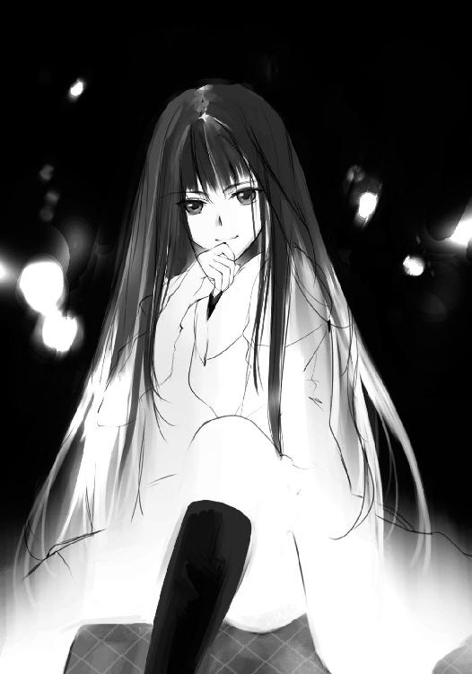

| 12DEMONS II (電撃文庫) | |
| 御堂 彰彦 & タケシ マサトシ | |
| メディアワークス (2012) | |
本書（電子版）に掲載されているコンテンツ（ソフトウェア／プログラム／データ／情報を含む）の著作権およびその他の権利は、すべて株式会社アスキー・メディアワークスおよび正当な権利を有する第三者に帰属しています。
法律の定めがある場合または権利者の明示的な承諾がある場合を除き、これらのコンテンツを複製・転載、改変・編集、翻案・翻訳、放送・出版、公衆送信（送信可能化を含む）・再配信、販売・頒布、貸与等に使用することはできません。
我は眼を刳り貫かれた悪魔
我は口を切り取られた悪魔
我は鼻を削ぎ落とされた悪魔
我は耳を引き千切られた悪魔
我は腕を断たれた悪魔
我は足を椀がれた悪魔
我は胸を捌かれた悪魔
我は腰を貫かれた悪魔
我は血を搾り取られた悪魔
我は脳を潰された悪魔
我は心臓を抉られた悪魔
我は魂を浄化された悪魔
我は十二の部位に分かたれ 人間に封じられた
だが──......
我は呪いを掛けた
同じ時 同じ場所 奪われた我が部位集えば 我復活を果たさん
今がその時 此処がその場
此処がその場 今がその時
我ここに宣言する
復活の儀 始まらんことを
我が十二の部位を受け継ぎし、人間共
我が奪われし 十二の部位を一つの体に宿すのだ
十二の部位を手に入れた者には褒美を取らす
元の世界に戻し どんな願いも一つ叶えよう
生きたい者は奪うべし
相手の部位に直接触れ 『奪う』と宣言せよ
さすればその部位は己がものになる
死にたい者は捧ぐべし
己が部位と同じ相手の部位に直接触れ 『捧ぐ』と宣言せよ
さすればその部位は相手のものとなる
悪魔の部位を失いし者は目覚めることのない眠りにつく
命惜しくば奪い合え
最後の一人になるまで奪い合え
制限時間は今夜零時
生き残るは最後の一人のみ
奪えなかった者に待つのは死のみ
幕間
一人の悪魔を十二人の人間が囲んでいた。
悪魔がこの土地を訪れてから、この土地の平穏は失われた。
疫病の蔓延。地震による地盤の崩壊。日照りと干ばつによる飢餓。子供たちの失踪。原因不明の死者。
この土地の平穏を脅かした悪魔。
悪魔は排除しなければならなかった。
これは決して西洋の呪わしき魔女狩りなどではない。
すでに命を失い、ぴくりとも動かない悪魔を見下ろし、彼らはそれぞれに課した作業を開始した。
一人が悪魔の眼を刳り貫き──
一人が悪魔の口を切り取り──
一人が悪魔の鼻を削ぎ落とし──
一人が悪魔の耳を引き千切り──
一人が悪魔の腕を断ち──
一人が悪魔の足を椀ぎ──
一人が悪魔の胸を捌き──
一人が悪魔の腰を貫き──
一人が悪魔の血を搾り取り──
一人が悪魔の脳を潰し──
一人が悪魔の心臓を抉り出し──
一人が悪魔の魂を浄化し──
そして彼ら十二人は慰霊碑を立て、十二の部位に分断した悪魔を、誰にも触れられぬように地の奥底に封じ込めた。
悪魔は最期に一言こう言い残した。
同じ時 同じ場所 奪われた我が部位集えば 我復活を果たさん──
これがこの土地に伝わる悪魔伝承。
オレたちの町ではあまりにも有名な昔話。絵空事。都市伝説。
──だと思っていた。
あんなことがあるまでは。
十二月十二日午後六時。
聖誕学園の文化祭も終わり、後夜祭前の後片付けをしていたそのとき、それは起こった。
悪魔復活の儀式。眼、口、鼻、耳、腕、足、胸、腰、血、脳、心臓、そして魂。
十二の悪魔の部位を受け継いだオレたちは、オレたち以外がいない、別の世界に呼び出され、悪魔の部位の争奪戦を行わなければならなかった。
相手の部位に直接触れ、『奪う』と宣言し、相手の部位を奪うか。
相手の部位に直接触れ、『捧ぐ』と重言し、相手に部位を捧げるか。
奪うか捧げるかの、悪魔の部位の争奪戦。
悪魔の部位を失った者は目覚めることのない眠りにつく。
オレたちは最後の一人になるまで争奪戦を行わなければならない。
そうでなければ、待つのは死だけだ。
制限時間は今夜０時
時刻は午後九時。
残り時間はあと三時間──
第七章 再開と再会
朽木椎矢と円夜琴葉は、刀納依聖司との争奪戦を行った演劇ホールを出て、保健室に戻っていた。
椎矢は高校生としては平均的な体型の黒髪の少年だ。左右の視力調整のため眼鏡を掛けているが、別に勉強ができるわけではなく、むしろ運動のほうが得意だ。
琴葉は高校生にしては小柄な幼児体型で、よく中学生に間違われる。三年分くらい成長が遅いようだ。髪も染めていない自然な茶色であったり、ぱっちりした瞳やぱたぱた動く動作など、リスみたいとクラスメイトに言われたりしている。
保健室は自分たちが逃げ出したときのままで、クラスメイトの賀来喜久子はベッドで眠っていた。
いつもはツインテールの髪を振り乱すくらい元気な少女で、琴葉のいいお守り役なのだが、今は静かな眠りについている。
もちろんただの眠りではない。悪魔の部位を奪われたことによる覚めることのない眠りだ。
椎矢は落ち着かなさげに保健室を歩き回り、琴葉は眠りにつく喜久子の隣に腰を下ろし、労わるようにその頭を撫でていた。
椎矢は何度も時計を見ては、教室の外に顔を出して廊下の様子を窺っている。
椎矢と琴葉は、途中で出会い、保健室で待ち合わせをして一時的に別れた甲斐谷芙未と有栖川擁子を待っていた。
だがすでに別れてから二時間近くが過ぎているが、二人が現れる気配はない。
自分たちが保健室を離れている間に入れ違いになった可能性も考えられたが、それなら置き手紙の一つもあってしかるべきだ。だがそれもない。
であるならば、来ることができない状況にあるということだ。
不吉な考えは、椎矢の落ち着きをさらに失わせた。
「椎矢くん？ 座ったら？」
琴葉は気遣うように声を掛ける。
椎矢は大きく息をついて、仕方なく椅子に腰を下ろした。
「二人とも、来ないね？」
「迷ってるんだよ」
芙未は三年生。擁子は二年生。こんな争奪戦が行われていても、学校の構造そのものは変わっていない。
悪魔復活の儀式に選ばれたのは、彼らが普段通う聖誕学園だった。ただ、他の生徒が誰もいないだけで、外部と切り離されて敷地の外に出られないだけで、携帯電話もつながらないだけで──
つまり元の世界とは一線を画した異世界であるものの、芙未たちが迷うはずがないということだ。椎矢は自分のいい加減な答えに呆れてしまう。
「これからどうするの？」
「......ああ」
椎矢は生返事で答える。
文化祭当日に学校にある悪魔伝承の資料を読み漁っていた音無千代。そして十二年前に起きた争奪戦の生き残り刀納依誠一の孫、聖司。
この二人がこの争奪戦の秘密を握り、元の世界に戻る手がかりだった。
だがこの二人は何者かに悪魔の部位を奪われ、眠りについてしまった。
そして千代と聖司を陰で指示していた悪魔の魂の所持者は、まだ誰なのかもわかっていない。
制限時間は刻一刻と迫っている。
だが手がかりは失われてしまった。
頼みの芙未と擁子は待ち合わせ場所に来ない。
どうすればいいのか聞きたいのは椎矢のほうだった。
「琴葉はどうしたい？」
椎矢は逆に琴葉に聞いていた。琴葉の意見を頼りにしようというのではない。ただ琴葉の意見を聞きたかっただけだ。
「......椎矢くんの言うとおりにする」
少しの逡巡の後、琴葉の返した答えはそれだった。
「......そうか」
頼りにしようとしたわけでない。だが少しは期待もしていた。何か自分を動かす答えが返ってくることを。
だがそれは無駄だった。
琴葉は能動的に動くタイプではない。
わかっていた。わかっていたが、胸の中にわだかまりが生まれるのはどうにもならなかった。
「椎矢くん？」
「......いや。何でもない」
椎矢は何も言わず、腹の中に溜め込んだ。
「とりあえず、いつまでもここにいてもしょうがない。動こう」
「どうするの？」
「同じだよ。最初と同じだ。まずは喜久子の悪魔の耳を取り戻す」
進む道に迷ったときは初心に帰る。
元々は喜久子が奪われてしまった悪魔の耳を奪い返すために動いていたのだ。奪われた悪魔の部位を返せば、目を覚ますという保証はない。だが、目を覚ました前例もある。椎矢たちはそれに賭けていた。
もっとも喜久子から耳を奪った千代は、自分の悪魔の部位もろとも誰かに奪われ、今は眠りについており、誰が悪魔の耳を所持しているかわからない。
だが見つけ出すことは可能だ。
悪魔の眼を持つ椎矢は、その眼で視た人間が何の部位を所持しているかわかるのだ。それが悪魔の眼の能力。
聖司との戦いで、琴葉の悪魔の口と一時的に交換したが、今は元の状態に戻している。
正直、それにも危険は伴ったが、元々自分のものでない悪魔の部位を所持し続けることと、悪魔の部位を再度交換することのリスクは似たようなものだった。あるいは後者のほうがすでに成功しているだけあって、リスクは少ないくらいだと考えた。
完全な眠りにつくまではわずかなタイムラグがある。
その間に悪魔の部位を交換すればだいじょうぶだと言い聞かせ、二人は悪魔の部位を元の状態に戻した。
その試みは成功し、今は椎矢が悪魔の眼、琴葉が悪魔の口を所持している。
「それが終わったら、また元の世界に戻る方法を考えよう」
元の世界に戻る方法は眠りにつく前の聖司から聞いて、一応はわかっている。
十二の部位を集めた者が、全員で元の世界に戻れるよう願えばいい──
十二の悪魔の部位を集め、悪魔復活を果たした者は、褒美としてどんな願いでも一つ叶えてもらえるのだ。
だがそれは、簡単なようで難しい実現方法。
誰がそれを成すのか。誰なら、他の十一人が納得し、信用し、自身の悪魔の部位を託すことができるのか。
すでに出会った悪魔の腕の所持者の掛衣豪、悪魔の腰の所持者の刀納依聖司、自身の部位はわからずじまいだったが、喜久子の悪魔の耳を所持していた音無千代は、自分が助かるために平気で他人の悪魔の部位を奪いにきたり、自分の願いを叶えるために脅迫してきたりした。
悪魔の鼻の所持者の黒百合空亜は、この争奪戦に関わらず、傍観を決め込んで、今はどこにいるかもわからない。
悪魔の足の所持者の甲斐谷芙未、悪魔の胸の所持者の有栖川擁子だけが、自分たちの説得で何とか力を貸してくれた。
他の悪魔の部位の所持者には、まだ会ってもいない。彼らが自分と同じ考えを持っていて、手を貸してくれるかなどわからなかった。
前途多難な灰色の希望。
だがそれにすがるしか今はない。
「とにかく行こう」
椎矢と琴葉は芙未たちに宛てた書き置きを保健室に残し、まずは悪魔の耳の所持者を探すことにした。
十二月の夜。季節は冬。時計を見れば、時刻は九時半を回ったところ。
校内には暖房が完備されているが、閉鎖された教室と違い、廊下は少し寒い。
「少し寒くなってきたな」
「うん」
昼間は比較的暖かかったのだが、さすがに冷え込んできた。コートは教室のロッカーに置きっぱなしなので、着ているのは制服だけだ。
「コート取りに行くか？」
「あ、ううん。そこまでは平気。椎矢くんは取りに行ったほうがいい？」
「いや、オレは平気だよ」
会話もどこか冷え込んでしまっている。こんな状況に放り込まれて、早三時間半。さすがに疲労も出てきた。
疲労だけではない。椎矢はあちこち怪我をしていた。聖司との争奪戦で捻挫した足はテーピングで固めたため、歩いたり軽く走る分には問題ない。あちこちの打撲は我慢することにする。
と、結露した窓に何かが見えた。
「ん？」
椎矢は窓のほうに寄ってよく見てみる。窓に当たったのは雪だった。雪が降り始めていた。
「雪だ」
椎矢は窓を開けてみる。冷たい風と共に降り始めた雪が吹き込んできた。
急な冷気を当てられ、琴葉はぶるっと震えた。
雪を見るとテンションが上がるらしく、椎矢の硬かった表情が緩んでいた。寒かったが、琴葉は椎矢の隣に立つ。
「今年は比較的暖かいって聞いてたのにね？」
「ああ。積もりそうにはないけどな」
椎矢は手を出して、掌に雪を受け止める。だが雪は一瞬で溶け、水へと姿を変えた。
外はもう真っ暗で、校内の明かりがどこか幻想的に浮かんでいる。
「？」
と、椎矢はそこで気づく。中庭を介して、向かいにある西棟校舎に明かりがついている教室があった。椎矢たちの立っている場所からは、西棟の廊下側が見えるのだが、教室の明かりがついているかどうかくらいはわかる。
聖誕学園は中庭を囲むように、東西南北に棟を持っている。
東棟と北棟は一般教室があり、それぞれ校庭と体育館に面している。一階が一年、二階が二年、三階が三年の教室となっていて、椎矢たちの一年Ｃ組は東棟の一階にある。さっきまでいた保健室が、特別教室として唯一東棟と北棟の角にある。
そして今見えた西棟には職員室、生徒会室、美術室、理科実験室、社会資料室などの特別教室がある。
明かりが点いているのは、職員室と生徒会室の二つ。
行ってみる価値はあるかもしれない。
「琴葉、西棟に行ってみよう。明かりが点いてる教室がある」
「うん」
やるべきことは三つ。
喜久子が奪われてしまった悪魔の耳を取り戻すこと。
聖司の言っていた「十二の部位を集めた者が全員で元の世界に戻れるよう復活した悪魔に願い、叶えてもらう」という方法を、みんなに伝えて実現すること。
そして、裏で糸を引き、刀納依聖司と音無千代を従えていた、全ての鍵を握る悪魔の魂の所持者を見つけ出すこと。
悩んでいる暇はない。
椎矢と琴葉は南棟一階を通って、西棟に渡った。
最初に向かったのは一階にある職員室だった。今まで出会ったのは全員生徒であったが、もし教師がこの争奪戦に巻き込まれたのであれば、今後がやりやすくなると思えた。
もし教師がいるなら、十二の部位を所持する一人となって、全員で元の世界に戻るための導き役を任せるには適任だ。教師が聖職者だなどという迷信はさておき、結局のところ、教師とは生徒を指導し、導くのが仕事だ。
だが職員室はもぬけの空だった。目立つように書き置きがあるわけでもない。明かりが点いていたのは、この争奪戦が始まる前のそのままの状態なだけだろう。
一般教室三つ分はある職員室は、普通の教室に比べてそれだけがらんとしているように思えた。
「いないか......」
椎矢は肩を落とす。思い通りになることなど何もありはしない。
だがそれで立ち止まっている暇はなかった。
椎矢と琴葉は次の生徒全室に向かおうと、職員室を出た。
「！」
と、そこに立っている人影があった。そこにいたのは黒百合空亜だった。
小柄な体の腰まで伸ばした完璧なまでに艶やかな黒髪。一遍の曇りもない透き通るような白い肌。幼い顔立ちと大きな漆黒の瞳の中に浮かぶ無邪気な笑顔。
そんな彼女は学校では変わった人間に位置づけられていた。
猫を生贄に悪魔を召還しようとしたとか、魔法陣を校庭に描いて魔法を使おうとしたとか、宇宙人との交信のために毎日屋上に上がっているとか、少し「イタイ系」の噂だ。
だが空亜はそれを否定することもなく、いつも笑顔を浮かべている。
どこか人形めいた印象を纏って。
「そんなところにいきなり立ってるなよ」
椎矢がぞんざいな口調で言う。椎矢と空亜は周囲には言ってないが、実は幼馴染の関係であった。もっとも今は会話を交わすこともほとんどなくなってしまったが。
空亜はガラスのような瞳で椎矢と空亜を見比べ、
「奪われてなかったんだね？ よかったよかった」
と鈴が鳴るような声で言った。
「ここで何してたんだよ？」
「何もしてないよ。何もしないで歩いてただけ」
空亜は自分では何もできないと傍観することを選んでいた。集団行動が苦手だと、自分たちと一緒にいることも拒否した。
それでも時々、ふらりと現れては顔を見せる。
「椎矢は何してたの？」
「誰かいないか捜してたんだ」
「ふーん」
と、空亜は上を指差した。
「生徒会室に誰かいるみたいだよ」
明かりが点いていたのは、椎矢たちも見ていた。やはり誰かいるようだ。
そして生徒会室に人がいるということは、生徒会メンバーの誰かということになる。教師の次に生徒の上に立つ立場である。頼るにはいいかもしれない。
「じゃあね」
空亜はそれだけ言うと、その場を去ろうとした。
「あの」
呼び止めたのは琴葉だ。
「なに？」
「あたしたちと一緒に......」
「行かない」
空亜の返答はそっけないものだった。
「前に会ったときも言ったでしょ？」
「でも、色んな人が悪魔の部位を奪おうとしてるよ。黒百合さんも危険じゃない？」
「キミと一緒にいるより？」
「空亜！」
椎矢が空亜の物言いに腹を立てて、声を荒げた。
「椎矢くん、いいの」
琴葉が椎矢を止める。その隙に空亜はもう廊下の向こうに行ってしまっていた。
「あいつ......」
「ねぇ、椎矢くん？ 黒百合さんのこと嫌いなの？」
椎矢の態度は、前に空亜と会ったときもおかしかった。椎矢と空亜が幼馴染であることを琴葉は知らないが、何かあることくらいは態度から容易に想像がつく。
「別に何でもないよ」
椎矢はそう言うだけで、多くは話そうとしなかった。
「とにかく生徒会室に行こう」
椎矢は琴葉を連れ立って、三階にある生徒会室に向かった。
琴葉もそれ以上は聞かなかった。
椎矢と琴葉は、西棟三階にある生徒会室のドアの前に立ち、中の様子を窺う。
ドアの擦りガラスと上のほうにある小さな出窓からは明かりが漏れている。人の気配は感じ取れない。
だが空亜の話では誰かいるようだった。
椎矢は琴葉を少し後ろにやり、緊張の面持ちでドアに手を掛けた。
「早く入ったらどうだ？」
機先を制するように中から声が掛かった。
椎矢はびっくりしてドアから手を離す。
「取って食いはしない。早く入れ」
椎矢は一息つくと、意を決したようにドアを開けた。
生徒会室の中には進堂真が教室の奥に一人でいた。
進堂真。生徒会長にして、多くの生徒からの人望が厚い、校内でも一、二を争う有名人だった。直接話をしたことのない椎矢も、彼のことは知っていた。
理知的で厳格な雰囲気が離れていても伝わってくる。
真は椅子から立ち上がりもせず、椎矢と琴葉を迎えた。
「いつまで入り口に立っているつもりだ？ 冷気が入り込む。早く中に入ってドアを閉めてくれないか？」
気圧されそうになった椎矢だが、すぐ後ろに琴葉がいるため、下がるようなことはせず、前に進み、教室の中に入った。
「とりあえずそこに座っていろ」
言われるままに、椎矢と琴葉は生徒会室のソファに座った。
まるで普通のときに生徒会室に来たかのような扱いだった。悪魔の部位の争奪戦が行われていることに気づいているのだろうか、とすら思えてくる。
椎矢と琴葉は微妙な居心地の悪さを感じながら、真の作業が終わるのを待っていた。ちなみにソファはどこから仕入れてきたのか、応接室にあるようなそれで、決して座り心地が悪いわけではない。悪いのは居心地のみだ。
真はパソコンで何やら作業をしている。
椎矢はそっと眼鏡をずらし、真を視た。
悪魔の眼の他者の部位を視る能力は、眼鏡越しだと視えなくなってしまうのだ。
真の体の部位で光っていたのは胸だった。
だが悪魔の胸は擁子の部位である。それに悪魔の胸を視たときと違い、光は左胸にしかなかった。それもどこか鈍い光だ。
体の内に隠れている部位だと、椎矢は気づいた。
真の悪魔の部位は『心臓』だ。
と、一段落したのか、真は席を立ち上がった。椎矢は慌てて眼鏡を戻す。真は椎矢たちの向かいのソファに座った。
「一年の朽木椎矢と円夜琴葉だな？」
「どうしてオレたちの名前を？」
「生徒会長が学校の生徒の顔と名前がわからないでどうする？」
何でもないことのように言うが、それは口で言うほど簡単なことではない。だが真は全てを把握しているかのような口ぶりだった。
「それで、ここには何の用件で来たのだ？ ああ、用がなければ来るなという意味ではないぞ」
真が言いたいのは、すでに真の指示で動いている生徒会メンバーの京部創那と紗々木智事加の指示で来たのではないだろうというだけだ。
だがその二人がこちら側に来ていることを知らない椎矢たちには、そんなことはわからない。
「あの、明かりが見えたもので、誰かいるのかと思って」
「そうか」
真は静かにうなずく。
「奪いに来たわけではないのだな？」
刺し貫くような鋭い視線だった。真が悪魔の眼の所持者と言われれば信じてしまいそうな眼光だ。その眼光に射すくめられるように、椎矢はうなずく。
「ではなぜ俺の心臓を見ていた？」
真の指摘に、椎矢の心臓が跳ね上がった。
見られていた。パソコンで作業しているふりをして、こっちの出方を観察していたのかもしれない。
「あ、その......」
言い逃れができるとは思えなかった。観念した椎矢は素直に自分の部位と能力を白状した。相手は一人しかいなかったが、針のむしろにいるような気がした。
「で、でも、奪うつもりはありませんでした、本当です」
「視えるものは視てしまうだろうが、迂闊な使い方をすれば、誤解を生む。悪魔の部位の能力に限ったことではないが、能力の使用は時と場合を選ぶことだ。能ある鷹は爪を隠すとも言うしな」
先輩から後輩への忠告のように、真は言った。
「すみません」
「まあいい。では君たちの身柄は生徒会で保護しよう」
勝手に進む話に、椎矢は困惑する。
「保護？」
「そうだ。悪魔の部位を奪う気のない生徒は、保護することにしている。今、俺以外の生徒会メンバーにも、他の生徒たちにここに集まるよう呼びかけてもらっているところだ。君は会っていないようだがな」
もし会っていたのなら、そう言うはずだし、生徒会室の前で悩んでいたりはしない。
「......集めて、どうするつもりですか？」
「当然、全員で元の世界に戻るために協力をしてもらうつもりだ」
椎矢は真の言葉に驚きを隠せなかった。
「何を驚いている？」
「あ、いえ。初めて同じ考えの人に会えたと思って」
これまでに会った悪魔の部位の所持者は、それぞれ自分のことしか考えていなかった。豪、千代、聖司には襲われた。空亜は完全に傍観している。芙未や擁子にしても、今は手を貸してくれているが、最初は成り行きに任せようとしていた。さらに言えば、琴葉だって自分についてきているだけだ。
真っ先に全員で元の世界に戻ろうと言ってきたのは真が初めてだった。そして真がそう考えているということは、他の生徒会のメンバーも同じ考えなのだろう。
椎矢は初めて同志を得た気持ちになった。
「よほど悲惨な目に遭ったようだな」
真が珍しく同情めいた発言をした。
「少し話を聞こうか。君たちのこれまでのことだ」
「はい」
椎矢はこの世界に来たときのこと、これまで出会った生徒たちとその争奪戦のこと、芙未たちと探った十二年前の悪魔の部位の争奪戦につながる集団行方不明事件のことなどを細かく話した。
この世界では命にも匹敵する悪魔の部位の情報についても、このときばかりは話してしまった。むしろ話さないという選択肢が思いつかなかった。
それほど椎矢にとっては、真の言葉がうれしく、心強かった。
長い話となったが、真は口を挟むことなく、最後まで聞いてくれた。
「随分と苦労をしたのだな？ それに君たちが一番多く出会ったようだ。情報提供を感謝する。しかしそうか。刀納依聖司はすでに奪われた後か......」
真も刀納依聖司には目をつけていたようだった。
十二年前の集団行方不明事件のことを、真は椎矢から聞く前に知っていた。一度だけ、この地区の地方新聞に載っていた記事を読んだことがあったからだ。
そしてその集団行方不明事件が悪魔の部位の争奪戦であったことは、現在の状況との類似性から予想していた。
さらにはその集団行方不明事件の唯一の帰還者である刀納依誠一を祖父に持つ、刀納依聖司が何らかの形でこの争奪戦に関わっており、何かを掴んでいただろうことも、真にとっては予想の範疇だった。
だがすでに奪われた後とあっては、話を聞くこともできない。
「彼は何か言っていなかったか？」
「刀納依先輩は、全員で元の世界に戻る方法を教えてくれました」
「それは、十二の部位を手に入れた者が元の世界に戻るよう願う方法以外のものか？」
「......まさしくそれです」
真はすでにそこまで気づいていたようだ。
自分たちが必死になって集めた、あるいは結果的に手に入れた情報は、真にとっては元々の知識と、生徒会室にいながら集められる情報、そして自身の推理で補える程度のもののようだ。
椎矢は格の違いみたいなものを見せ付けられたような気がした。
「でもそれには問題があります」
「誰がその一人になるか、か？」
その答えも真の頭にはすでにあったらしい。もう驚きはしない。
「そうです。十一人が全員、自分の部位を信用して捧げることができる人なんていませんよね？ 刀納依先輩も言ってました。だから奪うしかないんだって」
「まあ、そのとおりではあるな」
「？」
真の返事がそれほど賛同したもののように思えなかった。まるで他にも問題があるかのようだった。
「他にも何か問題があるんですか？」
「いや。それよりも他に何か言っていなかったか？」
「音無先輩や刀納依先輩を従わせて、この争奪戦を始めたのは、悪魔の魂の所持者だって言ってました」
「悪魔の魂の所持者？」
そこで初めて真が疑問を返した。やっと役に立てたような気がした。
「はい。そいつが、全てを握っているみたいなんです。悪魔伝承も、復活の儀式のことも、争奪戦のルールのことも、そして悪魔の部位の所持者のことも、全て最初から知っていたみたいなんです」
「それは誰だ？」
「......わかりません」
「わからない？ 君の悪魔の眼は視た者の悪魔の部位がわかるのだろう？」
真が椎矢の答えに怪訝な顔をした。
悪魔の眼の能力についても真にはもちろん伝えていた。だが会ってもいない人間の悪魔の部位まではわからない。
「......そうなると話の辻褄が合わんな」
真が静かに指摘する。
「辻褄が合わない？ どこがですか？」
「さっき俺が言った生徒会の他のメンバーとは京部創那と紗々木智事加の二人のことだ。二人は悪魔の血と脳の所持者で、俺自身は悪魔の心臓の所持者だ」
「え？ 生徒会のメンバーって二人いたんですか？」
それを聞いた椎矢が反応した。
「そうだ。気づいたか？」
「あの、ちょっと待ってください」
椎矢は一人考え込むように黙ってしまった。琴葉は何がおかしいのかわからない様子で、椎矢に問いかける。
「椎矢くん、どういうこと？」
「おかしいんだよ」
「何が？」
「合わない......」
「合わないって何が？」
「人数、じゃなくて、悪魔の部位？ とにかく合わないんだ」
「？」
要領を得ない表情の琴葉に、椎矢が説明する。
「オレたちが今まで会ったのが自分たちも含めて、十人だろ？」
「えっと」
琴葉は自分を含め、これまで会った人を指折り数えていく。
朽木椎矢、円夜琴葉、黒百合空亜、賀来喜久子、掛衣豪、甲斐谷芙未、有栖川擁子、音無千代、刀納依聖司、そして今、進堂真に会った。
「それで、まだ会っていないのが、京部先輩と紗々木先輩の二人、これで十二人」
椎矢の言うとおり、これで十二人。十二の悪魔の部位の所持者が揃ったというわけだ。
「......揃った？」
確かに何かがおかしい。それはわかるが、それが何かに琴葉は気づけない。
「え？ 何だろう？ あれ？」
真は言った。辻褄が合わないと。
椎矢は言った。人数と悪魔の部位がおかしいと。
「つまり、今まで会った人の数と、悪魔の部位の数が合わないんだ」
今まで出会った人数は十人。まだ会っていないのが二人。会っていない二人は悪魔の血と脳の所持者。
それなのにまだ椎矢は悪魔の魂の所持者に会っていない。
「どういうことだ？」
朽木椎矢 ＝悪魔の眼の所持者
円夜琴葉 ＝悪魔の口の所持者
賀来喜久子 ＝悪魔の耳の所持者
黒百合空亜 ＝悪魔の鼻の所持者
掛衣豪 ＝悪魔の腕の所持者
甲斐谷芙未 ＝悪魔の足の所持者
有栖川擁子 ＝悪魔の胸の所持者
刀納依聖司 ＝悪魔の腰の所持者
進堂真 ＝悪魔の心臓の所持者
紗々木智事加＝悪魔の脳の所持着
京部創那 ＝悪魔の血の所持者
つまり消去法で言えば──
音無千代 ＝悪魔の魂の所持者
悪魔の眼で視ることはできなかったが、千代は間違いなく喜久子から奪った『耳』を所有していた。
だが他の部位は確認できなかった。眼鏡をはずして視る余裕がなかったのだ。
千代は本来、何の部位の所持者だったのだろうか。
消去法から言えば、悪魔の魂の所持者となる。確かに千代は自分が二つの能力を持っているかのようなことを言っていた。つまり、あのとき千代が所持していた悪魔の部位は自身の『魂』と、喜久子から奪った『耳』。
だがそうなると矛盾が発生する。
聖司は悪魔の魂の所持者に命令されて、登校拒否中の千代を呼び出したのだ。
聖司が嘘をついていたのか、それとも千代の自作自演なのか。
だが千代は何者かに悪魔の部位を奪われ、今は眠りについている。
つまり、千代から悪魔の耳を奪った誰かが、一緒に魂も奪ったということか。
あるいは、千代の眠りそのものが演技だった。
だが、千代が眠りについていたのは椎矢自身が確認したので、間違いない。
そうなれば前者が可能性として一番高い。
しかし聖司の話した感じでは、まだ悪魔の魂の所持者は無事でいる様子だった。奪われたことを知らないだけだろうか。
消去法で考えると、どうしても千代が悪魔の魂の所持者となる。
だが千代が悪魔の魂の所持者とした場合、どうも腑に落ちない点が残る。
思考は単にループするだけだった。
椎矢はだんだん千代が眠りについていたのか、自信が持てなくなってきた。
「オレ、確かめてきます」
いてもたってもいられず、椎矢は南棟の廊下で眠っているはずの千代が、本当に眠りについているのかもう一度確かめにいこうと、生徒会室を飛び出そうとした。
だがそれより先に、生徒会室のドアが開いた。
椎矢は勢い余って、ドアの向こうに立っていた誰かとぶつかる。ぶつかった拍子に眼鏡が床に落ちる。
そこに立っていたのは、京部創那だった。
「ただいまーって、あれ、お客さん？」
椎矢は創那を見上げた。露になった悪魔の眼で──
「悪魔の耳......」
創那の耳が、悪魔の耳であることの証明である光を放っていた。
「どうして先輩が悪魔の耳を持ってるんだ！」
「落ち着け」
いつの間にか背後に立っていた真が、混乱と興奮する椎矢の肩を掴んだ。
「どったの？」
創那はわけがわからないように、小首をかしげる。
「俺にはわからんが、お前は今、悪魔の耳を持っているのか？」
「うん。持っているよ」
悪びれた様子もなく、創那はうなずく。
「どうしてお前が持っている？」
ほんの一瞬の逡巡──
「生徒の保護のために校内を回っていたときに、悪魔の耳の所持者に会ってね。それでいきなりカッターで切りつけられたんだ」
と、創那は手を見せた。その手は痛々しいほどに赤く染まっていた。椎矢もその血の量に驚き、興奮がどこかに行ってしまう。
「何とか説得を試みたんだけど、無理でね。仕方なく奪ったんだ」
「その人は誰ですか？」
「えーと、名前は知らないけど、小柄で髪の青い女の子だったよ」
「それはおそらく二年生の音無千代だな」
真が名を言うまでもなく、間違いない。それは千代だ。
「で、それが何か？」
「悪魔の耳は、ここにいる朽木椎矢君と円夜琴葉さんのクラスメイトの部位だったらしくてな。彼らはそれを探していたそうだ」
「ヘー。そうなんだ？」
創那は椎矢に歩み寄ると、椎矢の耳に触れる。
「え？」
「『捧ぐ』」
創那は何の躊躇もなく、椎矢に悪魔の耳を捧げた。
「それじゃそのクラスメイトに返してあげるといいよ。ああ、心配しないで。僕本来の部位は持ってるから、眠りにはつかないよ」
創那は屈託のないと言える笑みを浮かべ、椎矢にそう言った。
創那の体は鈍く薄い光に包まれていた。悪魔の血の所持者は、そう視えるようだ。
「いいんだよ。気にしないで。別に僕は欲しくて奪ったわけじゃない。悪魔の部位も本物の持ち主のところに返ったほうがいいよね？」
「そのとおりだな。ひとまず保健室に戻って、君のクラスメイトに耳を返してやるといい」
真は落ちていた眼鏡を返してやりながら、椎矢の肩を叩く。
「あ、は、はい」
あまりに唐突な、そして都合のいい展開に椎矢はやっと我に返る。敵愾心と興奮をどこかに飛ばされてしまった気がした。
「すいません、何か興奮して、失礼なこと言っちゃって......」
「気にしないで。こんなときだから、常に冷静でなんていられないよ」
「琴葉、これで喜久子の目が覚めるぞ」
「ほんと？」
琴葉は悪魔の魂の所持者が誰かという疑問などどこかへ追いやり、驚きと喜びを混ぜ合わせた表情をした。
「それじゃ、ちょっと行ってきます」
「気をつけろよ。それから用が済んだら三人でここに戻って来い」
「はい」
椎矢と琴葉は話を途中で切り上げ、飛び出すように生徒会室を出ようとした。
二人は真と創那に背を向ける──
「お二人は悪魔の部位を私利私欲で奪ったりしませんよね？」
琴葉が振り返り、静かに言った。
「もちろんだよ」
創那の返事を確認すると、琴葉は椎矢を追って生徒会室を出て行った。
「あれが悪魔の口の能力かな？」
悪魔の口の能力。それは、その言葉で相手を従わせるという能力──
真と創那は悪魔の部位の能力をすでにいくつか把握していた。
悪魔の部位の能力を知ることのできる、智事加の悪魔の脳の能力による情報のおかげだ。
「先手打たれちゃったな」
あのとき、背を向けた一瞬、創那はカッターの刃で自分の手を傷つけようとした。悪魔の血は相手の部位に付着することで、触れていることと同等となり、離れていても奪うことができるのだ。また自動追尾機能があるため、直接血をつけなくても、床に垂らすだけで、相手の部位に達してくれる。
だが今の琴葉の言葉で、それは止められてしまった。
「ま、今でなくてもいいか」
創那は手にしていたカッターの刃をポケットにしまった。
「で、そんな慌てて人払いしてどうしたのさ？」
創那は苦笑交じりに、生徒会室のドアを閉め、ソファに身を沈めた。
「お前が嘘を貫き通せるか不安だったものでな」
「僕に嘘をつかせて右に出る奴はいないよ」
創那は悪魔の耳の件でついた嘘を思い出し、舌を出した。
「悪魔の耳を奪ったのは智事加だな？」
「ご名答」
「その生徒、音無千代というのだが、彼女は他の部位を持っていなかったか？」
先程の椎矢とのやり取りからするに、千代が悪魔の魂の所持者である可能性が高い。だが創那はかぶりを振った。
「僕が覗き見する限りはなかったね。智事加さんもその時点では脳と耳しか持ってなかったし」
「その時点では？」
創那は屈託のない笑みの中に、矛盾する邪気を眼鏡の奥の眼に浮かべ、
「今の彼女は──」
「私のことは、私がお話致します」
智事加が「失礼します」と生徒会室の中に入る。智事加の性格上、聞き耳を立てるようなことはない。ちょうど戻ってきたのだろう。
その姿を見て、真が眉をひそめた。
目に見えない何かが変質している気がした。
「二人とも、最初から話せ」
真が創那と智事加に状況報告を促した。
椎矢と琴葉は逸る気持ちを抑えつつ、東棟一階の保健室に向かった。
やっと取り返した悪魔の耳。これを喜久子に返せば、彼女は目を覚ますかもしれない。
奪われた悪魔の部位を戻してやれば目を覚ますという保証はない。だが可能性はゼロではない。椎矢と琴葉はそれを信じて、悪魔の耳を探していたのだ。
椎矢と琴葉は保健室に飛び込むように中に入る。ベッドの上では変わらず、喜久子が静かな眠りについている。
椎矢は琴葉を一度見て、うなずいてみせる。琴葉もどこか興奮したようにうなずき返す。
椎矢は喜久子の耳に触れる。
さっき創那が椎矢にしたように、相手の部位に触れて『捧ぐ』と宣言すれば、相手にその悪魔の部位を捧げることができる。
確証のないこの行為。だが、なぜか二人はこれで何とかなるという確信があった。それは願望に近い確信。願望の作り出した都合のいい確信。それでもすがるべき唯一の確信。
喉に張り付いた緊張を固唾と一緒に呑み込み、椎矢は宣言する。
「『捧ぐ』」
椎矢は自分の耳から、喜久子に悪魔の耳が移動したことを肌で感じた。
二人は喜久子を凝視する。
「........................」
二人はベッドに前のめりになる。
「ん......」
喜久子が小さく呻くような声を上げた。
「キクちゃん！」
琴葉が思わず、喜久子の名を叫ぶ。
喜久子はまるでただの睡眠から目覚めるように半目を開き、ぼーっと視界を覆う椎矢と琴葉の顔を見やり、
「おっはー」
などと間の抜けた古めかしい挨拶をしてきた。
だが二人にはそれで十分だった。
椎矢と琴葉は顔を見合わせて満面の笑みを形作り、琴葉は喜久子に抱きつき、椎矢は小さくガッツポーズをした。
「ほヘ？」
抱きついてくる琴葉を抱き留めながらも、喜久子はわけがわからないように呆けて、椎矢と琴葉を交互に見ていた。
自分たちが落ち着くのと、喜久子の頭がはっきりするのを待ち、椎矢は状況を説明した。とりあえず説明したのは悪魔の部位とその争奪戦のことだ。
それを聞いた喜久子の第一声は──
「冗談でしょ？」
当然といえば、当然の反応だった。こんな話を何の疑いもなく信じ込めれば、そのほうが頭がおかしいと言える。
だがこれは紛れもない真実であり、現実であった。
「......本当、なの？」
椎矢と琴葉はもう笑顔を収め、真剣な顔でうなずいた。
「冗談だったら怒るよ」
「むしろ冗談であってほしいよ。いくらでも怒られてやるから」
二人がここまでまじめな顔をして騙そうとするような性格でないことを知っている喜久子は、半信半疑くらいの信用はした。いや、むしろ半分も信じている自分が不思議なくらいだ。
「悪魔の部位？ あたしが悪魔の耳の所持者？」
喜久子は何となしに自分の耳に触れる。空想上の悪魔のように異様に尖っているわけでもなく、今まで十数年付き合ってきた耳と何ら変わりない。
「悪魔の耳の能力は真偽を聞き分ける能力なんだ。本当のことだってわかるだろ？」
悪魔の部位であることを証明する光を発する喜久子の耳を見ながら、椎矢は言った。
確かにこんな突拍子もない話なのに、二人が嘘をついているとはどうしても思えなかった。それは信用とは別の、妙な確信だ。
「まあ、とりあえず信じるわよ。二人が言うんだから」
信じるが、理解はできていない。そんな様子だが、今はそれで十分だった。
「お前、悪魔の部位を奪われる前、だから気を失う前のこと覚えてるか？」
椎矢としても喜久子に聞きたいことは山ほどあった。
理解する暇をあげたかったが、そんな時間も今は惜しい。
「気を失う前？ えっと、演劇部の公演見て、その後、片づけのときに暗幕返しに行ったんだよね。それで暗幕を置いて、倉庫を出ようとしたら、そう。物が崩れてきたんだ。それで......後はよく覚えてない」
「元々は体育館に行くはずだったんだよな？ 倉庫に持ってくって誰に言われたんだ？」
「あー、名前までは聞かなかったなー。髪が青い目立った人だったけど」
椎矢と琴葉は顔を見合わせた。
喜久子から悪魔の耳を奪ったのが千代であることが、喜久子本人からも確証が取れた。つまり千代は他の部位の所持者だったという証明でもある。
消去法だけでなく、状況証拠でも、やはり千代が悪魔の魂の所持者となる。
「あ、もしかして二人が助けてくれたの？」
話しながら、倉庫の荷物の下敷きになってない自分に気づいて、喜久子が確認した。
「まあな。でも、そんときはもう奪われた後だったけどな」
「そっかー、ん？ ってことは、あたしどうやって保健室に？」
「椎矢くんがずっとおぶってくれてたんだよ」
「そうだったんだ。......朽木」
喜久子が椎矢を上目遣いに見る。
「背中に感じたわたしのおぱーい、やーらかかった？」
「あほか！ つか、大してねーだろ！」
「ひどい！ 琴葉、朽木が言葉責めする！」
「今のはキクちゃんが悪いよ」
泣きつく喜久子をぽんぽん叩いて便宜上慰めながらも、琴葉は乾いた声でつっこんだ。
「いやー、でも、さんくちゅね。朽木」
喜久子も素直に礼を言うのが、照れくさかったようでふざけた会話の中に紛れ込ますように礼を言った。
「別にいいよ。いい筋トレになったし」
椎矢も礼を言われるのがどこか照れくさかったようで、そっぽを向いてぶっきらぼうに答えた。
琴葉はそれを見て、元の世界に戻ってきたような思いに捉われた。もちろんただの錯覚だが、その願いが叶うのは間近のような気がしてならなかった。
「それで、えーと、これからどうすればいいのかな？」
珍しく喜久子が建設的な問いかけをした。
「とりあえず生徒会室に戻る。さっきまで生徒会室で進堂先輩たちと一緒にいたんだ。ちなみに京部先輩がお前の耳を取り返してくれたんだ。お礼言っておけよ」
西棟の生徒会室に戻る際に、念のため、千代が眠りについていた南棟を通ることを椎矢は決めた。
もし千代がいなかったら、彼女が現在の悪魔の魂の所持者だ。
もし千代が眠りについていたら、誰かが悪魔の魂を奪ったということになる。さっき確認しそびれたが、あるいは創那が悪魔の魂を奪ったのかもしれない。そうであれば、もうその件に関しては、問題はない。裏で糸を引いていた人物がもういないことを示しているのだから。
できることなら、後者であり、後は真たち生徒会のメンバーと、芙未たちと合流し、元の世界に戻るために時間と労力を使いたかった。
「あ、書き置き変えておこうよ」
琴葉が言っているのは、保健室に置いていった芙未と擁子宛の書き置きのことだ。
さっきまでの書き置きには、行き先は書けなかった。今度は生徒会室にいると明記できる。芙未たちが保健室に来ても、擦れ違うようなことはなくなる。
「書き置きって誰に？」
「芙未先輩と擁子先輩だけど」
「ウソ。二人もいるの？ いやん。これって運命かしら。あ、ちょっと寝癖ついてない？ 目やについてない？ 鼻水ついてない？」
喜久子は芙未の大ファンで、校内のファンクラブにも加盟している。
「別に向こうはお前に寝癖があろうが、目やにがついていようが、鼻水垂らしていようが涎だらだらだろうが、寝小便してようが気にしないぞ」
「それはいくらなんでも気にするよ」
喜久子に当てられてか、椎矢がどんどん下品になっていくのが、悲しい琴葉だった。
「そうよ。ファンたるもの、自分のほうを向いたら、目が合ったと思えってのが鉄則よ。今日の舞台でもわたし五回くらい目が合っちゃったんだから」
今がどんな状況なのかわかっていないのか、それともただ単に楽観的なだけなのか。
「お前のそのポジティブなところは見習いたいよ」
「そう？ 照れるな」
「褒めてねーよ」
だが椎矢も琴葉も、喜久子のその楽観的な面に、これまで重く苦しかった気分が軽くなるのを感じていた。
「だーってぇ。わたし寝てるときに鼻水出るのよねー。寝鼻水って言うの？ いつも朝とか授業中とか大変なんだから。っていうか、寝耳に水って諺、あたし寝耳に鼻水ってことだと思ってた。いや、横向いて寝たって鼻水は耳に入らないでしょみたいな？」
「キクちゃん、そろそろやめて」
気分は軽くなったが、少しばかりどんよりした。
「ありゃ？」
喜久子が手を見て、変な声を出した。
「どうしたの？」
「血がついてる。あり？ どっか怪我したのかな？」
「え？ だいじょうぶ？」
琴葉が一転、心配した声を出す。
椎矢も少し心配になって喜久子を見る。
悪魔の部位を奪われて眠りについていたことばかりに目がいっていたが、喜久子は倉庫で下敷きになっていたし、図書館では豪の倒した本棚の下敷きになりかけたのだ。怪我の一つや二つしていても不思議ではない。
だが喜久子は平然としたものだった。
「だいじょーぶ。だいじょーぶ。だいじょーぶい」
「古っ」
「もう乾いてるし、ちょっとだから心配ないよ」
「キクちゃん。とりあえずティッシュ」
琴葉が机の上にあるティッシュの箱を手に取る。
「へい、パース」
ベッドの上の喜久子が両手を挙げて、琴葉にティッシュの箱を投げるよう要求した。
「えっと......」
「早くー」
「えい」
大した距離があったわけではないが、破滅的にコントロールの悪い琴葉の投げたティッシュの箱は、喜久子の手のはるか上を通って、仕切りのカーテンの上を通り過ぎ、隣のベッドのほうに消えていった。
「ホームラーン！」
「暴投って言うんだよ」
「キクちゃん、あたしが運動苦手なの知ってるくせに」
恨めしげに琴葉は言った。
「朽木ー、取ってきて」
「何でオレが」
「いいぢゃーん。わたし病人なんだしー」
「どこがだよ。元気ありすぎじゃねぇか」
渋々文句を言いながらも、椎矢は隣のベッドに消えていったティッシュの箱を取りにいった。
その隙を見て、喜久子が琴葉を手招きして呼びつけて、小声で話す。少しだけ神妙な、女の子同士の内緒話だ。
「大変だったんだね？ ごめんね、琴葉。ありがと」
琴葉がどれだけ辛い思いをしていたか、雰囲気で察することができた。そしてそれは椎矢には言えない類のものだと。それくらいの付き合いではある。
「ううん。目が覚めてよかった。あのままだったら、どうしようかって思った」
琴葉が泣きそうになるのを、喜久子がなだめる。
「でも朽木がいたから心強かったっしょ？」
「うん。でもあたしは何の役にも立てなかった」
琴葉の苦悩の一端はそれだった。
そしてそれは喜久子の予想の範疇だった。
「そっかなー？ 朽木も琴葉がいて、心強かったと思うよ」
「そんなことないよ」
「そんなことあるよ。だって、今あたしがパニクってないのって、琴葉と朽木がいるからだもん。知ってる人が傍にいるってだけで、全然違うよ。役に立つ立たないなんて二の次だよ。琴葉だって、別に朽木が役に立ったから心強かったわけじゃないでしょ？」
確かにそのとおりだった。確かに椎矢は頼りになったし、自分では決められないことも決めてくれた。だがそんなことで心強かったわけではない。ただ一緒にいれただけで、もう十分に心強かった。
椎矢もそう思っていてくれたのなら、琴葉にとってそれは嬉しいことだった。
「だから自分を責めたらダメだよ」
「うん」
よかったと思った。こんなことを思ってはいけないのかもしれないけれど、今ここに喜久子がいてくれたことが琴葉は心底うれしかった。
「はい、終わり」
と、喜久子が琴葉の頭をぽんぽんと叩き、
「朽木ー、まだー？」
仕切り越しに、なかなか戻ってこない椎矢に声を掛けた。もしかしたら内緒話だと察して耳をふさいでいるのだろうか。そういうところは変に気の回るやつだと喜久子は知っている。
「朽木ー、もういいよー」
喜久子がもう少し大きな声でもう一度椎矢を呼んだが、返事はなかった。
琴葉と喜久子は怪訝に思い、顔を見合わせる。
「椎矢くん？」
琴葉はベッドから飛び出た喜久子と共に、仕切りのカーテンを開け、隣のベッドに移る。
そこには椎矢が呆然と立ち尽くしていた。
「何してんのよ？ 返事くらい......」
椎矢の後ろに立ってその肩を叩いた喜久子も、固まったように言葉を途中で止めた。
「どうしたの？ 二人と......」
琴葉も隣に立ち、二人が固まった理由を知った。
ゴーン、ゴーン、ゴーン、ゴーン、ゴーン、ゴーン、ゴーン、ゴーン、ゴーン、ゴーン......
鐘の音が鳴り響く。
時刻は午後十時。
残り時間はあと二時間。
だがそんな鐘の音など、椎矢たちの耳には届いていなかった。
「そ......んな......」
こんなはずではなかった。
保健室で再会の約束をしていた。
だけどそれはこんな形ではなかった。
隣のベッドには、静かに眠りにつく──
第八章 遠く離れて
時間は少し遡る。
甲斐谷芙未と有栖川擁子が掛衣豪を追って、報復を果たしてすぐのこと──
「先輩、これからどうします？」
気を失っている豪には興味を失ったように、擁子は芙未を見た。だが芙未は自らの蹴りで気を失わせた豪をしばらく見下ろしていた。
まだ豪から悪魔の腕を奪っていない。芙未は奪う気はないと言っていたが、このまま豪を野放しにするのも確かに危険な気もする。
芙未は豪から悪魔の腕を奪うのだろうか。それを悩んでいるのかと、擁子は思った。
と、芙未は静かに振り返った。その顔はいつになく真剣だ。
「先輩？」
芙未はがばっと制服の下から両手を突っ込んでその胸を掴んだ。
「ひゃぁぁぁぁっ！」
擁子の悲鳴が木霊する。
「これが悪魔の胸か。確かに悪魔級だな。男から見ると悪魔のような魅惑の胸ってことになるのか。よし。今日から爆乳悪魔っ娘。と名づけよう」
わしわしと揉みしだきながら、芙未はふむふむとうなずいた。
擁子は身をよじって、芙未の悪魔の手ならぬ魔手から逃れ、真っ赤になって怒鳴った。
「芙未先輩！」
「冗談だよ、冗談。何だよ、アタシがあんたの部位を奪うとでも思ったのかよ」
意地の悪い笑みを浮かべ、芙未がさっきの感触を思い出すように手をわしわしと動かす。
「アタシがそんなことするわけないだろう？」
「そんなことするとは思ってませんけど、奪う奪わないじゃなくて、胸を触らないでください」
「いいじゃないか。いつもしてることだし」
「そういう知らない人が聞いたら誤解されそうなことも言わないでください」
「はは」
芙未が小さく笑った。だがそれはいつも擁子が知っているような笑みではない気がした。
「芙未先輩？」
「ん？」
「どうかしたんですか？」
「......ああ、ちょっと甘く見てたなって思ってさ」
豪に一度は悪魔の足を奪われ、眠りについた芙未はさすがに神妙な顔をしていた。
擁子と、椎矢たちのおかげで悪魔の足を取り返してもらい、さらに運良く目を覚ますことができたが、あのまま眠り続けてもおかしくはなかった。
「こんな馬鹿げた争奪戦に加わる気はなかったし、他の奴も参加しないだろうって思ってた。椎矢たちみたいにみんなで助かろうとする奴らばっかかなって思ってたんだけどね」
「自分だけが助かれば、それでいいという人もいますから。窮地になればなるほどその人の本質が出ます」
「まったくだね」
「芙未先輩、もう奪われないでくださいね」
擁子は心臓が停まるような思いをしたあのときを思い出し、表情を翳らせた。
「ああ、わかってるよ。あんなのは二度とごめんだよ」
眠りにつく感覚に似ているといえば似ていた。目を覚ましたときも寝起きの感覚に似ていた。だが明らかに別物だ。心と体が恐怖を覚えている。
芙未は自分の手を見た。思い出すだけで震えが走る。五感がゆっくりと真綿で首を絞めるように薄れていくあの感覚。見えなくなり、聞こえなくなり、触れられなくなり、感じなくなる。そして訪れる完全な無。世界からの完全な隔絶。死ぬときもあんな感じなのだろうか。
「芙未先輩」
芙未の手を擁子が包み込むように、優しく握る。
「おまじないです」
擁子がそっと芙未の手に口づけた。
その温もりに、その感触に、その存在に、そしてその想いに震えが止まる。
「......あんたこそ奪われるんじゃないよ」
「はい」
「奪われるってことは、あんたの胸に直に触られたってことだからね。直だよ、直。服の上からでも許せないってのに。擁子の胸はアタシんだ。他の奴の手垢に汚されてたまるかってんだ」
「またそういうことを！」
だがよくよく考えれば、基本的には服の上から触れても奪えないので、奪われるということは直接触られるということだ。それを考えるだけでも悪寒が走る。
自分の胸を触ったことがある人間は今のところ芙未だけだ。......それもどうかと思う。
「さて、保健室に行くか？ 椎矢たちが待ってるだろ」
「はい」
「ついでに制服の代えも探したいところだな。椎矢が欲情しちまう」
胸元を押さえる擁子。豪に破られた制服からは下着が覗いていて、今にも中身がこぼれそうだった。改めて怒りが込み上げ、芙未は倒れている豪の頭を踏みつけた。
「あの、やっぱり奪うんですか？」
豪を踏みつけている芙未を見て、擁子はそう捉えた。
「あん？ 奪わないって言ったろ？ ......でもこいつを野放しにするくらいだったら、アタシがもらってったほうがいいかもしんないけどね。とりあえずどっかに縛り付けておくか」
「では私が代わりにいただきましょうか？」
そこに現れたのは紗々木智事加だった。
千代との争奪戦で、悪魔の耳を奪ってすぐのことだ。
「......覗き見は趣味悪いぞ」
一部始終を覗かれていたことで、芙未が不機嫌になる。
「申し訳ありません。お邪魔かと思いまして」
「思ったなら最後まで出てくるな」
白々しい言葉に対して悪態をつき、芙未は智事加に向き直った。智事加のことは芙未も擁子も知っていた。もっともこの世界に来ていたことまでは知らなかった。
「そうもいきません。私は生徒会副会長として、この争奪戦を終わらせるために動いているのですから」
「生徒会として？ 他に生徒会の誰がこの争奪戦に参加しているんだ？」
「それはまだお答えできません。ご想像にお任せします」
まだ、答えられない。
千代のように、殺してでも奪おうとする生徒までいるのだ。二人が生徒会に協力するか、最低でも抵抗の意志がないことを見極めなければ、真の存在を伝えるわけにはいかない。彼に危険が迫ることだけは避けなければならない。
「まあ、別にいいけどさ」
それはおいおいわかることだろう。
「で、それ奪ってどうする気だ？」
芙未が気になるのはそっちのほうだった。智事加も豪のように奪う側の人間なのだろうか。
だが芙未の言いたいことを察し、智事加はかぶりを振った。
「一時的に眠ってもらうだけですよ。このまま放置しておけば、その人はまた誰かの部位を奪おうとするかもしれませんから。確かにこんな状況で全員が全員正常でいられるはずがありません。正常な判断ができず、暴走してしまう方もいます。仕方のないことです」
「何でそいつが奪う側だって思ったんだ？」
自分たちではなく、豪が奪う側であったことを知っている。どこから見ていたのか、いつから会話を聞かれていたのか。警戒が強まる。
「気を失っている掛衣さんから奪おうとしなかったからですよ。それにお二人と彼の普段の素行を考えれば自ずとわかるというものです」
智事加は今日の文化祭でも騒動を起こした豪を見ていた。彼は素行不良の生徒として生徒会のブラックリストの一人に入っている。
「だからって奪っていいもんでもないだろう？」
「ですが、そんな生徒をそのまま放置するのはあまり得策とは思えませんが？」
「奪わずに済む方法を考えないのか？」
「それが最良であることは認めます。説得して改心するようであれば、それに勝るものはありません。こんなことで争いになることを望みませんから。ですが、理解しない生徒もいるでしょうし、時間も限られています」
智事加の言うことはもっともだったが、それで奪った側が何をするかによっては話が変わってくる。
「全員で元の世界に戻るためには、多少の犠牲はやむをえません」
「犠牲がある時点で、全員ってのにならないだろうが」
「ご安心を。我々生徒会の望みは、この争奪戦を終わらせ、全員で元の世界に戻ることです。そのための策は考えてあります。たとえ、一時的に奪ったとしても、です」
「奪っても後で返すってことか？ それで目覚める保証は？」
自分は奪われた後、悪魔の部位を奪い返してもらい目覚めることができたが、それで目覚める保証など、どこにもないのだ。
「そのための策ですよ」
智事加は多くを語らなかった。千代のように殺すつもりで襲い掛かってくる生徒もいる。芙未たちに対しての警戒感が拭えない限り、話せることは限られる。
一方の芙未たちも、智事加の言葉が真実であるかを確かめる術はなく、警戒が解けない。
互いに警戒し合い、牽制し合い、話はうまく進まない。
「さて、その『腕』をどうされますか？」
正直、芙未は腕を奪う気はなかった。他者の部位──この状況下では命に匹敵するそれを奪うほどの責任を負う気はない。それも自分にとって別段価値のない人間のものを。それに、生徒会に逆らってまで、豪の悪魔の部位を守る義理もない。
だからと言って智事加に渡してもいいものか。下手をすれば敵に塩を送ることになる。
「一つ聞いてもいいですか？」
それまで黙っていた擁子が質問の許可を取る。
「何でしょうか？」
「どうして腕だとわかったんですか？」
智事加は誰も何も言っていないのに、豪の悪魔の部位が腕だとわかった。確かにそうだ。芙未は擁子の指摘でそれに気づく。
そしてその答えは芙未にとっては二つ。
豪と戦っているときから見ていた。
もしくは悪魔の眼を手に入れた。
「あいつの眼を奪ったのか？」
芙未は智事加を睨みつけた。
智事加は胸が高鳴るのを感じた。
芙未は悪魔の眼の所持者に対して「あいつ」と言った。つまり芙未は悪魔の眼の所持者と接触があったのだ。
芙未は悪魔の眼の持ち主を知っている──
その能力は手に入れる価値がある。
智事加は他者の悪魔の部位の能力を知っていた。自身の持つ悪魔の脳の能力のためだ。欠点は、その所持者がまだ身につけていない能力まではわからないが、身につけた瞬間、知識として悪魔の脳に蓄えられる。
そんな悪魔の部位の能力を知る智事加には、手に入れたい部位がいくつかあった。悪魔の眼はその中の一つだ。
相手の能力を知る悪魔の脳。そして相手の部位を視抜く悪魔の眼。そして相手の嘘を聞き分ける悪魔の耳。この三つが揃えば、自分の前では相手は丸裸も同然だ。
だがすぐに自身にかぶりを振る。
何を考えているのか。奪うのは二の次。抵抗されてからだ。まずは保護が最優先だ。
「違いますよ。私は悪魔の眼を持っていません。簡単な推理です。その方は室内なのに手袋をしている。これは自分の腕を他者に触れられないように守るためのもの。違いますか？」
「確かにな」
「ただそれだけのことです。あなたの物言いからするに、悪魔の眼の能力は相手の部位がわかる能力のようですね？」
知ってはいたが、あえて知らなかったように智事加は振る舞う。
「できれば悪魔の眼の持ち主の居場所を教えていただけませんか？」
「どうしてだ？」
芙未の顔にさらに露骨な警戒が生まれる。
「誤解のないようにお願い致します。奪うわけではありません。眼の持ち主は狙われやすいため、早めに保護しようと思っているだけです」
「......狙われやすいってのは？」
「相手の部位がわかるというのは、奪いやすいということですから。もし私が奪う側の立場なら、眼は手に入れたい部位の一つでしょう」
それは芙未自身も考えていた。便利な能力ほど狙われやすい。
「私はそれを防ぎたいのです。このまま何事もないことを望んでいることに関しては、あなたと同じと思いますが？」
智事加の言葉を鵜呑みにする気はなかったが、全てを否定する材料もない。
「......アタシも一緒に行くってことでいいなら教えてやる」
「もちろん構いません。むしろそれを望みます。ですが、共に行動するのであれば、ある程度の情報を提供していただきたいのですが」
「何の情報だ？」
「まずは悪魔の部位とその能力を。気づかない間に能力で奪われるなんて御免ですから」
それは芙未としても同じ思いなので、素直に納得した。
「それからこれまで出会った生徒に関する情報も、できればお教え願いたいですね」
「知ってどうする？」
「目的は変わりませんよ。全員で元の世界に戻るよう務めるだけです。何度も言いますが、私たち生徒会は、生徒全員の保護を目的としています。そのための情報は少しでも多くほしいですから」
智事加の言うことはもっともだった。
奪う奪わないは別として、情報は持っているに越したことはない。
「それほど警戒なさらずに。どうしても嫌だというのなら無理強いはしませんから。ただ相手のことを知らずに、警戒したまま一緒に行動するのは精神的にも負担が多いかと？」
自分たちから悪魔の部位を奪おうとした豪の件があるため警戒が強くなっているが、確かに相手のことを知らずに、疑ったまま共に行動することは、いいとは言えない。
自分の警戒が、逆に相手の警戒を強める場合もある。そうなっては本末転倒だ。
「わかった。情報を提供するよ。まず悪魔の部位と能力についてだ」
「ご理解いただきありがとうございます」
「まずアタシ。次にあんた。最後に擁子だ」
「もし私があなたの情報を知った後に喋らなくても、有栖川さんの情報は守ることができるということですか？ よろしいですよ。その心配はいらないものですけれど」
ではどうぞ、と智事加は芙未に促した。
「アタシの部位は『足』だ。能力はまだないよ」
終わりだとばかりに、芙未は智事加を促す。
真実だと悪魔の耳で聞き分けてから、智事加がうなずく。念のため、悪魔の脳にアクセスしてみるが、やはり悪魔の足の能力はわからなかった。まだ能力を手に入れてない証拠だ。
悪魔の脳は、まだ目覚めていない能力までは知ることができない。所持者が能力に目覚めたと同時に、自然と悪魔の脳に格納されるのだ。
その情報を知るには、悪魔の脳への再アクセスが必要となるのが難点だが。
「わかりました。では次は私の番ですね。私の悪魔の部位は『耳』です」
智事加の所持する部位は元々の脳と、千代からやむなく奪った『耳』だ。
だが智事加は臆面もなくそう言ってのけた。
悪魔の脳は元々の部位であり、奪われるわけにはいかない。耳を所持していれば、あるいは眠りにつくことはないかもしれないが、わざわざ危険を冒す必要はない。
それに二つの部位を所持しているということは、他者から奪った悪魔の部位を所持しているということだ。警戒されないためにもそれは隠さなければならない。
それらのことから、智事加は脳のことは話さなかった。
「それから能力ですが......」
「......耳なのか？」
芙未が念押ししてきた。智事加は「はい」と躊躇なくうなずく。
「耳だけか？」
「と、仰いますと？」
「他の部位は持ってないのか？」
「私が他の誰かの部位を奪ったと疑っているのですか？」
「念のために聞いてみたのさ」
それが嘘だと智事加は気づいた。悪魔の耳がそう取ったのだ。誤りではない。
念のためではない。確信を持って問うている。
ではこの場合の最善の答えは何なのか。
「私が耳の所持者であることが、何か問題があるのですか？」
智事加は回答までに一拍置いた。その一拍は、この関係が壊れるには十分な一拍だった。
情報交換と言いながら騙そうとしたこと。そして悪魔の耳を所持していることから、芙未は智事加を敵として認識した。
「だったら......」
芙未は床を蹴って前に出た。
顔に向かって伸びてくる手を、智事加は後方に跳んでかわす。
「何をされるのですか？」
「耳を返してもらう」
彼女はすでに耳の持ち主のことを知っていて、さらに何らかの理由で耳が欲しかったというわけだ。「返してもらう」という表現がそれを表している。
千代のあの様子から誰とも接触がなかったと思ったが、彼女は擁子のクラスメイトだ。何か接触があったのかもしれない。
どうやら見誤ったらしかった。
それにも関わらず、なぜか失敗したという感覚はなかった。
むしろこの結果に高揚している自分がいる。それは喜びではなく、始まる戦闘への緊張だと智事加は思うことにした。
「あなたが耳を欲しがっているとは予想外でした」
「欲しがっているのはアタシじゃないんだけどね。ちっとばかし恩があるんだ」
「......つまり眼は耳を欲しがっているということですね」
「話せば話すだけ、情報提供しちまうことになりそうだ」
芙未はさらに智事加に向かって間合いを詰めていく。智事加は何とか芙未から距離を取る。運動神経にはある程度自信を持っているが、芙未はその上をいっている。
それでも智事加はその場から逃れず、芙未との間合いを計って動く。
「もう一つの部位は、元々お前が持っていた部位は何だ？」
「答えれば攻撃をやめていただけるのですか？」
「耳をくれたら許してやるよ」
「あいにくと奪われる気も捧げる気もありません」
智事加は床を蹴った。駆ける方向は芙未のいるほうとは見当違いの方向であり──、眠り続けている豪のいる場所だった。
智事加の狙いは、豪の所持する悪魔の腕だった。
智事加はうまく回り込んで倒れたままの豪の元に行く。そして腕に触れ、宣言した。
「『奪う』」
智事加は豪の所持する悪魔の腕をあっさりと奪った。
「ちぃ」
芙未は舌打ちして擁子の元に下がった。
「芙未先輩。下がってください」
自分なら障壁になれるとばかりに擁子は芙未の前に出ようとするが、芙未はそんな擁子を改めて背のほうにやった。
「たとえそういう力があるとしても、お前を守るのはアタシの役目なんだよ」
「先輩......」
智事加は「くくっ」と、堪え切れないというように笑みを漏らした。
「何がおかしい？」
「失礼致しました。別にあなたたちのことを笑ったわけではありませんので。私がもっとも欲しかった部位が手に入った。だから堪え切れなくなったのです」
「眼じゃなかったのか？」
「眼も確かに欲しかった部位の一つですが、腕に比べれば」
「どういうことだ？」
「これで無敵だということです」
「お前がか？」
智事加は答えなかった。だがその胸の内では答えていた。
進堂会長がです、と。
服の上からでも悪魔の部位を奪える能力を持つ悪魔の腕。それは皮膚や筋肉といった部分に関しても同じだ。悪魔の腕は肉や骨に守られた悪魔の心臓を奪うことができる、唯一の部位だった。
それを自分が手に入れたということは、真の所持する悪魔の心臓を脅かす者はいなくなる。自分は決して真を裏切らない。そして自分の所持する悪魔の脳もまた、同様の理由で奪われなくなった。
もちろん千代のように殺してでも奪おうとするような生徒は別だが、あれは例外としてもいいだろう。
「さて、どうしましょうか？」
「耳を置いていってくれるってわけにはいかないよな？」
「......こうまで思い通りに進むのなら、少し欲を出してもいいかもしれません」
悪魔の脳で相手の能力を知り、悪魔の耳で相手の嘘を聞き分け、悪魔の腕で相手の部位を確実に奪う。これだけ揃えば、他の部位を集めることも容易ではないか。
「なに？」
「全ての部位を集め、捧げるのもよいかと」
全ての部位を集め、真に捧げる。
真は喜んでくれるだろうか。真は褒めてくれるだろうか。
それはとても甘美な響きを持っていた。ぞくぞくするほどの刺激が体中を走る。こんなことは初めてだ。驚くほど気分が高揚している。
智事加は初めて欲に執らわれた。
「お二人の部位、貰い受けましょうか」
智事加がたった今手にした悪魔の腕を振り上げ、芙未に飛び掛かった。芙未は自分の不利を悟る。逃げればどうしても足が後ろに残るからだ。
足に触れられないように、かつ前に出るしかない。
だがそれより先に擁子が前に出た。
「悪魔の腕を拒絶する」
智事加の突き出された悪魔の腕が、擁子の目の前で弾き返された。悪魔の脳の能力による不可視の障壁のためだ。智事加は後方に一度下がった。
「後ろにいろって言っただろ！」
「先輩が危ないのに、隠れてなんていられません」
「誘いながらも拒絶する悪魔の胸、といったところですか。ですが絶対的な防御にはなりませんよ。不意を突いてもいい。気を失わせてからでもいい」
悪魔の脳に格納されている悪魔の部位の能力から逆算して、擁子が悪魔の胸の所持者であること、そしてその対策も割り出される。
「来ます、芙未先輩」
「無茶するなよ」
言い争っている暇はない。智事加が腕を振り上げ、奪いに来る。気をつけなければならないのは腕だけだ。
「甘いですね」
だが、智事加は意表をついて足払いを仕掛け、芙未を床に転がそうとする。注意が完全に腕に向いていた芙未はバランスを崩して後ろに倒れそうになってたたらを踏む。
「しま......」
足が無防備に前にさらされる。
智事加がその腕で足を掴もうとした。
だがそこに割って入ったのは、擁子だった。
「悪魔の腕を拒絶する」
智事加の腕を弾こうと擁子が障壁を展開する。
だがそれも智事加のシナリオを辿っている。
智事加は腕を引くと、スカートをたくし上げ、隠していた特殊警棒を取り出した。一振りして、特殊警棒を五十センチくらいまで伸ばすと、悪魔の胸の障壁の外側から、擁子に突きを食らわせた。
悪魔の胸の障壁は、悪魔の部位の所持者を間合いに入れないことができるが、その外側からの悪魔の部位に関係ない攻撃には効果がない。
「あうっ！」
腹部に打突を受け、擁子はもんどりうって床に倒れた。
「擁子！ てめぇ」
芙未は智事加を睨みつける。だが智事加は気にも留めず、薄く笑う。
「能力を扱いきれていませんね」
「調子に乗るな！」
芙未は吐き捨て、今度は智事加に襲い掛かった。
悪魔の腕と特殊警棒で待ち構える智事加。だがその目が見開かれる。芙未の上段回し蹴りが特殊警棒を蹴り飛ばした。警棒が廊下を滑るように転がっていく。
「なっ！」
「触れるもんなら触ってみろよ」
芙未は一度通り過ぎた足を返す刀のように跳ね上げ、後ろ回し蹴りを見舞った。腕でそれを止めようとするが、蹴りは途中で軌道を変え、脇腹に叩き込まれる。
「ぐぅ！」
芙未は止まらない。
床に転んだ智事加目掛けて、足の裏を叩き落とす。腕で捕まえようとする智事加だったが、それより早く胸に蹴りを叩き込まれ、智事加は息を詰めた。
まったく対応できなかった。触れることすら許さない芙未のスピードだった。
智事加は腕をかざして、もう一撃を見舞おうとする芙未を牽制し、その場から転がって逃れる。
倒れている豪の元に、智事加は押し戻される。
芙未も一度奪われた経験から慎重にならざるを得ない。深追いせずに一度間を空ける。
「......空手をやってらしたんですっけ？」
「これでも加減してやったんだ。感謝しな」
本気で蹴っていれば、骨の何本かは折っていただろう。その危険性を熟知している有段者である分、逆に本気を出せなかった。
だが本気を出せなくとも、芙未と智事加との差は大きい。
能力を手に入れたからといって、人間的な力関係が逆転するほどのものではない。
悪魔の腕を手に入れても、空手の有段者相手に肉弾戦ができるほど強くなれるわけではない。しかし、負けを認めるほど智事加は弱い人間ではない。
特殊警棒は手の届く場所にはない。これで悪魔の胸の障壁を突破する術はなくなった。だが智事加は戦意を失わず、悪魔の腕を構える。
「さあ、どうする？」
「どうするも何もこのままですよ」
「勝てると思ってるのかい？」
「もちろんです。確かに格闘戦なら、あなたに分があるでしょうが、この戦いはそんなことで計れるものではありませんよ。ましてや能力のないあなたには防げないものもあります」
智事加は意味深な発言を行い、芙未に向かっていった。
「これで終わりですよ」
「終わりにしてみろ！」
芙未が迎撃しようと、前に出ようとする。
だがそこに立ちふさがったのは擁子だった。
「下がってください！」
能力がなければ防げない攻撃なら、自分の出番だ。擁子は芙未の前に障壁となるべく立ちふさがる。だがそれこそが智事加の狙いだった。
「悪魔の腕を拒絶する」
擁子は智事加の進撃を防ぐべく障壁を展開させる。
智事加の伸ばしてきた腕は、擁子の張り巡らせた障壁に弾かれ、届かない──はずだった。だが、智事加の腕は擁子の前に展開した障壁をあっさりと通過し、突き入れられる。
「え？」
擁子はその事実を理解できず、迫り来る腕をただ見ていた。
智事加はそのまま擁子を抱きつくようにして捕らえると、すぐさま後方に下がって、芙未と距離を取る。
「擁子！」
智事加は擁子を振り向かせると、後ろから羽交い絞めにして、自分と芙未との間に置いて障壁とする。
「どうして......？」
擁子は理解できない様子で思わず呟く。
「あなたの障壁は、宣言し悪魔の部位を持つ者に対してのみ有効です。所持していない人間には通用しませんよ」
「でも......」
「ああ、悪魔の腕ですか？ 一度お返ししましたから」
智事加はわざとらしくそう言うと、倒れたままの豪の元まで下がり、その腕に触れた。
「『奪う』」
智事加は隙を見て悪魔の腕を豪に戻し、まだ所持しているように見せていた。擁子は悪魔の腕を弾くつもりで障壁を展開したが、それは意味のない防御にしかならなかった。
複数の部位を持っている智事加だからこそできる技だ。
「それに障壁は悪魔の胸が向いた方向にしか張れません。背後への防御能力は皆無です」
そこまで知られていた。狙われていた。能力がなければ防げないという言葉も、自分を人質に取るだけの罠だったのだ。自分はまんまとそれに騙され、捕えられてしまった。豪のときと同じだ。守るだなどと偉そうなことを言ったが、結局足手まといにしかならなかった。
「形勢逆転ですね」
「すみません、芙未先輩」
「かまわないさ。さっきと同じだ。そこで転がってる奴も擁子を人質に取ったよ。だけど、そのザマさ。奪うなら奪え。人質なんてアタシには通用しない。その代わり奪ったときの覚悟はしとけよ」
「無理なさらずに。奪わないでくださいと、言っているように聞こえますよ」
「試してみるか？」
「役者ですね。ですが、脅しは通じませんよ。私の悪魔の耳の能力は真実と虚言を聞き分けることですから」
「くっ......」
豪とは格が違った。
脅しが通じる相手でもなく、人質を取った時点で勝利を確信して油断するような馬鹿でもない。悪魔の部位を利用してこちらの意図を探り、隙も見せない。
もし豪のときと同じように、人質の擁子を無視して自分が攻撃を仕掛けたとすれば、智事加は擁子を障壁にしてうまく隙をつき、芙未の足を奪いに掛かるだろう。命惜しさに人質を手放すような愚かな真似はしそうにない。
「大人しくしていてください。彼女に望むのは逃亡の手助けくらいですから」
智事加が擁子を羽交い絞めにしたまま、ゆっくりと後退る。この場で奪おうとはしない。奪う瞬間の隙をつかれないよう警戒をしているのだ。
「それでは有栖川さん。悪魔の足を拒絶してください」
人質の利用価値もよくわかっている。擁子が智事加の要望に応じた場合、自分は何もできなくなってしまう。本当に欠片も隙を見せない。
芙未は苛立たしげに歯噛みした。
「芙未先輩......」
「任せな。すぐに助けてやるから」
それが嘘であることは悪魔の耳を通して、智事加にはわかった。芙未に打つ手はない。だが油断はしない。
「さあ、早く拒絶してください」
芙未が拳を硬く握る。
何もできないのか。このまま擁子を助けることができずに終わるのか。
「芙未先輩......」
擁子の能力で広範囲に障壁を展開され、行く手を分断されれば、自分は先に進むことができなくなる。
それはこの先起こりうる未来で間違いのないものだろう。
だが──
もし智事加が擁子の部位を奪わなければ、もうそれでよい。耳を奪い返せないのは椎矢には申し訳ないが、今は諦める。智事加が擁子から悪魔の胸を奪わないことを願う。
もし智事加が擁子の部位を奪って、みすみす逃がすことになったら、地の果てまで追いかけて悪魔の胸を奪い返し、それを擁子に捧げる。それは賭けだが、それで助かると信じるしかない。
どちらも願望の色が強い作戦だった。いや、作戦などと呼べたものではない。
「さあ」
智事加の催促に、擁子は大きく息を吸い込み、そして唱える。
「悪魔の足を拒絶する」
智事加と擁子、そして芙未の間に不可視の壁が展開され、分断される。
芙未は無意識に前に出て擁子に手を伸ばす。だがその手前で壁にぶつかったかのように行く手を阻まれた。
「それではまたお会いしましょう」
智事加は擁子を羽交い絞めにしたまま、下がっていく。すぐに奪おうとしないのは、奪う気がないのか、それとも奪えば障壁が無効になる可能性を考えているのか。
何にせよ──
芙未は不可視の障壁を殴りつける。だが先へは進めない。
芙未は不可視の障壁を蹴りつける。だが先へは進めない。
そうしている間にも智事加と擁子は離れていく。
「擁子！」
「芙未先輩！」
擁子が手を伸ばす。だが自身の張った障壁で、芙未の手が差し出されることはない。
「くそっ！」
芙未は障壁に両拳を打ちつけ、がっくりとうな垂れる。
前に進めない。擁子の元に辿り着けない。
「邪魔するな......」
見えない壁などに阻まれてたまるか。
「やっと見つけたんだ」
誰にも阻むことなど許しはしない。
「やっと大事だって言えるもんを見つけたんだよ」
芙未は執着を知らなかった。
誰にでも人気があることが災いしてか、誰とでも仲良くしていた。誰もが大事だった。誰もが広く浅い関係でしかなかった。
だが擁子に出会ってそれが変わった。
やっと見つけたのだ。
やっと特別な存在を見つけたのだ。
だからこそ奪われたくなかった。
奪わせるわけにはいかなかった。
「アタシの邪魔をするな！」
そのとき、異様な視線を感じ、芙未は天井を見上げた。
そこには影のように黒い小さな塊が自分を見下ろしていた。
擁子に聞いていた。
あれは命の一部と引き換えに、悪魔の部位の能力を授けるモノ。
構わない。擁子を助けるためなら、悪魔にだって魂を売ってやる──
智事加は擁子を連れたまま、撤退を始めていた。
悪魔の胸の展開する障壁がなくなるには、時間の制限と所持者との距離の制限がある。あまりゆっくりもしていられない。
芙未を相手にするには作戦を練り直さなければならない。あるいはもっと戦闘向きの悪魔の部位を手に入れなければならない。
例えば──智事加は悪魔の部位の能力を知る自身の脳にそれを思い浮かべようとした。
いつの間にか悪魔の部位に頼っていることに智事加は気づかない。
「待てよ」
だがそれを邪魔したのは、他ならぬ芙未だった。
「芙未先輩」
「遅くなって悪かった。もうだいじょうぶだからさ」
芙未は擁子に笑いかけた。
障壁に遮られ、こちら側に来ることはできなかったはずだ。擁子の展開した障壁の効力が切れるには時間、距離共にまだ余裕があったはずだ。それに回り込まれたわけでもない。
「どうやってここに......？」
「もちろんまっすぐに来たさ」
芙未の言葉に嘘はない。悪魔の耳がそう告げている。
動揺する智事加はそのとき成すべきことを成せなかった。
芙未が前に出る。
「拒絶しなさい！」
智事加が叫ぶ。擁子は素直に従った。芙未に任せておけば、だいじょうぶだと思えた。信頼を超えた何かがそこにはあったのかもしれない。
「悪魔の足を拒絶する」
「誰もアタシの歩みを止められない」
芙未の目前に展開した不可視の障壁。
だが芙未はその不可視の障壁を破り、不可侵の領域を踏み越えた──
現実にはしない、ガラスが砕けるような擬似音が三人の頭の中に響いたような気がした。
「まさか能力を......！」
智事加は急いで悪魔の脳にアクセスして、悪魔の足の能力を探す。
──あった。目覚めていた。さっきまでは目覚めていなかったはずなのに。
芙未の──悪魔の足の能力。
悪魔の足の歩みは何人たりとも邪魔できない。
たとえ悪魔の胸の障壁を以ってしても──
「誰もアタシたちを邪魔できない」
芙未は障壁を乗り越え、擁子の元に辿り着く。擁子を自分から奪おうとする智事加の元に辿り着く。
「返してもらうよ」
芙未は擁子を羽交い絞めにしている智事加の腕の拘束をあっさりとはずすと、智事加を擁子の背後から引き摺り出した。
芙未はまっすぐに正拳の中段突きを見舞った。
「かはっ！」
鳩尾に拳を叩きこまれた智事加は、がくりと膝から崩れ落ちた。
悪魔の耳で真偽を聞き分けることに気が行き過ぎて、自身の能力を使用することを怠っていた。もし逃亡しながらも、悪魔の脳の能力を使用していれば、芙未が能力を手に入れて後を追ってきていることに、気づけていた。
複数の部位を持つことの弊害だった。
彼女も豪と同じく、悪魔の部位に振り回された一人であった。
「さて、どうするか」
時計を見れば、午後八時半を回っている。そろそろ保健室に向かわなければ、椎矢たちが心配しているだろう。
だがこのまま智事加を放っておくのは危険ではないか。
他の部位を集めようとしている智事加に腕を持たせておくのは危険極まりない。耳は椎矢のために奪うとして、腕も奪っておいたほうがいいのではないか。元々の部位が何かはわからずじまいだったが、少なくともその二つ以外のため、奪っても眠りにはつかないはずだ。
そんな考えがよぎった矢先、現れた生徒がいた。
「......京部創那」
芙未が思わずその名を呟いた。
「智事加さんが迷惑を掛けたみたいだね？」
警戒する芙未をよそに、飄々と創那は答えた。
「......生徒会は何を企んでいるんだ？」
「人聞きが悪いな。別に何も企んでないよ。これは彼女の暴走さ。全ての部位を奪うことが真のためだと思ってるのかもね。健気でいい子だろ？」
芙未は油断なく創那を睨みつける。
「進堂も来てるんだね？」
「あ、言っちゃった？ やばいやばい。皆には内緒だよ」
創那が口に指を一本当て、薄く笑った。
芙未からすれば悪魔の部位を複数有していた智事加より、こういった得体の知れない奴のほうが恐ろしい。
「いつからいた？」
「ついさっきだよ。真からの命令でね、彼女のフォローが僕の仕事なんだ。彼女って冷静そうに見えるけど、真のこととなると盲目的になるし、何より不器用で、融通が利かないんだよね。そこがかわいいところなんだけど」
「奪われかけたこっちの身にもなれ」
「だから謝ってるじゃないか。でも気を失ってくれてちょうどよかったかな。智事加さんってプライド高いから、僕の助けなんて望んでないんだ」
馬鹿にしているとも取れる口調だが、そこには慈しむような何かがあった。だがそれを慈愛というなら、これまで見てきた慈愛が嘘偽りのものと思えるような異質な慈愛だ。
「あんた歪んでるね？」
「そう？ じゃあ、同類だ」
創那は芙未と擁子を交互に見た。芙未が癇に障ったように創那を睨む。
「ああ、ごめんごめん。僕はいつも一言多いんだ。気にしないで。それで、君のほうはこれからどうするんだい？」
「この世界から元の世界に戻る方法を考える」
「奪わないんだ？」
「『耳』だけは返してもらう。知り合いのクラスメイトのが奪われたんだ」
「それで見逃してくれるなら構わないよ」
創那は思ったより簡単にそれを承諾した。
「あいにく君とやりあって勝てるとは思ってない。智事加さんも『耳』だけなら眠りにつかないし、それくらいなら受けられるよ」
「素直すぎて気持ち悪いね」
「それは困ったね。じゃあ、交換条件くらいだそうか？」
「そのほうがまだ信じてやれるね」
「ハンカチか何か持ってないかな？ 血が出てるみたいだ」
創那が倒れている智事加を指差した。
まったく気づかなかったが、創那の言うとおり、智事加の頭の下の床が血に濡れていた。怪我をさせたつもりはなかったのだが、倒れたときに打ったのかもしれない。
芙未が膝をついて智事加の傷の具合を確かめようとする。だがそれより早く、創那が智事加の元にいき、彼女の頭を抱きかかえた。その手が真っ赤に染まる。
「で、ハンカチある？」
智事加の血で真っ赤に染まった手を創那は差し出した。
頭部なので出血もそれなりに多い。何かで押さえなければならない。だがあいにく芙未はハンカチなんて気の利いたものは持っていなかった。
「わたしが持ってます」
芙未は擁子からハンカチを受け取り、創那のところに持っていった。
「ちょっと膝を借りるよ」
創那はそう言って、芙未の膝の上に智事加の頭を乗せた。創那は智事加の後頭部の血をハンカチで拭い、何度か傷の具合を確かめるように診ている。
「......君はすごいね。何気ない素振りでもちゃんと僕の行動に目を光らせている。君の悪魔の部位を奪おうとしないか。智事加さんの悪魔の部位を奪って、何かをしようとしてないか」
「......あんたも抜け目がないよ。そうやってアタシを観察してる」
怪我人を心配する気持ちと同時に警戒心もあった。
もしも創那が智事加から腕を奪ったなら、その瞬間、芙未は智事加の頭を床に落としてでも動ける準備をしている。創那が自分の足に触れようとしても同じだ。
「僕はね、君のことを買ってるんだ。真に匹敵するくらい君は有能だと思ってるよ。違いはそれを隠しているところかな。本気を出したことないだろう？」
「隠してなんかいないし、本気を出すことに意味を感じない。アタシは最高の枕でゆっくりと寝てるのが幸せなんだ」
「君の本気とやらを一度は見てみたいね」
「こんなときでもなければ、まだ見せてやってもいいけどね」
「こんなときだからこそって気もするけど、それが君が君たる所以かな？」
創那は手についた血を振り飛ばすように何度か手を払う。血は床に落ち、雫を作る。血の雫は芙未たちが元いた方向に向かって滑っていった。その方向には豪がいる。
芙未はそれに気づかない。
だが擁子はそれに気づいた。
擁子は思わず創那を見る。創那はそれを見返す。目に浮かんだ笑みは寒気がするほど冷たいそれだった。
悪魔の血の所持者──
創那がそうだと擁子は気づいた。
と、その冷たい目がわずかに動く。
擁子は戦慄しながら、その視線の先──自分の胸に目を向ける。
擁子の胸に血がついていた。
擁子は再び創那を見やる。
創那は擁子が自分を見るのを待って、『奪う』と声にせずに口で形作った。
擁子はそれが警告だと気づく。
創那は相手の部位に血をつけて奪うことができるのだと。
擁子はすぐに自分の胸についた血を拭い去ろうとする。だが、血はべっとりと張りつき、拭いたくらいでは取れてくれなかった。
擁子が背を向けている芙未に助けを求めようとする。だがそれはさらなる驚きに遮られた。
別の血の雫がまるで小さな未知の生命体のように芙未の靴を上り、足を上り、ストッキングに染み込んでいった。
擁子は芙未にそれを知らせようとした。
だが、その視線は創那に絡め取られる。
創那が笑みを浮かべながら、芙未に分からないように小さくかぶりを振る。
今度のそれは脅迫だった。
もし芙未にこのことを伝えれば、すぐにでも『奪う』と宣言する、と。
だが創那は『奪う』とは宣言しなかった。
脅迫には要望がつきものだ。創那の要望は何なのか。創那は何を求めているのか。
「じゃあ、僕らは一度撤退するよ」
創那の脅迫条件。それはこれから去る自分たちの邪魔をするなということだ。
「『耳』を返していけよ」
「そうしようかと思ったけど、やめたよ。そんなことしたら、僕が智事加さんに殺されちゃうからね」
「よっぽど、らしいね」
芙未が不敵に笑った。素直に渡すはずがないというのは、予想通りといったところか。
「でもあんたさっき自分で言ったろ？ あたしとやり合っても勝てないって」
「やり合う気はないよ」
「そっちになくてもこっちには......」
言いかけたとき、擁子が芙未を引っ張った。
「ダメ」
「擁子、けど......」
「お願いします。お願い......」
擁子の様子がおかしかった。
「じゃあ、行かせてもらうよ」
創那はそんな様子を無視して、智事加を抱きかかえてその場から去ってしまう。後を追おうにも擁子に止められ、芙未はそれができない。
「おい、ちょっと待......」
逆に擁子は芙未を引っ張ってその場から離れようとした。
「どうしたんだ、急に？」
「お願いします。こっちへ」
有無を言わさず、擁子が芙未を引っ張ってその場から駆け出した。抵抗することもできたが、芙未はそのまま従う。
「おい、後で行くから待ってろ！」
芙未は捨て台詞のような言葉を残し、擁子に引っ張られて去っていく。
「さて、果たして間に合うかな？」
去っていく二人を見送り、創那は呟く。
悪魔の血の能力。それは血を相手の部位につけて奪うことのできる遠距離攻撃だった。また血は垂らすだけで、相手の部位に自ら付着する自動追尾機能まで備わっていた。
だがこの能力で奪うにはリスクと条件があった。
リスクは自分の悪魔の部位が血である以上、当然奪われる可能性があるということ。
だがそれで芙未や擁子に奪われる心配はすでになかった。トラップは完全に成功していた。
そして条件は一定の時間が経ち、血が凝固するのを待たなければならないということ。先程奪わなかった理由は、まだ奪えなかったからだ。だが擁子は逆に警戒して、芙未に伝えようとはしなかった。それもまた作戦通り。
後は時間が経つのを待つだけだ。
「君が聡い子で助かったよ」
悪魔の血は手や布で拭ったくらいでは、その刻印からは逃れられない。最低でも水で洗い流すが、文字通り血で血を洗うかだ。
「果たして間に合うかな？ 運がよかったら助かるだろうね。もっとも智事加さんをこんな目に遭わせた君たちを許すつもりはないけどね」
創那は芙未と擁子を保護する気などまったくなかった。
去っていった芙未と擁子を見送りながら、創那は腕の中の智事加に声を掛ける。
「寝顔は可愛いなぁ。このままどっかに連れて行きたいところだけど、僕が助けたと知ったら怒りそうだからどこかに置いていくよ。まあ、怪我もしてないし、だいじょうぶだよね？」
智事加は怪我をしていなかった。智事加の後頭部を、そして創那の手を汚していたのは彼の『血』だった。芙未たちの隙を見て、自分で自分の手を切りつけ、血を流したのだ。
「そろそろいい時間かな？」
創那は芙未たちの去っていったほうをちらりと振り返り、小さく呟いた──
擁子は芙未から離れると、いきなり立ち止まった。
「どうしたんだ？ 何かあったのか？」
「ちょっと失礼します」
擁子はまず芙未の足にストッキング越しに触れる。赤いものが手に付いた。やはりさっき見たのは錯覚ではなかった。芙未の足にも創那の血がついていた。だが量はそれほど多くない。
「じっとしててください」
擁子は真剣な眼差しでそう言うと、いきなり芙未のストッキングを引き裂いた。
予想通り、芙未の足にはストッキングから染み込んだ血の跡が呪いの刻印のようにしっかりと残っていた。
「お、おい！」
悪魔の足を守ることになるストッキングを破られ、芙未は驚いた声を出す。奪われるだとかそんなことは考えなかったが、様子のおかしさに困惑する。
擁子は構わずに芙未の足についた小さな血の跡を手で拭いに掛かる。だがさっきの自分のときと同様に簡単には取れてくれない。
迷っている暇はなかった。擁子はいきなり芙未の足に口づけた。
「お、おい！」
擁子は芙未の足を口に含み、舌を這わせ、その穢れた血を舐め取っていく。
「擁子、どうしたんだ！ 説明してくれなきゃわからないだろう！」
芙未は擁子を自分の足から引き剥がした。自分の足を舐めさせるような趣味はない。もちろん擁子にだってないはずだ。なぜ擁子がそんな真似をしているのか。
擁子は舐め取った血を唾と共に床に吐き捨てた。
「血です！」
「血がどうしたんだ！」
「あいつの血が！ 先輩の足についてるんです！」
「そんなことか？ いいよ、汚れくらい」
「違うんです！ 血なんです、悪魔の血なんです！ このまままだと......！」
芙未はやっと気づく。
悪魔の部位の一つに『血』があった。
創那は悪魔の血の所持者だったのだ。
「早くこの血を落とさないと！ 時間がないんです！ あいつが『奪う』って言う前に......」
説明する間ももどかしい様子で、擁子はもう一度芙未の足を口に含もうとした。
そして愕然とする。
破ったストッキングのもっと上の方。膝より上。太ももの位置。そこにはもっとべっとりと多量の血が付着していた。
思い出す。芙未が智事加の頭を乗せていたことを。
あれは絶対に智事加の血などではない。創那の『血』に間違いなかった。付着した『血』は拭いたり、口で舐め取ったりできる量ではなかった。
「あ......」
擁子が力なくへたり込みそうになるのを、芙未が引き上げた。
「こっちだ！」
美未は擁子を連れて、駆け出した。
「どこに......？」
芙未は答える間も惜しいように走る。闇雲に走っているのではなく、目的地がちゃんとあるように廊下をまっすぐ進み、あるいは角を曲がる。
「あった！」
芙未が辿りついた先は北棟の先にある体育館だった。そこにはシャワーが完備された女子更衣室がある。薄暗い体育館を駆け抜け、芙未は更衣室へと向かう。本来なら後夜祭が行われている体育館。いつもは部活や体育などで賑わう体育館。だが今は静かに、芙未と擁子の足音だけを空しく響かせる。
芙未と擁子は脇目もふらず、体育館の奥へと駆け抜け、更衣室へと向かう。
時間がない。
芙未は急いでシャワーの蛇口を捻る。冷たい水が二人に降り注ぐ。二人はストッキングを裂いて、芙未の足に付着した創那の血を洗い流していく。
排水溝に向かって洗い流された血が吸い込まれていく。
もう少しだ。もう少しで洗い流せる。
だが女神は二人に微笑まなかった。
悪魔の部位の持ち主に女神が微笑むはずもない。
流れ出る水が急に止まった。
元のバルブを閉められているため、タンクの中に溜まっていたわずかな水しか残っていなかったのだ。バルブは外にある。それを開けなければならないが、タンクに直結するバルブを開けるには鍵が必要だ。鍵があるのは職員室。戻っている時間などありはしない。
芙未は他のシャワーの蛇口を手当たり次第捻るが、どれも同じタンクを使っているため、当然水は出てこなかった。
芙未の足にはまだ悪魔の血が付着したままだ。
「くそっ！」
「こっちです！」
擁子は何かに気づいたように、芙未を連れて駆け出す。
シャワールームを飛び出し、奥へと向かう。
「どこに......そうか！」
そこには屋外ブールがあった。十二月の気温にさらされた冷え冷えとした水面が見える。擁子は何の躊躇もなく、芙未を連れてその中へと飛び込んだ。
ドボンッ！
突き刺すような冷たい水にさらされ、だが擁子はすぐに芙未の足にすがりつき、付着した創那の血を洗い流していく。一心不乱に洗い続けた甲斐があり、芙未の足に大量に付着した血はきれいに洗い流されていた。
「もう平気だ。助かったよ」
髪も服もびしょぬれになった芙未が笑っていた。
安堵した擁子はすぐに自分の胸を見た。そこにはまだ血が付着していた。
洗い流したのは芙未の足についた血だけ。
そのことに気づいていないわけではなかった。
だが芙未には自分の胸についた血のことは言っていない。
言えばきっと、芙未は自分の足についた血よりも、この胸についた血を洗い流すだろう。
だが芙未の血を洗い流すほうが、擁子にとっては最優先事項だった。
だから黙っていた。
そして擁子はやっと自分の胸に付着した血を洗い流そうとした。
だが──
「......芙未先輩」
擁子はびしょびしょに濡れた顔を持ち上げ、芙未を見上げた。
「わたし、芙未先輩に出会えてよかった」
擁子は満面の笑みを浮かべた。顔が濡れているのは水のためだ。決して涙なんかではない。
「何だよ、急に」
芙未は照れたように頬を掻きながら、擁子を見た。
擁子も笑みを浮かべていた。そこに照れはない、満面の笑み。
だがその満面の笑みになぜか芙未は不安を感じた。
なぜそんなことを言うのか。
なぜ今、そんなことを言うのか。
「擁子？」
「わたし、芙未先輩のことが......」
擁子は力を失ったように、仰向けに倒れていった。
◇◆◇◆◇◆◇◆◇◆◇◆◇◆◇◆◇◆◇◆
有栖川家の令嬢。
それがわたしの肩書きにして、全てでした。
親が学校に出資しているため、受験も面接と型通りの試験で合格しました。面接は日常会話で終わりました。試験なんて採点もされていないに違いありません。だって解答欄を一つずつずらして書いたのだから。
そんなささやかな抵抗も空しくわたしはこの学校の生徒になりました。
高校では自分の素性を隠し通そうと思ったのだけれど、新入生代表の挨拶で「我が校に出資していただいている有栖川様のご息女、有栖川擁子」と余計な紹介をされ、入学初日にして全校生徒に知られることとなりました。
だから入学初日に諦めました。
普通の生徒としての生活を。
予想通り、先生からは一目置かれ、クラスでは一線を引かれ、部活や委員会の先輩からも後輩に対しての扱いがされませんでした。
入学初日に諦めていたから、別に傷つきもしなかったし、落ち込みもしませんでした。
後は気をつけて三年間をうまく立ち回ればいいと、自分に言い聞かせました。
特別扱いされる側として気をつけることはただ一つ。
敵を作らないこと。
望んで特別扱いされているわけではないけれど、その特別扱いに感謝をしているように見せなければ、お高く止まっていると見られてしまう。
それは中学で学んだ自衛手段。
だから中学では少しあったけれど、高校では特に悪い噂を立てられたり、いじめにあったことはありません。
将来の夢は保母さんになること。
子供は大好きです。
わたしを肩書き抜きで見てくれるから。
わたしをわたしとして見てくれるから。
先生に将来の夢を話すと、とても褒めてくれます。
こんな打算があるとも知らずに。
別にそんな風に自分を見る周囲が嫌いなわけではありません。
逆の立場なら同じことをしていたかもしれないですし。
仕方ないことと思っていました。
これは諦めではなく納得。
何をしたところで周囲の目は変わらないでしょう。
これは納得ではなく諦め。
納得と諦めを抱えて、三年間をこのままただ過ごせばいいだけのこと。
そんなときでした。
あなたと出会ったのは。
あなたのことは知っていました。
知らない生徒を探すほうが難しいほどの有名人。
いつもいつも大勢の女子生徒に囲まれて、いつもいつも賑やかで。
そういうの、少し憧れだったりもしたんです。
でも周囲の女の子たちとはちょっと意味が違って、顔がいいとか、スポーツ万能とか、振る舞いが格好いいとか、そんなところに憧れていたのではなくて。
いつも一人でいる自分と、同じ学校の大勢の生徒に囲まれているあなたの姿とを重ねて、願望を満たしていただけかもしれません。
さぞ学校が楽しいのでしょうね。
本当にわたしとは大違い。
いつしか気づくとあなたを目で追うようになっていました。
遠くから見てただけです。
あの輪の中にはさすがに入っていけません。
だから気づいたのかもしれません。
遠くから見ていたから気づいたのかもしれません。
最初はまったく感じませんでした。
でもあるとき違和感を感じたんです。
その違和感は、自分とまったく違うはずの存在が、自分とまったく同じ笑みを浮かべているという違和感。
どうしてあなたがそんな笑みを浮かべるんですか？
だってあなたの周りにはこんなにも笑い声が絶えず、賑やかじゃないですか？
どうしてあなたがそんな笑みを浮かべるんですか？
だってあなたの周りにはこんなにも大勢の友達がいるじゃないですか？
それなのに。
それなのに。
あなたは寂しいんですか──？
それは自分がいつも鏡に向かってしていた問いかけ。
今思えば、初対面の、初めて話をする相手に訊くこととしては失礼だったかもしれません。でも、わたしは聞いてしまいました。
そんな質問をあなたにするとは思っていませんでした。
ましてやうなずかれるだなんて。
あなたは子供でした。
大きな体を誰よりも小さく抱えて震える小さな子供。
そして何より。
わたしが求めていたわたしをわたしとして見てくれる純粋な子供。
あなたはわたしがずっと捜し求めていた人なんですよ。
芙未先輩。
でももうお別れみたいですね。
芙未先輩、わたしがいなくなっても平気ですか？
──平気じゃない！
もう。こういうときは心配掛けないように、泣きながら、でも懸命に笑って、「平気だよ」とか言うところでしょ？
本当に子供なんだから。
でも少し嬉しいかな。
平気じゃないって言ってくれて。
言ってることがおかしいですね。
わがままだな、わたし。
そうだった。わたしってわがままだったんだ。
だからわがまま言いますね。
芙未先輩、わたしがいなくなっても平気ですか？
平気じゃないって言ってください。
わたしを幸せな気持ちのまま逝かせてください......
ああ、寒くなってきた。
震えが止まらない。
そっか。倒れるなら前のめりに倒れたかったな。
そうすれば先輩の胸の中で、死ぬことができたのに。
体の芯まで冷えるような水の中で、ぬくもりを感じてさよならすることができたのに。
だからせめて、心だけでもあたたかい気持ちで逝かせてください。
......芙未先輩、わたしがいなくなっても平気ですか？
◇◆◇◆◇◆◇◆◇◆◇◆◇◆◇◆◇◆◇◆
仰向けに倒れ、水の中で大輪のバラのように髪の毛を広げる擁子の目は、もう何も映してはいなかった。
擁子の口がわずかに動く。
──わたしがいなくなっても平気ですか。
擁子はそんなことを呟いた。
「平気じゃない！」
芙未は叫んだ。
「平気なもんか！ お前がいなきゃダメなんだ！ そのくらいわかってるだろう！ だから！ だから......」
それまでかろうじて動いていた擁子の口が、そのわずかな震えのような動きも止めてしまった。
「......擁子？」
擁子は何も答えなかった。
「おい、嘘だろ？ 寒くて気を失ったのか？ そうなんだろ？ だって誰もいないじゃないか？ 誰が奪うっていうんだよ？ 疲れたのか？ 疲れて寝ただけか？ しっかりしろよ。寝るのがアタシで、起こすのがお前の役目だろうが！」
それでも擁子は何も答えなかった。奪われたのだと、わかった。
水に浮かぶ擁子の体。水上に出ている擁子の胸に赤い小さな染みがあった。
擁子の胸に血がついていた。自分の足についた悪魔の血を擁子は必死になって洗っていた。だが悪魔の血は擁子の胸にもついていたのだ。
なぜ気づかなかったのか。
なぜ考えつかなかったのか。
自分が狙われたのなら、擁子だって狙われたと考えるべきなのに。
凍えるような水の中で、芙未は炎のような怒りに寒さを忘れた。
「......ふざけやがって」
芙未は拳を握り締めた。
「いいぜ。アタシの本気を見せてやるさ。アタシを巻き込んだこと、今アタシから奪えなかったこと、絶対ぇ後悔させてやる」
芙未は擁子を抱き寄せた。
水に浮かぶ彼女は本当に軽かった。こんな軽い少女が自分を救うために何度も命を掛けてくれた。
「少し寝てな。すぐに起こしてやるからさ。たまには逆ってのもいいよな？」
奪い返して目が覚める保証はない。だが今はそれにすがる他なかった。なぜなら今の自分にはすがるべき相手がいないのだから。
芙未は擁子の顔を撫で、目を閉じてやった。
虚空を映していた目を閉じると、擁子は笑っているように見えた。
口元の笑みは何を示しているのか。
芙未を救えたことを喜んでいたのか。
芙未と出会えたときのことを思い出していたからか。
どちらにせよ、それはまるで普通に眠っているような、そしてとてもとてもいい夢を見ているような幸せそうな笑顔だった。
その笑顔をアタシは守ってやれなかった──
終わりではない。
きっと取り戻すことができる。
それでも──
「......っっああああああああああああああああああああああああああああああああああ！」
耐え切れず、芙未は絶叫した。
第九章 最初の願い 最後の願い
「おや？」
創那は眉をひそめた。
「胸と......腰？」
奪う予定だったのは擁子の所持する悪魔の胸と芙未の所持する悪魔の足だったはずだが。
「足が奪えなかったのは気づかれてしまったからとして......」
悪魔の腰を奪ってしまったのは想定外だった。
「ああ、あれか」
創那は思い出す。
智事加に奪われた千代に血をつけにいったとき、視線を感じて悪魔の血を追尾させたのだ。影の中に潜んでこちらを窺っていたのは悪魔の腰の所持者だったようだ。
「しかし意図しなくても奪えてしまうのか。捧げるときもそうなのかな？ 何にせよ、気をつけないといけないなぁ」
創那は二つの悪魔の部位を奪ったことに関して特に何の感情も芽生えなかった。
「悪魔の足を逃したか。甲斐谷さんの怒った顔が浮かぶようだよ。こいつは一波乱ありそうだね」
むしろ奪えなかった部位のほうを思い、笑みが漏れる。
「......なるほど。智事加さんもこういう気持ちになったのか」
創那はわずかながら気持ちが高揚しているのを感じた。これも悪魔の部位を手に入れた影響か。少し好戦的になった智事加にわずかながらの疑問を持っていたが、その謎が解けた。
「まあ、いいさ。これからもがんばってね、智事加さん。僕は君の味方だよ」
と、創那は立ち止まる。
「おっと、行き過ぎるところだった」
創那は誰もいないことを確認し、保健室の中に入った。仕切りのカーテンを足でどかし、ベッドに智事加を寝かしつけると、創那は智事加の服の中に手を入れ、胸と腰に触れて宣言した。
「『捧ぐ』」
これで智事加の所持している悪魔の部位は、元々の部位である脳、千代から奪った耳、豪から奪った腕。そして、創那が奪った聖司の腰と擁子の胸だ。
今、智事加は誰よりも悪魔の部位を所持している存在である。
「早く目を覚ましてね。眠ってる間に他の人に奪われちゃダメだよ」
創那は智事加の頭を子供にするように撫でると、その場を離れた。
と、仕切りのカーテンの隙間から隣のベッドの中が見えた。そこには一人の女子生徒が眠りについていた。賀来喜久子だ。
「こいつはラッキー」
創那は喜久子の眠るベッドの隣に立つと、血に塗れた手の傷を絞る。血が喜久子の顔に落ち、雫となって動き出した。
「あれ？」
と、創那はふと気づく。かなり深く手を切ったはずなのに、もうほとんど傷がふさがっていた。どうやら悪魔の部位を多く手に入れると好戦的になるだけでなく、人間離れした治癒力も手に入れられるようだ。
「へー。こいつは便利」
と、創那はいきなり何者かに背後から肩を掴まれた。
「どういうつもりですか？」
背後に立っていたのは智事加だった。創那の予想より早い目覚めだった。
「あらら」
智事加はプライドが高い上に、自分を好ましく思っていない。自分に助けられたなどと知ったら不快な気持ちになるだろうと思い、創那は早々に立ち去ろうとしたのだが。
創那は智事加にベッドの仕切りの外に引きずり出される。
「情けを掛けたつもりですか？」
空手の有段者である芙未の中段突きを鳩尾に受け、まだダメージがあるだろうに、そんな素振りを欠片も見せない。
「情けだなんて、とんでもない」
創那は両手を振って、否定した。
「ではどうして私に悪魔の部位を捧げたのですか？ あなたが奪った部位でしょう？ あなたが持つべきです」
捧げられたというよりは情けを掛けられ、与えられたという感覚らしかった。
「僕は悪魔の部位をたくさん持っていても扱えないからね。能力もわからないし」
「能力なら教えて差し上げます。悪魔の腰は『闇』のようなある特殊な存在を操ることができる能力。悪魔の胸は他の悪魔の部位の所持者を拒絶する──その攻撃や進路を防ぐことができる能力です」
「うーん。どれも僕には不要のものかな？」
悪魔の血の能力をうまく使えば、接近戦をする必要などないし、そのつもりもない。
「私もあなたからの施しは不要です」
「施しなんかじゃないんだけどな。君のほうが使いこなせると思っただけだよ、ホントに」
だが智事加は頑として譲らなかった。
「どうしても僕が持ってなきゃダメかな？」
「はい」
「そっか。じゃあ、智事加さん、裸になってくれる？」
突拍子もない申し出に、さすがの智事加も目を丸くした。
「な、な、何を破廉恥なことを！」
「破廉恥って......。死語だよ、智事加さん」
「そんなことはどうでもいいです。何をふざけたことを......」
「だって、直接触れなきゃ奪えないんだよね？ つまり、僕は智事加さんの胸と腰に直接触らなければならないと、そういうわけだよね？ あー、そんな破廉恥な真似したくはないんだけど、智事加さんがそこまで言うなら仕方ないかな」
悪魔の部位を奪うには相手の部位に直接触れて、『奪う』と宣言しなければならない。服の上からでは奪うことはできない。
そんなことはわかっている。わかっているが、今は頭から抜け落ちていた。
確かに言われてみればそのとおりである。そのとおりではあったが納得はできない。
「あ、あなたの血をつければいいでしょう」
悪魔の血の能力では、相手の部位に血をつければ触れていることと同等になり、奪うことができる。だがそれには血を流さなければならない。
「僕に怪我をしろって言ってるの？ まあ、カッターくらいは持ってるから、できないことはないけど、あまりやりたくはないなぁ」
カッターという単語に智事加がわずかに反応する。智事加はある理由で刃物、特にカッターに対する恐怖心を持っていた。
千代との争奪戦ではそこをつかれ、危機に面したが、それは何とか脱した。とはいえ、完全に克服したかといえば、そうではない。あのとき一瞬とはいえ克服できたのは、真のためであったからこそである。
そうでない今は、また恐怖心が目を覚ます。
「た、確かに傷をつけることはよくありませんね」
その弱点を創那に気づかれないように──すでに創那は知っているが──、智事加は創那の考えに賛同するふりをした。
「でしょう？ そうなると直接触るしかないよね？ だから服を脱いでって言ってるんだよ？」
「そ、それなら私が捧げればいいのでしょう？」
「あ、そう」
と、創那はいきなり服を脱ぎ始めた。
「な、何をしてるのですか！」
智事加は慌てて目を逸らした。耳が真っ赤なのがよく見える。
「何って、智事加さんが僕の胸と腰に直接触ってくれるんでしょ？ だから脱ごうかと」
悪魔の部位を捧げるには、相手の部位に触れ、『捧ぐ』と宣言しなければならない。
「脱ぐ必要はありません！」
「じゃあ、服の中に手を入れる？ そんな痴漢みたいな真似、智事加さんがするのってちょっと幻滅かな？」
「........................」
何か言おうとするのだが、智事加はいい言葉が浮かばなかった。完全に創那のペースにはまっている。
困っている智事加を見るのもすばらしい嗜好ではあったが、遊んでいる暇もない。創那は妥協案を自ら提示した。
「じゃあ、他に何か部位を持ってる？ それを教えてよ。いいものがあったらもらうよ。なかったらいらない。秘密をただで明かすだけでも、五分五分でしょ？」
悪魔の胸や腰のやり取りよりはよっぽどマシな妥協案であり、智事加もそれに乗る。
「私が他に所持している部位は、悪魔の脳と腕、そして耳です」
「能力は？」
「脳はすでにお教えしたとおり、相手の能力を事前に知ることができます。腕は直接触れなくとも、服などを通して相手の部位を奪える能力です。耳は相手の言葉の真偽を聞き分ける能力です」
智事加としては少なくとも所持していたい部位が二つある。脳と腕だ。
脳は元々自身の所持していた部位でもあり、自身の悪魔の部位を失うことは、他の部位を所持していても、眠りにつく恐れがある。リスクを犯す気にはなれない。
そしてもう一つは腕。これは相手の部位に直接触れなくとも、服などを通して相手の部位を奪える能力。だが通せるのは服だけではなく、皮膚や肉をもだった。つまり悪魔の脳や心臓など、臓器に値する部位も皮膚や肉を裂いて直接触れなくとも奪えるのだ。
智事加からすれば、敬愛する生徒会長の進堂真の悪魔の心臓を守るために、自分で所持していたい部位だった。
「ふーん」
創那は考える素振りを見せた。
だが本当は欲しい部位などなかったし、その能力も実は全て知っていた。彼にそういった能力があったわけではなく、真からの命令で智事加のサポートをしていた彼は、そのほとんどの能力を結果的に知ることができていた。
唯一知らなかったのは自分が意図せずに手に入れた悪魔の腰の能力だったが、それも別段欲しいものではなかった。
というよりも、それがどんな能力であったにせよ、最初から他の部位などいらなかった。
今もらった情報とさっき捧げた悪魔の部位を五分五分にするつもりだった。
「それだけなら別に......」
いらないと言いかけた創那ではあったが、ピンとくるものがあった。
そう。一つだけ。
「それじゃ、耳をもらおうかな」
「耳、だけですか？」
「だけでいい。僕にとっては腰や胸を渡しても、耳が欲しい。それさえ手に入れば、願ったり叶ったりだ。どうだい？」
「......そういうことならばいいでしょう」
智事加は創那の真意を図りかねつつも、了承した。これなら自分の気持ち的にも納得がいくし、脳や腕を欲しいと言われるよりは都合がよかった。胸や腰のやり取りも生理的に願い下げだ。
智事加は創那に捧げようと、その耳を掴み、はたと気づく。
「あなた、すでに私に悪魔の胸と腰を捧げましたよね？」
悪魔の部位を捧げるには、相手の部位に直接触れなければならない──
創那の顔が珍しくもこわばる。
「いや、それはね、不可抗力というか、なんというか、結構胸大きくて、腰はくびれてるねなんて......いだだだだだ。智事加さん痛いって」
智事加は耳に爪を立て、力任せに掴む。
「『捧ぐ』」
智事加は創那の抗議を無視して、悪魔の耳を捧げた。
「あー、千切れるかと思った」
「千切れなさい」
「手厳しいなー」
創那は耳をさするように確かめる。だが触っただけでは悪魔の耳を所持したという感覚はない。それでも自分が悪魔の耳を所持したことはわかった。肌で感じるというやつだ。
「それにしてもどうして悪魔の耳が欲しかったんです？」
嫌な過去は忘却の彼方に追いやることで気を取り直した智事加が問うが、創那はちょっとね、と笑うだけだった。
「まあ、構いませんけれど。では私は行きますから」
「どこに行くんだい？」
「私の勝手でしょう？」
「一度、生徒会室に戻ろう。真に現状の報告をしたはうがいい」
「......わかりました。後から参りますとお伝えください」
共に行動するつもりはない智事加は同行を拒否し、その場を去る。
「智事加さん」
少し離れるのを待ち、創那が智事加を呼びかける。智事加は胡乱げに振り返る。
「何か？」
「僕のこと好き？」
「嫌いです」
虚を突かれることもなく、戸惑うこともなく、きっぱりはっきりこの上ない真実を告げ、智事加は去っていった。
「......真実だ。ぞくぞくするね」
「というわけで、今智事加さんが持っているのは、悪魔の脳、腕、胸、腰の四つ」
「最初からそれだけ言え」
「時間の無駄以外の何物でもありません」
話に加わっていた智事加がこめかみをぴくぴく震わせながら、言った。
智事加の説明は、自分が意識を失う前、つまり芙未と擁子との戦いの途中までしかできなかった。その後を引き継いだ創那の話は、智事加に比べれば大いに無駄を含んだ話だった。
「無駄って、雰囲気を和ませようと僕なりに考えてるんだけど......」
「あなたがそう考えて取った言動および行動で、和んだ記憶はありません」
「確かにないな」
「......ひどい」
創那が大げさにいじけてみせたが、それにも和む要素はなかった。
「しかし、厄介な部位を奪ったものだな？」
「甲斐谷さんが怒ってやってくるね。彼女を敵に回したのは失敗だったかな？」
創那は悪びれた様子もなく言った。
「刀納依聖司にしても、この争奪戦の鍵を握っていた存在だった」
「悪魔の部位を返せば、目を覚ますかもしれないよ」
喜久子に悪魔の耳を返しにいった椎矢たちが、それを期待していたのは見てわかる。自分たちもその可能性はもちろん考慮していた。
「ご命令とあれば、すぐにでも刀納依聖司と有栖川擁子に悪魔の部位を返しますが」
「......奪えば眠りにつくという絶対条件の裏条件、つまり捧げれば目を覚ますという条件が必ずしも満たされるとは限らない」
１＋１＝Ｘの解はＸ＝２だが、２＝Ａ＋Ｂの解がＡ＝１、Ｂ＝１とは限らない。Ａ＝２、Ｂ＝０かもしれないということだ。
「可能性のひとつではあるが、悪魔の部位を返すリスクを考えると、果たして価値があるか、だな」
「甲斐谷さんの場合、悪魔の胸を有栖川さんに返したところで、怒りを収めてくれるとは思えないね」
「刀納依聖司にしても、返したところで情報提供してくれるとは思えんし、奴も裏から操られていただけのようだしな」
「じゃあ、別にいいじゃないか」
「結果的にはだ」
真が嘆息した。
「けど、智事加さんを責めないであげてね。悪魔の耳の所持者だった子はカッターを出して、智事加さんを切りつけたんだから」
智事加はぴくんと反応した。
今の物言いはただ単にカッターという刃物を出されたからという意味にも取れたし、自分がカッターを苦手としていることを指しているようでもある。
創那は知っているのかと、智事加は気にした。
「刃物を使ってまで奪おうとする者も出てきたか」
が、真がすぐに創那の言葉を受け取ったので、智事加はそれ以上、触れなかった。
「それがきっかけでしょ？ 智事加さんが保護なんて考えなくなったのは。ちょーっと行き過ぎな感もあるけどね」
創那は、芙未と擁子は話せばわかる側の人間だと思っていた。
彼女らと争ったことは智事加の失態と言えなくもない。
「......保護を考えなくなったというわけではありません。確かに警戒は強めましたが」
とはいえ、その警戒がかなり強くなったことは言うまでもない。
なぜなら千代の行為は、同じ真似をして真の心臓を抉ろうとする者も出てくるということの証明だったからだ。
智事加にとって、なによりも優先するのは真のことである。
真を守るためなら、全員の悪魔の部位を奪い、悪者になることも厭わない。
「確かに交渉に失敗した部分はありますが」
素直に全てを話していれば、芙未と擁子が納得してくれただろうことは、智事加も予想がついていた。
だが、智事加なりの警戒で、真のことや自分の悪魔の脳のことを隠して話を進めていた。それが裏目に出てしまったのは認めるところだ。
「でも確かにのんびり保護とか言ってる余裕はないかもしれないね？」
智事加はかばわれているのか、責められているのかわからない創那の態度に困惑し、同時に創那の言葉に左右されている自分を叱咤した。
「これを見て」
創那はテーブルの上に置いてあるウェットティッシュで、血に塗れた手を拭いていく。
血が拭い去られたその手は傷一つなく、きれいなものだった。
「一応、あの血は僕の血だよ。全治数週間くらいの裂傷だった。傷つけたのは自分でだけどね」
「どういうことだ？」
「傷が癒えちゃったってことだよ。人間離れした速さでね」
創那が薄く、暗い笑みをこぼした。
「悪魔の部位を手に入れたときだよ。僕は最高三つの悪魔の部位を手に入れた。そのときこの怪我は治ったんだ。それにそのときの気分も少し自分じゃないみたいだったね」
「どういうふうにだ？」
「とても好戦的な気持ちになったよ。いや、他の部位が欲しくなったといったほうが正しいかな？」
「所持する悪魔の部位が増えるほど、全ての部位を手に入れ、完全な悪魔となることを望むようになると？」
「おそらくね。今の智事加さんは四つ所持しているけど、どう？」
「......確かに、一時的にそんな気分にもなりました」
芙未と擁子との争いのときのことだ。
失敗に終わった保護の交渉に、喜びにも似た高揚を覚えた。これで悪魔の部位を奪えると。
「今は真がいるから平気なんだろうけど、他の悪魔の部位の所持者を見つけたら、同じ気持ちになるんじゃないかな？」
欲求と崇拝なら、智事加は崇拝が上回ると、創那は見ている。智事加の真に対する崇拝は欲求が勝る程度のものではない。
「かもしれません」
智事加も他の悪魔の部位の所持者に会ったときに、自分がどうなるのか、想像できなかった。今のように落ち着いた行動が果たして取れるのだろうか。
「なるほど、それは確かに誤算だな」
悪魔の部位を集めることで、精神に変化が起きるのであれば、簡単な足し算引き算ではすまなくなる。
確かに生徒会室に入ってきた智事加の姿を見て、目に見えない何かが変質している気がした。その人間の持つ空気感とでもいうのか。
そう考えれば、創那の言うことは真実なのだろう。
「ま、こっちの話はそんなところかな。時間もない。真のほうは何か得たのかい？ 聞かせてほしいな」
「私もぜひ聞かせていただきたく思います」
「わかった」
真は椎矢たちから聞いた話を二人に伝えた。
それを聞き終えた創那は小さく嘆息した。
「彼らは甲斐谷さんの知り合いか。こりゃ、彼らも敵になりかねないね？」
「そうだな」
真は時計を見やる。
時刻は午後十時を回っている。すでに残り時間は二時間を切っている。
「そろそろ潮時か。どのみち、いずれは全て奪うつもりではあったがな」
椎矢たちなら説得できた気もするが、芙未はもう説得には応じないだろう。それに最初から説得に応じない生徒からは奪うつもりだった。
最後には十二の部位を手に入れ、元の世界に戻る願いを叶えなければならないのだから。
それに、保護は元々智事加に持たせる免罪符だった。
潔癖なまでの正義感に溢れる彼女だ。いきなり奪えと言えば、従ったにしても、自分や創那と違ってその心にしこりを残しただろう。
だから「保護しようとしたが、相手が応じなかった」という免罪符を用意してやったのだ。
だがそんなものを用意するまでもなく、争奪戦に巻き込まれた生徒──特に千代の態度は、智事加の潔癖なまでの正義感を切り裂き、奪うことの正義を与えてくれた。
もう智事加に免罪符はいらないだろう。
「いいだろう。智事加、創那。保護の命令は撤回する。全員の悪魔の部位を奪い、生徒会室に戻ってこい」
手法が少し変わったが、全員で元の世界に戻るという決意は揺らいでいない。
十二の部位を集めた自分が、全員で元の世界に戻るという願いを悪魔に叶えさせる。
そのためには悪者にもなるし、一時の犠牲を出すことも厭わない。
真が最後の命令を二人に与えた。
「了解しました。それでは時間もありません。失礼します」
「それから智事加、賀来喜久子の体を調べ、血のついている場所を探ってこい」
「？」
智事加はその意図を理解しかねた。
「創那に血をつけさせていたのだが、この馬鹿がそれがどこかを見落としたようだ」
智事加はその説明だけで、全てを理解した。
「お任せください」
智事加は命令を受け取ると、すぐさま生徒会室から姿を消した。
「あーあー、ばらさなくったっていいじゃない？」
先程の話で智事加に気づかれないようさりげなく真に説明したのだが、あっさりとばらされてしまった。
「お前の失態だ」
創那が犯した唯一の失態。
それは眠りについていたときの喜久子に自分の血をつけて、その行方を確かめなかったことだ。
自分の傷が人間離れした速さでふさがっていたことと、智事加が目を覚ましたことですっかり失念していたのだ。
「それがわかっていれば、悪魔の魂の所持者が誰かわかっていたものを......」
保健室。
椎矢たちが目にしたもの。
それは、静かに眠りにつく──擁子の姿だった。
「そん......な......」
やっと出たのはそんな言葉だった。
擁子はベッドの中で静かに眠りについていた。目を閉じ、呼吸で胸を上下させることもなく、時を止めてしまったかのような深く、覚めない眠り。
「ねぇ？ どうしたの？ ただ眠ってるだけじゃないの？」
喜久子が呆然とする椎矢と琴葉に確認する。争奪戦の説明を受けた彼女も、気づいていないわけではない。だがその眠りが何を意味するかが、にわかには受け入れがたいのだ。
それでも体は感じていた。喜久子の体が小刻みにカタカタと震えていた。
それはおそらく、つい十数分前まで自分も同じ眠りについていたことを、体が覚えているからだ。
言い知れぬ恐怖に、喜久子は黙っていられなかった。
「ねぇ！ どうし......」
「少し静かにしてやってくれないかな？」
声はまったく別の場所からした。
保健室のドアのところに立っていたのは、芙未だった。
「芙未先輩......」
椎矢は振り返って、かすれる声で芙未の名を呼んだ。喜久子も芙未を前にしても、騒ぐような真似はできなかった。
芙未は静かに保健室の中に入って、擁子の眠るベッド脇の椅子に腰を下ろした。
「ちょっとはずしてくれよ。服、着させてやりたいんだ」
芙未は手にした制服を持ち上げて見せた。よく見れば、ベッドの下には水に濡れた制服が置き捨てられていた。なぜこんなに濡れているのかわからないが、着替えさせる邪魔もできない。
芙未自身も髪が少し濡れていて、足を覆うストッキングはもっと分厚い耐水性の足首まで覆う黒いスパッツに変わっていた。制服も替えのものを見つけてきて、着替えたようだ。
我に返った琴葉が椎矢と喜久子を連れて、ベッドの仕切りの外に出る。芙未はそれを待って、擁子に替えの制服を着せてやり始めた。
仕切りのカーテン越しに、衣擦れの音が聞こえていた。
静かに、優しく、淡々と。
永遠にも似た数分後、芙未はなんでもないことのように言った。
「奪われたんだよ」
芙未は擁子が奪われた顛末を話してくれた。
芙未の話を聞き終えた椎矢は信じられない気持ちでいっぱいだった。いや、信じたくないといったほうが正しいか。
全員で元の世界に戻るため、生徒の保護をしている。
真はそう言っていた。椎矢もそれを信じていた。自分と同じ考えを持っている人とやっと出会えた。そう思っていたのに。
「擁子は京部に奪われた」
「......オレたち、生徒会室に行ってたんです。進堂先輩と京部先輩に会いました」
衣擦れの音がやんだ。
「でも京部先輩は悪魔の胸を持ってませんでした」
「じゃあ、今は紗々木のほうが持ってるんだろうな。情報提供ありがとな」
そういう意味で言ったのではない。椎矢は慌てて話を続ける。
「生徒会は生徒を保護しようとしてるんだそうです。元の世界に戻る方法もわかったんです。十二の部位を所持した人が、元の世界に戻るよう願えばいいって」
「だから、奪おうってわけか」
「違います。生徒会はオレたちを保護して、協力してもらうつもりなんです」
「保護しようとしてる奴が、何で奪うんだ？」
「その......抵抗にあって、やむをえない場合は奪うって」
「やむをえない場合？ へぇ」
「別に芙未先輩たちが抵抗したなんて、思ってません。でも何か行き違いがあったんじゃないですか？」
擁子の着替えを終えたのか、シャッと、仕切りのカーテンが開かれた。
「芙未先輩、一緒に生徒会室に行きましょう。ちゃんと話せば悪魔の胸を返してもらえますよ」
「別に返してもらう必要なんてないさ」
「え？」
「奪い返せばいいだけだ」
「芙未先輩！」
椎矢が抗議の声を上げようとしたとき、芙未の手が椎矢の顔を掴んだ。
「今、アタシがあんたの眼に指突っ込んで奪うって言ったら、終わりだね？」
「ふ、芙未せんぱ......な、何を？」
「芙未先輩！」
琴葉が思わず芙未の腕にしがみつくようにして止めようとする。だが芙未はそれより先にあっさりと椎矢を手放し、今度は琴葉の口を顔ごと掴む。
「今、アタシがあの言葉を言ったら、琴葉は眠りについちまうね。......琴葉の口を擁子にやったら、あいつ目覚めるのかな？」
「やめろ！」
椎矢が芙未に怒声を発する。芙未は椎矢を見やり、琴葉を手放した。
「な？」
「え？」
「許せないだろ？」
芙未は椎矢に問いかける。
「確かに間違いかもしれない。行き違いがあっただけかもしれない。きちんと話をすれば、よかったのかもしれない。でもそれは、かもしれないってだけだ。現実には、そうはならなかった。
──擁子は、奪われたんだ」
芙未は擁子のいるベッドを振り返る。
「京部の能力ってのは血をつけて、遠くから奪うやり方だった。アタシと擁子は二人とも血をつけられて、奪われそうになった。だけど、擁子はいち早くそれに気づいて、アタシを助けてくれた。いきなり奪われたんじゃないから、いつ奪われるとも知れない恐怖の中で、自分が奪われることを顧みないで、アタシを助けようとしてくれた。どんな思いでいたのかね？ どんだけ怖かったのかね？」
「芙未先輩......」
「椎矢、お前の言いたいことはわかるよ。誤解だったのなら、誤解を解いて、悪魔の部位を返してもらって、そこのお前のクラスメイトみたいに目を覚まさせればいいってね」
悪魔の部位を取り戻し、目を覚ました喜久子を見て──
だが芙未はかぶりを振った。
「けどさ、擁子は奪われたんだよ！ その事実は変わらないんだよ！ 返してもらったからってなかったことにはできないんだよ！ 頭じゃ理解できても、感情は納得しないんだよ！」
芙未の憤りは椎矢もわかるつもりだ。
だがこれではいつまでも争奪戦は終わらない。
みんなで元の世界に戻ることなどできやしない──
だがそんなことを芙未に言っても無意味だ。
彼女はそんな言葉では止まらない。
「十二の部位を集めて、元の世界に戻れるよう願えばいいんだろ？ 何ならアタシが全ての部位を奪ってやっても構わない。ただし、全員で戻ることは願わないけどね」
誰を除こうとしているのか、考えなくてもわかる。
「そんなことをしても、擁子先輩は喜ばないはずです。擁子先輩は芙未先輩の無事だけを願っていたはずです。そんな危険な真似をして奪い返すことなんて望んでいないはずです。芙未先輩もわかってるでしょう？」
「お前に擁子の何がわかる！」
芙未が怒声を発し、椎矢を黙らせる。
「......ああ、悪かったね。うん、確かに椎矢の言うとおり、擁子は望んでないかもしれない。でも言っただろ。理屈じゃないんだよ。アタシの気が済まないんだよ。......だから行くよ」
芙未は保健室の外に向かって歩いていく。
「芙未先輩、止まってください」
それまで黙っていた琴葉が、はっきりと言い放った。
それは懇願のような命令だった。
命令で芙未を止めたくはなかった。
だが今は、嫌悪する自分の能力を使ってでも、芙未を止めなくてはならない。
芙未は一度立ち止まって琴葉を見やり──
再び歩き出した。
「そんな......」
「琴葉、お前の言葉じゃアタシは止めらんないよ」
「え？」
「悪魔の足の所持者の歩みを止めることは誰にもできない」
芙未は自分の能力に気づいている──
おそらく芙未はとっくに気づいていたのだろう。
それこそ初めて廊下で会ったとき、椎矢の顔を掴む腕を離させたときから、あるいは図書室にいったときから──
琴葉は何となくそれを察した。
芙未の宣告に琴葉は黙らされた。
「じゃあな。擁子の悪魔の胸を奪い返してきたとき、お前らが敵になってないことを願ってるよ」
芙未が保健室を出て行こうとしたとき、ドアの前に立ちはだかったのは喜久子だった。開いたドアの前で両手を広げて、芙未が出て行くのを止めようとする。
「す、すいません。はじめまして、ああ、なに言ってんのかな、わたし、こんなときに。でも、すいません。わたしも止めます。状況よくわかってないですし、芙未先輩のファンですけど、あの二人がこうまでして止めようとしてるなら、わたしはそっちに味方します。あの二人はいい加減な気持ちであんなこと言う二人じゃないんです。わたしは悪魔の耳を持ってます。よくわからないけど、あの二人が本気で芙未先輩を心配してるのわかるんです。だからどうか二人の言うこと、聞いてあげてください」
「悪魔の耳なんて持ってなくったって、あの二人が嘘や適当なこと言ってるんじゃないってことくらいわかってるよ。でもこれはそういうことじゃないんだよ」
「だけど、だけど......」
喜久子は泣きそうになりながらも、そこから動かない。
芙未は喜久子をどかそうと手を伸ばし──
「『奪う』」
悪魔のような宣言が聞こえた。
「あ......」
喜久子の口から小さな、吐息のような悲鳴が漏れ、喜久子はそのまま前のめりに倒れ、芙未の腕の中に崩れ落ちた。
「！」
椎矢と琴葉が愕然とする。
「お前──！」
椎矢が激昂したとき、芙未は喜久子を抱えたまま、バッと後方に跳んだ。まるで何かから逃れるかのように。
「皆さん、お集まりのようですね？」
保健室に現れたのは、紗々木智事加だった。
その耳は悪魔の部位を所持した光を輝かせていた。
◇◆◇◆◇◆◇◆◇◆◇◆◇◆◇◆◇◆
何だろう、この感覚は。
力が入らない。
景色が狭まっていく。
音が遠くなる。
光が消えていく。
温度が冷えていく。
意識が沈んでく。
この感覚は、ああ、思い出してきた。あのとき倉庫で下敷きになったとき、意識はほとんど失ってたけど、少しはあった。
あのときわたしの悪魔の部位を奪ったのは──
ああ、伝えなきゃ。
でも、もう声が出ない。
──キクちゃん！
琴葉の声が聞こえる。
少しだけど聞こえる。
ほら、もっと大きな声出して。
あんたは声、小さいんだから。
よく言ってたっけ？
これって、小学校のときからのあんたへの口癖だったね？
誰にも内緒だけど。
最初さ、あんたのこと嫌いだったんだ。
うじうじしててさ。
どんくさくてさ。
言いたいことの一つも言わなくて、ただ後をついてくるだけで。
先生にお願いされたから、ちょっと面倒見てあげてただけだったんだ。
でもいつだったかな。
わたしが、迷子になったとき。
一番最初に見つけてくれたの、あんただったよね？
泣いてたわたしを慰めてくれたの、あんただったよね？
あんたは不思議な子だね。
こっちが守ってやってるつもりなのに、いつの間にか守られてるんだもん。
でもそろそろあんたも守ってくれる人、見つけなきゃね？
って、もう見つかってるか。
ちょっと頼りないけど。
わたしと同じ感じになりそうだけど。
朽木、琴葉を守ってあげてね。
また余計なお世話って怒る？ 琴葉......
◇◆◇◆◇◆◇◆◇◆◇◆◇◆◇◆◇◆◇◆
「キクちゃん！」
琴葉が、芙未が床に寝かせた喜久子の下に駆け寄る。
何かを呟いているように見えた。
だが、それは言葉になる前に、溶けるように消えた。
「キクちゃ......」
ついさっき目を覚ましたばかりだった。ついさっきまで普通に話をしていた。ついさっきまで普通に笑っていた。
それなのに、また奪われてしまった。
悪魔の部位も、話し声も、笑う顔も、何もかも。
この目の前の女に──悪魔の脳の所持者にして生徒会副会長、紗々木智事加に。
「椎矢、こいつの胸は光ってるか？」
「は、はい」
智事加の胸は、そこが悪魔の部位であることを示すかのように光を発していた。だがそれだけではない。脳に位置する頭、豪から奪った腕、聖司から奪った腰、そしてたった今、喜久子から奪った耳も光っていた。
「ちょっと見ないうちに悪魔に近づいたじゃないか？」
椎矢の言葉を受け、芙未は唾棄しそうな勢いで吐き捨てる。
京部創那が悪魔の血の所持者だとわかっている今、進堂真は悪魔の心臓、あるいは悪魔の魂の所持者であると、芙未の中でつながる。
そして、智事加の中でも芙未の言葉で、椎矢が何の所持者なのかつながった。
「そうですか。彼が悪魔の眼の所持者ですか」
「どうしてですか！」
椎矢は思わず叫んでいた。
「どうして奪うんですか？ 進堂先輩は全員で元の世界に戻るよう生徒の保護を第一に考えてるって言いました。あなたは進堂先輩の指示で動いてるんじゃないんですか？ それとも進堂先輩の言葉は嘘なんですか？」
「その命令は撤回されました」
智事加が表情ひとつ変えずに答えた。
「会長は十二の悪魔の部位を手に入れるよう、新たに命令されました」
椎矢は愕然とした。そしてすぐに怒りがこみ上げてきた。
「騙してたのか......」
「失礼なことを言うな！」
智事加が激昂し、怒声を発した。
「あの方は騙してなどおられません。最初は確かに生徒全員の保護を目的としていました。ですが、誰も理解を示そうとはせずに、奪いにかかってきたのではないですか。だから方針を変えざるを得なかったのです。むしろ会長の御心を裏切ったのはあなたたちです。ですが、それでも会長は全ての生徒をお救いになるおつもりです。だから奪うのです。十二の部位を手に入れ、全員で元の世界に戻るよう願うために」
智事加の高説を、芙未が鼻で笑う。
「その割には、あんたは悪魔の耳を持ってたじゃないか？」
「え？」
椎矢はわけがわからず、芙未と智事加を交互に見た。悪魔の耳を持っていたのは、創那だったはずだ。
「悪魔の耳の所持者であった音無千代という生徒は、私が保護を申し出たのに、カッターで切りかかって、私を殺して奪おうとしたのですよ。だから私は奪うしかなかったのです」
千代から悪魔の耳を奪ったのは、創那ではなかった。創那も嘘をついていたのだ。
何をどこまで信じればいいのか、椎矢にはもうわからない。
「お前が素直にそういう事情で悪魔の耳を持っているって言えばよかったんだよ。あのとき、お前は悪魔の耳しか持っていないようなことを言っただろう？ 人に物を信じてもらいたけりゃ、隠し事なんかしなければよかったんだ」
それに、と芙未は付け加えた。
「あのとき、お前は随分と悪魔の部位を欲しがってるように見えたぞ。実際悪魔の腕を欲しがってたろうが」
「確かに保護という目的からすれば、私の交渉が失敗に終わったことは認めます。ですが、それだけあなた方が危険だということです。悪魔の腕を私が望んでいたのも、それと同様の理由ですよ」
「勝手なことを」
芙未が不快な思いと共に吐き捨てた。
「......まあ、いいさ。そんな過ぎちまったことは関係ない。アタシはあんたから悪魔の胸を奪い返すだけだ」
「させませんよ」
「ついでに、進堂の悪魔の部位も奪ってやるよ」
智事加が震えた。あまりにも耳障りな言葉に、一瞬我を忘れた。
「......今、なんと仰いましたか？」
「進堂の悪魔の部位も奪ってやるって言ったんだよ。大切なもん奪われる痛みってのをお前に教えてやるよ」
智事加の目の色が変わる。
「そんなことはさせません」
「お前の許可は必要ない」
「......やはりあなたは危険人物でしたね。ここで奪って差し上げましょう！」
「アタシを危険にしたのはお前らだろうが！」
まず動いたのは智事加だった。
智事加が何かに命令するように手を挙げる。
と、保健室に大型の『闇』が、ずぅっと数体浮かび上がってきた。
芙未が鋭く視線を走らせ、その『闇』の位置を確認する。
「芙未先輩！ そいつらに影に入られたら操られる！」
「影ごときがアタシをどうするってんだよ！」
芙未はしなるように足を跳ね上げ、襲い来る『闇』を一足両断。その威力を以って掻き消してしまった。
芙未はそのまま入り口付近にいる智事加に向かって駆け出す。
「ちっ！」
智事加は芙未の攻撃をかわすように保健室の中に入り込み、再び『闇』を出現させようとする。
だが芙未は智事加を追わず、いち早く『闇』が浮かび上がるポイントに達すると、そこに向かって足をダンッと叩き落とす。
「出てくるな」
と、『閭』は浮かび上がる前に、芙未によって潰されていた。
「くっ！」
「椎矢、琴葉。こっから出ていきな」
芙未は後ろに控える椎矢と琴葉に命じる。
「けど......」
「そこにいても邪魔だ。影に入られたら操られちまうんだろ？ お前らがそうなっちまったら面倒だ」
芙未は有無を言わせなかった。
そして椎矢も言い返すだけの実力を持ち合わせていなかった。
芙未の戦いぶりを見て、自分では手助けにならないどころか、足を引っ張る存在でしかないことを認めざるを得なかった。
「喜久子のこと、頼みます。行くぞ、琴葉」
だが琴葉は椎矢の腕を振り払った。
「琴葉？」
琴葉は智事加を睨みつけ、口を開く。
「悪魔の......」
「！」
だが咄嗟に智事加は手で耳をふさいだ。
琴葉は二の句を告げなくなった。
気づかれている。初めて会った相手なのに、悪魔の口の能力を知られている──
「後は任せな」
芙未の言葉に、琴葉はうなずかざるをえなかった。椎矢は琴葉を連れて、保健室を出て行った。
「待ちなさい！」
智事加がそれを邪魔しようとするが、それよりはるかに早く、芙未が攻撃をしかけた。
「ちっ！」
芙未の素早い突進に、智事加は椎矢たちのことを諦める。『闇』が動く。だが芙未は同じように『闇』をその蹴りで、掻き消してしまう。
智事加も怯まずに、鋭く視線を走らせる。その視線が退路に向けられる。
「逃がすか！」
「悪魔の足を拒絶する」
「その能力をお前が使うな！」
智事加の眼前に展開された不可視の壁を、芙未は激昂して蹴り砕いた。ガラスの割れるような澄み切った擬似音が保健室内に響き渡る。
「！」
智事加はその圧力に吹き飛び、床に背中を打ちつける。だがその口元に笑みが浮かんでいることに、芙未は気づかない。
芙未は静かに智事加の元に歩み寄り、見下ろす。
「悪魔の部位が増えたところで、お前じゃアタシを止められない」
「確かに悔しいですが、今の私ではまだあなたを止められないかもしれませんね。ですが──」
と、智事加がこれまで浮かべたどの笑みよりも醜悪な笑みを浮かべた。
シャッと仕切りのカーテンが開かれるような音がする。
「彼女なら、あなたを止められると思いませんか？」
保健室にはもう誰もいないはずだ。
だが、確かに自分の背後に立つ気配があった。
そして──
「芙未先輩」
背後からの声に、芙未は愕然とした。
聞き覚えのある声だった。
聞き間違えることのない声だった。
「............」
芙未は振り返らざるをえなかった。
振り返ったそこにあったのは、『闇』に操られ、目をコールタールのように黒く塗りつぶした、しかしそれでも見間違えようのない、擁子の姿だった。
芙未に対しては効果のない悪魔の胸の能力を使ったのも、芙未を怒らせるためだった。冷静さを失った芙未は、『闇』が擁子のいるベッドに向かったことに気づかなかった。
「芙未先輩」
擁子が芙未に後ろから抱きつく。操られているだけなのに、心がないのに、温もりがないのに、どうしてこんなにも温かく感じてしまうのだろう。
智事加の姿がいつの間にか消えていても、芙未は後を追うことができなかった。
擁子を振りほどくことができなかった。
保健室を飛び出した椎矢と琴葉は廊下を駆けていた。
だがすぐに保健室から智事加が飛び出してくるのが見えた。
「！」
椎矢は眼鏡をはずして、智事加の足を視た。光はなかった。芙未は奪われたのではなかった。突破されただけだ。
だが安堵している暇はなかった。
智事加が『闇』を従えて、追ってきていることに変わりはない。
椎矢は階段を上った。このまま廊下を進めば、南棟を経て、西棟に出てしまう。西棟は生徒会室がある場所だ。
聖司と戦った完全な暗闇のあるホールも、西棟を経由しなければ辿り着けない。
待ち伏せされている恐れもある。
今はそこに向かうのは避けたかった。
『闇』が迫ってきていた。
「椎矢くん！」
琴葉が絶え絶えの息の中、叫ぶ。
『闇』は椎矢の影に潜り込もうとする。
椎矢が壁にある電気のスイッチを、通り過ぎるときにオフにした。
間一髪。蛍光灯の明かりが消え、床に伸びた椎矢の影は暗闇に紛れ、『闇』は影への侵入に失敗した。
椎矢はそのまま階段を上る。
二人は二階から三階の踊り場に出る。
スイッチは別にあり、二階から三階への階段は再び明かりが点いていた。
再び『闇』が迫る。
椎矢は再び壁にある電気のスイッチを捜し、斜めに走ってそこに向かった。だが、急な進路の変更に琴葉がついてこれず、バランスを崩して転んでしまった。
「きゃっ！」
手をつないでいた椎矢もバランスを崩し、スイッチに向かって伸ばした手が空を切る。
『闇』が椎矢の影に潜り込もうとする。
「くそっ！」
椎矢はすばやくポケットから携帯電話を取り出すと、壁に向かって投げつけた。
一生分の運を使ったかもしれない。
携帯電話は電気のスイッチに命中し、オンからオフへと切り替わった。
再び『闇』の影への侵入は失敗した。
「琴葉、立て！」
椎矢は琴葉の腕を持ち上げ、無理矢理立たせ、再び走り出した。だが琴葉の足がおぼつかない。
「早く！」
切迫感が苛立ちを倍化させる。転んだ琴葉が足を痛めたことなど気づかない。琴葉を引きずるように走らせ、椎矢は階段を上った。
「椎矢くん、もう......」
琴葉はそこまで言いかけ、我に返って口をつぐんだ。
今、自分が諦めの言葉を口にすれば、椎矢も諦めてしまう。強制力が働いてしまう。
琴葉は痛みを堪え、唇を噛み締めて、椎矢に従って走った。
限界まで走ろう。限界がすぐそこであっても。
二人は東棟三階に出る。廊下は長く続き、蛍光灯は煌々と照らされている。この長い距離を『闇』に追いつかれずに走り切ることができるとは思えなかった。
椎矢は即断し、再び階段を上った。
その先は屋上へと続く。
だが屋上へのドアは、鍵が掛けられて閉じられているはずだ。
「椎矢くん、そっちは......」
だが椎矢はかまわず、屋上に向かった。
三階より上の階段は、蛍光灯が点いていなかった。
三度追ってきていた『闇』の姿がそこで消える。
同時に逃げ道も消える。
智事加の足音がすぐそこまで迫っている。
「椎矢く......」
椎矢は階段の行き止まりまで来ると、鉄製のドアのノブに手を掛けた。キィッと鉄が擦れる音が響き、ガチャリとドアが開かれる音が聞こえた。
屋上へと続くドアの鍵は掛かっていなかった。
ドアが開く。
突き刺すような冷気が吹き込んでくる。
それに逆らうように、椎矢と琴葉は屋上に出た。
椎矢は琴葉と共に屋上に出ると、鉄製のドアを勢いよく閉め、鍵を掛けた。
夜の闇に、鉄製の扉が閉まる大きな音が響き渡った。
「はあはあはあはあ」
月もない夜だった。
屋上は暗闇に包まれ、ここなら影もできない。
屋上には二人の荒い呼吸音だけが響いていた。
椎矢は扉に背を預け、乱れる呼吸と暴れる心臓を落ち着けた。テーピングで応急処置した足も、今の逃亡でまた鈍い痛みを発し始めていた。
同じく走り疲れ、足も痛めた琴葉もすぐ近くでしゃがみこみ、一言も発することができずにいた。
と──
ドンッ！ とドアを殴る音がし、椎矢は驚いてドアから背中を離した。
ドアの向こうにいるのは間違いなく智事加だろう。
椎矢は琴葉を連れて、ドアから離れた。ドアの向こうにいるだろう智事加はしばらく扉を開けようとノブをガチャガチャと回したり、体をぶつけていたりしたようだが、やがて諦めたのか、音はしなくなった。
椎矢と琴葉は大きく息をついて、やっと脱力した。へたり込むように二人はフェンスにもたれて、しゃがみこむ。
「だいじょうぶか？」
琴葉はまだ呼吸が落ち着かないのか、うなずくだけだった。
しばらく琴葉の荒い呼吸だけが聞こえていた。
「......椎矢くん、ここのドアの鍵が開いてるの、よく知ってたね？」
椎矢の確信があったかのような行動に、琴葉は不思議に思った。
「ああ」
椎矢はぶっきらぼうに答えた。
なぜ知っていたのか。答えは簡単だ。
いつもここにいる、ある少女の姿を見ていたからだ。
屋上で、独り、空を見上げていた彼女の姿を──
椎矢の雰囲気に、聞いてはまずいことを聞いたのかと琴葉は不安に思い、話題を変える。
「これからどうするの？」
「オレに聞くなよ。たまには自分で考えろ」
「......ごめんなさい」
椎矢のきつい物言いに、琴葉はすぐに謝った。
椎矢は自分でも苛々していることがわかったが、それを止めることができなかった。
立ち上がって、後ろを振り返る。西棟にある生徒会室が見える。
智事加の話は本当だろうか。生徒会は──真は悪魔の部位を奪うことを選んでしまったのだろうか。
元の世界に戻るには十二の部位を集め、全員で元の世界に戻るよう願えばいい。
真がその役を担うというのなら、それ自体に不満はなかった。
だが、こんな強引な手はない。
ちゃんと頼まれれば、信用してもいいと思っていたのに。
裏切られた、と思った。
今はもう、信用できない。
しかし同時に、今の芙未のことも信用できなくなっていた。
擁子を奪われた芙未の怒りと悲しみはわかる。
だが芙未は言った。
ついでに進堂の部位も奪ってやろうか──
擁子の悪魔の胸を取り返すだけでは収まらず、智事加と創那に大切な人間を奪われる痛みを味わわせるためだけに、真の悪魔の部位を奪おうとしている。
今の芙未は、もうさっきまでの芙未ではない気がした。
擁子を失って冷静でいろというほうが難しいのかもしれない、話し合えというほうがひどいことなのかもしれない。
だがそれでも今の芙未は間違っている。
時刻はもうすぐ午後十時半。残りはあと一時間半しかない。
こうしている間にも、刻一刻とタイムリミットに近づいていっている。
今はもう争っている暇はないのだ。
だが争いは止まらない。
琴葉はどうすればいいのかと聞くだけだ。
どうすればいいのか聞きたいのは椎矢のほうだった。
「くそっ！」
椎矢は苛立ち紛れにフェンスを蹴り付けた。
夜風が二人の体に冷気をぶつけて、去っていった。
隣に腰を下ろす琴葉がぶるっと震え、自分の体を抱きしめた。
十二月の夜風は震え上がるほど冷たかった。興奮していて気づかなかったが、落ち着いてみると、その冷気を改めて感じる。
そしてその冷気が、少し頭を冷やしてくれる。
「......ほら」
椎矢は上着を脱いで、琴葉に渡してやった。
「......ううん、いいよ。椎矢くんも寒いでしょ？」
「いいから着ろよ」
椎矢は投げ捨てるように上着を渡して、気恥ずかしさをごまかすように琴葉から離れた。
「......ありがとう」
琴葉は素直に礼を言って、椎矢の上着を羽織った。
少し大きめの椎矢の上着を羽織り、琴葉がはにかむような笑みを浮かべる。
その笑みが、凍りついた──
椎矢の眼は琴葉の瞳を見ていた。
椎矢の眼は琴葉の瞳に映る自分の姿を見ていた。
椎矢の眼は琴葉の瞳に映る自分の姿の後ろにある智事加の姿を見ていた。
「悪魔の脳を拒絶する」
智事加が悪魔の胸の能力を使った。すると智事加は何もない空中を蹴って、フェンスを飛び越えてきた。
悪魔の部位の所持者を拒絶する不可視の障壁。
自身を拒絶する壁は足場となり、外側から屋上へと至る道を作った。
フェンスを飛び越えた智事加が、椎矢の背後に降り立つ。
椎矢の眼は琴葉の瞳を見ていた。
椎矢の眼は琴葉の瞳に映る自分の姿を見ていた。
椎矢の眼は琴葉の瞳に映る自分の姿の後ろにある智事加の姿を見ていた。
それが、闇に消えた。
「『奪う』」
そして、途切れた──
「いやぁぁぁぁぁぁぁ！」
琴葉の絶叫が夜の闇を切り裂き、響き渡った。
智事加の足元に力なく崩れ落ちる椎矢。
智事加がゆっくりとまぶたを開く。
「やはりあなたの部位は口でしたね？」
智事加の眼がまるで闇に浮かび上がるように爛々と光り輝いていた。
今の彼女の眼には、琴葉の口が光って見えていることだろう。
椎矢から奪った悪魔の眼によって。
「椎矢くん！ 椎矢くん！」
「だいじょうぶですよ。すぐに後を追わせて差し上げます」
慈愛に満ちた笑みで智事加が言った。
「安心しなさい。次に目が覚めるときは、何事もなかったかのように元の世界にいるでしょうから」
智事加は倒れた椎矢の横を通り、琴葉に向かって歩き出した。
「あなたの能力、それは自分の命令で相手を従わせること。その能力を知らない者、あるいは不意をつけば、これ以上、強力な能力はありません」
保健室でのことで、悪魔の口の能力が知られていることはわかっている。
それが悪魔の脳の能力だということまでは琴葉は知らないが、そのことだけはわかっている。
「ですが、その能力は私には通用しません。先程お見せしたように、あなたの能力は耳を塞ぐだけで防げる程度のものなのです。あなたが私を出し抜くことは不可能です。その能力はこうした一対一ではあまり効果を発揮できませんから」
それは説き伏せるかのようにやさしい言葉。
だがそれを発するのは冷徹なまでの悪魔。
「素直に悪魔の口を渡しなさい」
琴葉が智事加を見据えた。
絶望していた琴葉の眼に力がこもったのがわかった。
智事加は咄嗟に耳をふさいだ。
琴葉が何かを口にしたのはわかった。
だがそれは耳には届かない。
大声を出せばいいというものではない。
椎矢の悪魔の眼が、眼鏡というフィルターを介して悪魔の部位を視ることができなくなるように、琴葉の悪魔の口も、耳をふさぐ程度のフィルターでふせぐことができる。
だからその声がかすかに聞こえても、意味をなさない。
だがそれ以前に、琴葉の言葉は意味をなしていなかった。
なんと言いたいのか、わからない。
唇の動きを見ても、わからない。
「何を言っているのですか？」
智事加の言葉も無視し、琴葉は一心不乱に何かを呟き続ける。
それは悪魔の部位を返すような命令ではなかった。
まるでいい加減な呪文のような意味のない言葉の羅列。
狂ってしまったのだろうか。
喜久子を、そして椎矢を奪われた彼女は狂ってしまったのだろうか。
それでは真の命令にそぐわない。
真の命令はあくまでも、全員で無事に元の世界に戻るために、悪魔の部位を奪うことなのだ。
智事加は何か命令しようものなら、すぐにでも耳をふさげるように警戒したまま、それでも耳から手を離した。
「..........................................イシテシエ」
なんといっているのか聞き取れない。
「....................................クヤイシテシエ」
本当に狂ってしまったのだろうか。
「...........................アニンクヤイシテシエ」
何と言っているのか。
智事加はその言葉に耳を傾けた。
「......エカヲメ......ノマク......アニンクヤ......イシテシ............エカヲメ......ノマク......アニンクヤ......イシテシ............エカヲメ......ノマク......アニンクヤ......イシテシ............エカヲメ......ノマク......アニンクヤ......イシテシ......」
繰り返されるその言葉が何を意味するのか、智事加にはわからない。
悪魔の口の能力に呪文などはない。
それとも何かあるのだろうか。
この争奪戦には、『奪う』『捧ぐ』の他に、何か意味のある言葉が。
今、この状況下で琴葉が口にするだろう言葉とは普通は、何だろうか。
おそらく椎矢から奪った悪魔の眼を返すこと。
あるいは喜久子から奪った悪魔の耳を返すこと。
だが琴葉はそんなことは言っていない。
では何と言っているのか。何が言いたいのか。
智事加は悪魔に魅入られたかのように、その言葉に耳を傾けてしまった。意味を考えてしまった。
......そして気づいてしまった。
意味のない言葉の羅列には区切りがあった。
──「シ」と「テ」がその区切り。
意味のない言葉の羅列は同じ言葉の繰り返しだった。
──「テシエカヲメノマクアニンクヤイシ」の言葉の繰り返し。
意味のない言葉の羅列はある言葉の逆読みだった。
──「シイヤクンニアクマノメヲカエシテ」が本来の読み順。
意味のない言葉の羅列には意味があった。
──「椎矢くんに悪魔の眼を返して」という、何の飾りもない純粋な意味。
「────っ！」
「椎矢くんに悪魔の眼を返して」
一度意味を理解すれば、智事加の耳には、琴葉がそう繰り返しているようにしか聞こえなくなっていた。
琴葉が智事加を静かに見据えた。
「あたしは『言』を連ねただけ。意味を作ったのは、智事加先輩、あなたです。でも言葉ってそういうものですよね？ ロにしただけの『言』に意味なんてない。相手に伝わって、意味が通じて、初めて『言』は『言葉』になる」
意味が伝わらない言葉をどれほど綺麗に並べ立てても、それは無力な記号でしかない。
だが意味が伝われば、それが理解不能な記号でも力をもった言葉になる。
初めて椎矢に会ったときのことを思い出す。
一年前の文化祭のあのとき。
迷子の子供の親を探していたあのとき。
その迷子の子供は日本語の通じないアメリカ人の子供だった。動揺した状態では、中学校で習った付け焼刃の受験英語なんて出てこなかった。うまい言葉が見つからず、泣き止まない子供を前に途方に暮れて、琴葉は言葉の迷路に迷い込んでいた。
そんなとき椎矢が現れて、その子に言った。
「泣くな。お母さんを見つけてやるから」と、本人は英語で言いたいらしかった。
だが発音も単語も文法もめちゃくちゃな英語で、琴葉には何と言いたいのかすぐにはわからなかった。ましてや子供に意味が通じるとは到底思えなかった。だが、その子供はなぜかぴたりと泣き止んだ。
でたらめな英語でも、その子供なりに椎矢の言いたいことを理解したのだ。
自分の英語が間違っていることがわかっていた椎矢は、何も言えなかった琴葉にこう言った。
「うまく言えなくたって通じればいいんだよ」
椎矢にとっては忘れてしまうほど当たり前の言葉だったが、自分にとっては──いつもいつもうまい言葉を探せず、言いたいことの一つも言えなかった琴葉には、それは一つの事件だった。
言葉の通じない相手にすら思いを伝えてしまった椎矢。
同じ日本語が通じる相手にすら遠慮して思いを伝えられない自分には、そんな椎矢がまぶしく見えた。
その日から、自分は少し変われた気がした。
椎矢のくれた大事な言葉を利用したみたいで嫌だったが、琴葉はそれに賭けてみた。そしてその賭けに琴葉は勝った。
「くっ！」
体が震えた。悪魔の眼を返してしまいたい衝動に、智事加は駆られた。
もう少し賢ければ、聞かずとも気づけたかもしれない。
もう少し愚かであれば、最後まで気づかずにすんだかもしれない。
だが智事加は気づいてしまった。
連ねた意味のない『言』の羅列が、意味のある言葉だと。
抗いがたい命令に、智事加は従いそうになった。それでも歯を食いしばり、その命令に背こうとする。
だが悪魔の口の命令は絶対だ。聞いてしまえば、抵抗する術はない。それは悪魔の脳を有している自分がよくわかっている。我慢も時間の問題だった。
いずれ自分は従ってしまうだろう。
「............従う？」
その『言葉』が智事加の脳を刺激した。
従うというのか。自分が、この少女に。悪魔の口を所持しているというだけの、この少女に。
智事加は唇を噛み締めた。
そんなことは許されなかった。
彼女の信念がそれを許さなかった。
◆◇◆◇◆◇◆◇◆◇◆◇◆◇◆◇◆◇◆◇
完璧主義者。生真面目。潔癖。融通が利かない。冷たい。厳しい。
私を表す周りの評価は大体そんなところでしたでしょうか？
私は一年生のとき風紀委員をしていましたから、そんな印象を持たれていたのでしょう。
否定はしません。大体そのとおりでしたし、他者の評価は他者の主観によるものですから。
とはいえ、他人に厳しいと同時に、自分にも厳しくしていましたし、それは他者にも伝わっていましたから、それほど悪い評価ではなかったと思っています。
ですが、中にはそうは思わない方もいました。
いわゆる不良と呼ばれる生徒でした。
遅刻は平気でする。授業は平気でさぼる。掃除はやらない。校舎裏で煙草を吸う。暴力を振るう。よくこんな方がこの聖誕学園に合格できたものだと逆に感心しました。
面接官の先生方は何をされていたのでしょうね？
とにかくそんな方と私は水と油。犬猿の仲。そんな感じでした。
その日も、掃除をしないで帰ろうとする彼を私が注意していました。
普段は私が言い負かして、彼が渋々とはいえ、掃除をするといった感じでしたが、その日は随分と虫の居所が悪く、なかなか従おうとはしませんでした。
とはいえ、個人の虫の居所で、義務を放棄することを認めるわけにはいきません。
そういった手合いが口で勝てなければ何をするかはわかっていました。
最初は突き飛ばされただけでした。
ですがそれに怯む私ではありません。
私は彼のエスケープを許そうとはしませんでした。
険悪な空気が流れ、周囲のクラスメイトたちももういいと言い始めましたが、もういいわけがありません。
暴力に屈して、不正を許すなど、私には許せません。
私は頑として引きませんでした。
「暴力で人が従うと思ったら大間違いです。
あなたの暴力は義務すら果たせない矮小さを覆い隠すものでしかありません」
それは暴力を拠所に生きていた彼には禁句だったのかもしれません。
後日、彼は十数人の仲間と共に復讐に来ました。
謝罪を求めてきましたが、罪を犯してない私は謝罪などできません。
すると彼らは学校を破壊し、無関係の生徒に暴力を振るい、校庭をバイクで走るなど暴れ始めました。
それでも私は謝罪をしませんでした。
激昂した彼はカッターを取り出して──振るいました。
カッターの刃は私の前髪と額を切り裂きました。
正直、そこまでされるとは思っていませんでした。
恥ずかしながら、私は腰を抜かし、しゃがみこみ、彼らに見下ろされていました。
私は屈してしまったのです。
私が謝罪の言葉を口にしかかったとき──
そこに割って入ってきたのが、進堂会長でした。
まあ、京部さんもいらっしゃいましたが。
進堂会長は暴れる彼らに怯むことはありませんでした。
再び振るわれた凶刃を一歩も引かず受け止めました。
凶刃を掴んだ手が抉られ、血を流しても、顔色ひとつ変えず、彼らを見据え──
「人生を棒に振りたいのならやってみるといい」
自ら凶刃を心臓に位置する左胸に押し付けました。
怯んだ不良たちは捨て台詞を残し、その場を去りました。
あの方はわずか数分で、その騒乱を収めてしまいました。
何もできずに震える私と違い、見事な手腕でした。
そんな私を見て、進堂会長はこう仰いました。
怪我が治ったら、俺の元に来い、と。
そのとき決めたのです。
私はこの方に従おうと。
この方だけに従おうと。
私が従うのはただ一人。
進堂会長、ただ一人です。
それ以外の誰一人として、私が従うことを、私は許さない。
それがたとえ親であっても。
それがたとえ教師であっても。
それがたとえ総理大臣であっても。
それがたとえ悪魔の口を所持している者だとしても──
◆◇◆◇◆◇◆◇◆◇◆◇◆◇◆◇◆◇◆◇
智事加が唇を噛み切る。
痛みで誤魔化そうとした。だが足らない。この程度では、悪魔の口の命令に逆らえない。
智事加が頭を殴りつけた。
意識を飛ばそうとした。だが足らない。この程度では、悪魔の口の命令に逆らえない。
従うしかないのか。いったい、どうすれば──？
と、その手が何かに触れた。ポケットの中に何か硬いものが入っている。智事加は見ずともそれが何かわかった。
それは、カッターの刃だった。
「！」
ポケットから取り出したカバーに入ったカッターの刃は、それでも一瞬智事加の頭を真っ白にした。
脳裏に創那の笑顔が浮かんだ。
やはりわかっていたのだ。
わかった上で、こんなふざけた真似をするのは創那くらいしかいない。
智事加は歯噛みする。
仕返しにどんな酷い目に遭わせてやろうかと、悪魔のような考えが思い浮かんだ。
だが今は、今だけは感謝してやってもよかった。
智事加はカッターの刃をカバーから取り出し──
自分の太ももに突き刺した。
「あぐっ！ ......ぅぅっ......っ！」
低い呻きが口から漏れる。雷が落ちたかのような衝撃と痛撃。そこを終点に痛みが収束したかと思うと、一瞬後、そこを始点として津波のような激痛が全身に走る。苦手だった刃物が肉体に潜り込む嫌悪感に、吐き気が襲う。
激痛と嫌悪のために途切れそうになる意識と、それを留めようとする意志。スイッチのオンオフを繰り返すかのように意識が明滅する。
「......っっっっっっぁぁぁぁああああ！」
智事加は咆哮するかのように叫ぶと、カッターを引き抜いた。
血の飛沫が琴葉の顔を汚す。飛沫に力はないが、それに突き飛ばされるように琴葉はその場にへたり込んだ。
智事加は座り込む琴葉に向かって一歩踏み出す。
だが太ももに走る激痛にたたらを踏み、逆に後ろによろけて、フェンスに背中を預ける。傷口から溢れた血が太ももを伝い、膝を流れ、靴下を赤黒く濡らす。それでも智事加は琴葉の元に行こうとした。
悪魔の口さえ手に入れれば、今度こそ芙未から悪魔の部位を奪える。
真のために、全ての悪魔の部位を捧げることができる。
「私がこんな力技に出なくてはならないとは。窮鼠猫を噛むとはよく言ったものです。一つ勉強になりました。感謝しますよ」
鬼気迫る智事加に琴葉は圧倒されていた。
だから琴葉は思わずこう叫んでしまった。
「来ないで！」
「くっ......」
「来ないで！ 来ないでぇ！」
智事加は前に踏み出そうとした足を再び止まらせてしまう。従わされてなるものかと智事加は傷口を掴む。
「ああ！」
痛みで一瞬意識を乱し、悪魔の口の命令を切る。
琴葉は「来ないで」と怯えて何度も叫び、智事加は必死の思いで琴葉の命令を拒絶する。悪魔の胸の障壁では言葉まではふせげない。
太ももの傷からは血が惜しみなく流れ続けている。
限界だった。このままでは意識が完全に途切れてしまう。
「......一度引きましょう」
智事加はフェンスを飛び越え、悪魔の胸の能力を使って落下することなく、地上へと撤退した。
「待っ......」
琴葉は我に返って、智事加を留めようとした。
だが、すでに智事加は声が届く距離にはなかった。
夜の闇に吸い込まれるように智事加は姿を消した。
「ああ......」
なぜ来ないでなどと言ってしまったのだろうか。
自分の言葉は命令となり、相手を従わせるとわかっていたのに。
あのまま智事加を逃がしてしまうことは、椎矢の「眠り」を意味していたというのに。
椎矢は自分が奪われたことを理解していたのだろうか。
椎矢はどんな思いで奪われていったのだろうか。
「ごめんなさい」
琴葉は椎矢にすがって謝った。
奪われる恐怖を琴葉は知っている。
何かに吸い込まれていくようなあの感覚。
どこまでもどこまでも落ちていくようなあの感覚。
自分という存在が消えていくようなあの感覚。
何も見えず、声も出せず、身動きもとれず、光もない。痛みもない。苦しみもない。だがそこにあるのは純然たる恐怖。
深い深い牢獄に一人閉じ込められたようなあの恐怖。
精神が狂いそうなあの恐怖。
椎矢は今、その恐怖を味わっているのだろうか。
何も映さない眼、何も発しない口、何も感じることのない肌。椎矢はあの恐怖を味わっているのだろうか。
それともすでにそれすら失い、完全な無へと達してしまったのだろうか。
助けたい。
だが椎矢の悪魔の部位を奪った智事加はもういない。
自分には椎矢を助ける術はない。
助ける術は一つも──
──あった。
それはとても簡単なこと。
気づいてしまえば、それはとても簡単なこと。
他の誰にもできなくても、自分にだけはできるとてもとても簡単なこと。
簡単で、それでも大きな勇気を要すること。
「あたしにもできることがあったよ」
この世界に来てから、椎矢に頼りっぱなしだった。
何をするにも椎矢に任せていた。
喜久子はああ言ってくれたけど、何も知らないわけのわからない世界にやってきて、椎矢も混乱していたに違いない。椎矢も助けてもらいたかったに違いない。
だが自分は椎矢に助けてもらってばかりだった。それが椎矢にはどれだけ負担だっただろう。
さっきその負担の一端を見せられた。
甘えていた自分を認識した。
それでも椎矢は自ら歩み寄ってくれた。
琴葉は椎矢の制服の上着の前を自分の口の辺りにかき寄せた。
借りた制服にはまだ椎矢の温もりが残っている気がした。
「もう少しだけ......」
この温もりを感じている間は、もう少しだけ──......
琴葉は椎矢の傍らに座り、身をかがめる。
こんなシーンを想像したことがないと言えば嘘になる。
だがこんな形では決してなかった。
それでも椎矢の命を救うためならば、想像していたものよりももっとずっと尊い。
椎矢の顔はぼやけて見えなかった。
眼に焼き付けておきたかったけど、涙は収まりそうにない。
椎矢の頬に落ちた涙の雫を拭い、そのまま頬に撫でるように手を添える。
「円夜琴葉は朽木椎矢に捧げます」
まるで永遠の誓いのような言葉を添えて、琴葉は椎矢にそっと口づけた。
「『捧ぐ』」
目を覚ますと──
日分の胸に覆いかぶさるように、琴葉が倒れていた。
「............」
名を呼ぶこともなかった。
揺さぶることもなかった。
確かめることもなかった。
わかってしまった。自分がこうして目を覚ましていることが何よりの証拠だ。自分の持つ部位が何なのかがわかることが何よりの証拠だ。
悪魔の部位を失うことも顧みず、琴葉は自分に悪魔の口を捧げ、眠りについたのだ。
「......何でだよ」
重い。こんなにも琴葉が重い。こんなにも琴葉を失ったことが重い。
誰のせいだ。
誰のせいでこうなった。
椎矢の脳裏に一つの顔が思い浮かぶ。
智事加だ。自分の部位を奪った女だ。喜久子の部位を奪った女だ。そして琴葉が眠りにつく原因を作った女だ。
ダンッ！
椎矢は拳を地面に叩きつけた。
その音にかぶるように、大きな音を立て鍵が壊され、屋上の鉄製のドアが開かれた。
「椎矢！ 琴葉！」
叫びと共に飛び込んできたのは芙未だった。
芙未は横たわる椎矢と琴葉を見て、息を呑んだ。
「椎矢、無事か？ 琴葉は......」
椎矢は答えず、琴葉を落とさないように静かに体を起こした。腕の中に琴葉を抱いて、椎矢は芙未に謝った。
「すいませんでした」
「！」
「さっきまで他人事のつもりでした。芙未先輩を止めようなんて、何もわかってませんでした。擁子先輩を奪われたんだ、当然ですよね」
椎矢は数十分前の自分を恥じた。
擁子を奪われた芙未に対して、何かの間違いかもしれないと説得をした。真や創那や智事加を敵に回そうとした芙未を止めようとした。智事加と創那に大切な人間を奪われる痛みを味わわせるためだけに、真の悪魔の部位を奪おうとしている芙未を信じられなくなってもいた。
何を考えていたのだろう。
何て言葉を口走っていたのだろう。
他人の痛みを文字通り他人事としてしか考えず、自分は自分の立場から偉そうに筋違いの正論を吐き続けていた。
さっきまでの自分が愚かしい。あまりの馬鹿さ加減に殺したくなってくる。
「今なら芙未先輩の気持ちがわかります」
椎矢は芙未を見据えた。
「あいつらの悪魔の部位を奪ってやる」
智事加はもちろん、真も創那も、生徒会の連中はもう信じない。同類だ。同罪だ。許さない。奪ってやる。
智事加からは必ず奪う。
だがそれだけでは収まらない。
芙未の言うとおり、智事加も同じ思いを味わわせてやらなければ許せない。
真を奪う。創那を奪う。そして最後に智事加を奪う。
元の世界に戻るのは、後でいい。そんなものは後でいくらでも何とかする。
今はただ、琴葉を奪われたこの怒りと憎しみを吐き出すだけだ。
だが──
「やめとけよ」
芙未は椎矢の申し出を拒絶した。
「お前には無理だ」
「何が無理だって言うんですか！」
「お前には相手の部位を奪う覚悟なんかない」
「そんなことない！」
もし自分の上に琴葉がいなければ掴み掛かっていたかもしれない。
「奪うってのがどんなことかわかってんのか？ 言ってみれば相手を仮死状態や植物状態に追いやることだ。れっきとした殺人未遂だ。いや、この世界で言うなら、殺人と同罪だ。お前、そんな真似ができるのか？」
「できます！ 琴葉をこんな目に遭わせたあいつらなら......」
「琴葉うんぬんじゃない。お前自身にその覚悟があるのか聞いてるんだよ？」
芙未は冷めた目で椎矢を見下ろした。
「琴葉を理由にするな。琴葉に次に会ったとき、『お前のためにやった』とでも言うつもりか？ そんなことすりゃ琴葉が自分を責めるだけだ」
「芙未先輩だって同じじゃないですか！」
「アタシはアタシのためにやってる。擁子は関係ない」
「嘘だ！」
「......そうだね。関係ないってのは嘘だね。でもきっかけだけだ」
「じゃあ、オレも同じです」
「じゃあ、お前はもしあいつらが琴葉に悪魔の部位を返して、許しを請うような真似をしてきたらどうする？」
「え？」
「どうする？」
「それは......」
奪ったことは許せない。だが返してくれるなら許してしまうだろうか。いや、奪ったことに代わりはない。許せるはずがない。
「考える時点でもうダメだよ。アタシはあいつらが擁子の悪魔の胸を返して、土下座したって許してやらないよ。擁子自身がやめてくれって言っても、アタシは許してやらない」
「オレだって同じです！」
「同じか......」
芙未は静かに椎矢と琴葉の元まで歩み寄ってきた。と、何かを拾い上げる。それは携帯電話だった。丸いひよこのストラップ。覚えがあるそれは琴葉の携帯電話だ。
芙未は折りたたみ式の携帯電話を開き、何かを確認すると、
「これを聞いても同じことが言えるか？」
芙未は椎矢に携帯電話を手渡した。
ディスプレイには留守録機能のマークが表示されていた。どこにもつながらないはずの携帯電話。誰から掛かってきたというのか。
「たぶん琴葉からあんたにだよ」
留守録機能は、何も相手から掛かってくる通話を記録するためにあるのではない。ボイスメモとしての機能も備えている。琴葉の携帯電話だが、似たような機種を使っている椎矢は大体機能を把握していた。
椎矢はおそるおそる再生ボタンを押し、耳に押し当てた。
「......椎矢くん、だよね？ もし他の人だったらすぐに切ってください」
機械に変換されているが、それは確かに琴葉の声だった。
◆◇◆◇◆◇◆◇◆◇◆◇◆◇◆◇◆◇◆◇
椎矢くん、ごめんなさい。
悪魔の眼を取り戻せませんでした。
本当はあたしが何とかするべきだけど、でもごめんなさい。
あたしには取り返せそうにありません。
だから悪魔の口を捧げます──
最後まで迷惑掛けてごめんなさい。
最後まで頼ってばかりでごめんなさい。
最後まで役立たずでごめんなさい。
最後まで何もできなくてごめんなさい。
悪魔の口の能力は、その言葉で相手を従わせることができます。
気をつけてください。
......嘘ついて、ごめんなさい。
本当は能力を持ってたの。
椎矢くんと会う前に、あたしも契約してたの。
でもこんな能力使いたくないから、隠してました。
ごめんなさい。
時々、椎矢くんのことも従わせてしまいました。
掛衣先輩から奪おうとしたとき。
刀納依先輩から奪おうとしたとき。
ごめんなさい。
でも椎矢くんには奪ってほしくなかったの。
他の人を平気で傷つけるような真似をしてほしくなかったの。
あたしのわがままで、言うこときかせてごめんなさい。
でも本当は椎矢くんもそんなことをしたくないって信じてます。
あたしの理想を押しつけてごめんなさい。
謝ってばかりだね？ でもやっぱりごめんなさい......
......最後にひとつだけお願いしていいですか？
元の世界に戻りたいです。
みんなで元の世界に戻りたいです。
椎矢くんと元の世界でまた逢いたいです。
わがままばかりでごめんなさ────..................
◆◇◆◇◆◇◆◇◆◇◆◇◆◇◆◇◆◇◆◇
そしてわずか三十秒のメッセージは終わった。
「......謝ってばかりじゃねぇかよ」
そんなに心を痛めているなんて知らなかった。
琴葉に自分に聞くなと、自分で考えろと言った言葉を思い出す。
そうではなかった。
考えていたのだ。こうしたいという願いがあったのだ。
だが、悪魔の口で自分を従えてしまうことを恐れて、言えなかったのだ。自分のことを考えて、何も言わないでいてくれたのだ。
それなのにあんなことを言ってしまった。
何も考えていなかったのは自分のほうだ。
助けられていたのは自分のほうだ。
「琴葉......」
元の世界に戻りたいと、琴葉は言った。
みんなで戻りたいと、琴葉は言った。
悪魔の口を失ったことでやっと口に出せた、最初で最後の本当の願い。
それは眠りにつくまでのわずかな時間で残した最期の言葉。
「──叶えてやる。絶対に」
ゴーン、ゴーン、ゴーン、ゴーン、ゴーン、ゴーン、ゴーン、ゴーン、ゴーン、ゴーン、ゴーン......。
鐘の音が鳴り響く。
淡々と、無情に回数を重ねる鐘の音は十一度。
芙未は椎矢を振り返って小さく笑み、そして一人静かに屋上を後にした。
「あんたはアタシみたいにトチ狂うんじゃないよ、椎矢」
いっぱしのナイト気取りで琴葉を守っていた椎矢。
子供じみた英雄思考、男のちっぽけなプライドのそれを、普段なら馬鹿にするところだが、椎矢のそれにはなぜだかとても好感を持った。
そんな椎矢には相手の部位を平気で奪うような人間に成り下がってほしくなかった。
身勝手だというのはわかっている。
自分のことを棚に上げているのはよくわかっている。
それでも芙未は椎矢が琴葉の願いを聞き届けることを願っていた。
それでも自分は智事加を始めとする生徒会の人間を許せなかった。
芙未の顔から笑みが消える。
復讐が、始まる──
第十章 特別
「くっ......」
智事加はふらつく足元を叱咤し、保健室に向かった。
太ももの刺し傷はすでに塞がりつつあった。人間離れした治癒力だが、もう今さら驚くには値しない。
だが流しすぎた血の補完まではできないらしく、貧血で頭がくらくらした。制服のスカートに染みついた血が、足にべったりと張りつき、気持ち悪い。
やっとの思いで保健室に辿り着く。
だがすでに芙未の姿はなく、擁子もベッドで眠りについていた。
悪魔の胸と同じく、悪魔の腰の能力も影響範囲がある。おそらく自分が離れすぎたせいで、『闇』は擁子から離れたのだろう。
もっとも『闇』で操った擁子にさせたかったのは、一時的な芙未の足止めに過ぎなかった。
できることなら、悪魔の口を手に入れるまでの。
しかし手に入れたのは悪魔の眼だけだった。
以前は欲していた能力であり、役に立つ能力であることは認めるが、今はもう大した意味はない。何より芙未を相手にするには力不足の能力だ。
芙未が戻ってくる恐れもあるが、智事加は構わずベッドに倒れ伏した。
少し落ち着いたら、琴葉の持つ悪魔の口を奪いにいく。
それから真に頼まれていた喜久子の体の部位の中で血のついた箇所を探らなければならない
「もしもーし？」
突如掛けられた声に、智事加は振り返った。
「あれ、意識がまだあったんだね？」
保健室の入り口にいたのは、空亜だった。
ぼやける視界の中、眼を凝らす。光っているのは鼻だった。
無意識に悪魔の脳にアクセスする。
悪魔の鼻は、悪魔の部位の匂いを嗅ぎ取り、その所持者がどこにいるかわかる能力。
芙未に対抗するには力不足だが、この後、琴葉の悪魔の口を捜すには役立つ能力かもしれない。彼女がいつまでも屋上にいるとは思えない。
だが力が入らなかった。
奪いにいけない。
「悪魔の部位をいっぱい持ってるね？ すごいすごい」
でも、と空亜が付け加える。
「こんなところで寝てていいのかな？」
「............？」
無視できない言葉だった。
誰か保健室に向かってきているのだろうか。それとも彼女が奪おうというのか。
「甲斐谷先輩は生徒会室に向かったよ」
芙未は生徒会室の前にやってきていた。
ノックもなしに生徒会室のドアを開ける。待っていたのは生徒会長の進堂真、ただ一人だった。
「よく来たな」
真はまるで来ることがわかっていたかのように、芙未を迎えた。
「京部創那と紗々木智事加はどこだ？」
芙未は生徒会室には入らずに、真に問う。
「あいにくとここにはいない。創那は先程まではいたのだが、一年生の三人を迎えに保健室に向かったよ。遅いので心配になってな」
「椎矢たちのことか？」
「もう会っているのだったな？ そうだ。彼らは元の世界に戻るために俺に協力してくれるそうだ。そして智事加は生徒の保護に奔走している」
「その紗々木に襲われて、二人は奪われたよ」
「......間に合わなかったか」
「間に合わなかった？」
「智事加が暴走していることは聞いている。悪魔の部位を多く手に入れると、理性を保てず、他の部位を欲してしまうそうだ。創那に向かわせたのだがな」
「その京部が一番危ない奴だろうが」
「というと？」
「擁子の、悪魔の胸を奪ったのは京部だ」
「知っている。だがそれは行き違いというものだ。俺の聴いた話によれば、お前たちと智事加が争っていたため、その延長で争いになったとな。あいつの部位と能力には気づいているか？」
「悪魔の血の所持者。能力は血をつけて遠距離から奪うこと」
「さすがだな」
「気づいたのは擁子だ」
「では、さすが有栖川だな、と言い直そう。だが、創那の能力は少し勝手が悪いそうでな、奪うのに相手を指定できないそうだ。つまり争いになりそうであったため、保険でお前たちに悪魔の血をつけていた。だが争いにはならなかったため、奪う気はなかったそうだ。ところが別の悪魔の部位の所持者に襲われ、仕方なく奪おうとしたところ、お前たちの部位も一緒に奪ってしまったらしい。悪いことをしたと言っていたぞ。それに再会したら返すともな」
「じゃあ、今すぐに返してもらおうか？ いるんだろ？」
「話を聞いていなかったのか？ 創那はここにはいない」
「悪魔の耳は真実と虚偽を聞き分ける。知らないなんてことないだろう？」
「......悪魔の耳は朽木椎矢の友人に渡っているはずだが？」
「紗々木が彼女から奪って、今はアタシが持っている」
「こいつは誤算だったねー」
と、奥のロッカーから創那が悪びれた様子もなく姿を現した。その表情はいつもどおりの穏やかな笑みに包まれている。
「智事加さんから奪ったのは、他にどの部位だい？ まさか全部奪ったなんてこと、ないよね？」
「目が笑ってないよ」
逆に笑う芙未は、鼻を鳴らした。
「少しは大事なもん奪われる痛みってのがわかったかい？」
「だから何を奪ったのかって聞いてるんだよ」
「騒ぐな、創那。カマを掛けられただけだ」
真が創那を制するように、隣に立って胸を叩く。
「彼女は悪魔の耳を持っていない」
「？」
「俺の悪魔の心臓が反応していない」
創那は真から芙未に視線を戻す。
芙未は晒っていた。
「ああ、カマを掛けただけさ。見事に引っかかってくれて嬉しいよ、京部。つーか、お前がそんなに熱くなるなんて知らなかったよ。ぶっとい一線引いてるくせにさ」
「......まったくこんな単純な手に引っかかるとはね」
創那は自身に対して嘲笑を浮かべた。今度のは穏やかなそれでない。どこか物騒な代物だ。
「で、そんなとこに隠れてどうするつもりだったんだい？ アタシの悪魔の部位を奪おうとでも思ってたのか？」
「そのつもりだったんだけどね。わざわざ真に演技までさせたっていうのに、さすが甲斐谷さんだよ」
「下がれ、創那」
真が創那の前に出て、彼を下がらさせる。
「創那の裏をかくとはさすがだな、甲斐谷。もっと熱くなっているかと思ったが、存外落ち着いている。有栖川が奪われたというのに意外だったぞ」
「落ち着いてる？ アタシが？」
ガンッ！ と芙未がドアを蹴りつけた。ドアが倒れ、その拍子にドアの擦りガラスが割れて散乱する。
「お前の目は節穴かよ？ ぶち切れそうなのを必死こいて我慢してんだよ」
「何を我慢する必要がある？ 奪いに来ればいいだろう？」
真が両手を広げて、芙未を迎えるような仕草をする。
「それとも俺から心臓を奪う方法でも考えているのか？」
「胸掻っ捌いて引きずり出せばいいだけだ。そんなことくらいで悩むか」
物騒なことを平気で言う芙未に、だが真は驚いた様子も見せない。
「ではどうして来ない？」
「今じゃ意味がないからだよ。役者が一人足りない。京部と、そして紗々木の目の前で奪ってやらなきゃ意味がないんだ。大事なもんを奪われる痛みと、目の前にいる大事なもんを守れなかった屈辱を味わわせなきゃ意味がないんだよ」
「そういうことか」
真は納得したようにうなずき、だがこう言った。
「だがそれは勘違いだ。俺が智事加と創那を従わせることもできないと思われるのは癪だな」
「何？」
「智事加に奪うよう指示したのは、この俺だ」
「！」
びきっと芙未の血管が浮かび上がる。
「やっぱりお前だったのかよ......」
少しだけ椎矢の言葉を信じていた。
真は元の世界に戻るために腐心していると。だから智事加と創那が擁子の悪魔の胸を奪ったあのときの戦いは、あくまで二人の暴走だったのだと。
もしそうであるなら、二人に痛みと屈辱を味わわせた後、真には悪魔の部位を返してやってもいいと思っていた。
だが椎矢は悪魔の眼を持っていても、人間を見る目は持ち合わせてはいなかったようだ。
「もちろん元の世界に戻るためだが、理解しろとは言わん。俺が全ての悪魔の部位を揃えて、全員を連れて帰ってやる。安心して俺に悪魔の部位を捧げろ」
「欲しけりゃ奪ってみろ。やらねーけどな」
「元の世界に戻れなくてもいいのか？」
「それは椎矢がやってくれるさ」
「どうやってだ？」
「十二の部位を全て奪って、全員で元の世界に戻るよう願えばいいんだろ？」
だが真は芙未の答えに苦笑して見せた。
「お前も案外素直な女だったのだな？ だから俺に任せろと言ってるんだ。その程度の認識しかないような奴らに、この役は荷が重い。元の世界に戻る先導役はこの俺だ」
「何が言いたい？」
「もういい。話は終わった。智事加を待つお前に合わせる義理もない」
真はそう言うと、創那に向かって手を伸ばした。創那は壁に立てかけていた竹刀の布袋を手渡した。
真は布袋の紐止めを解き、中から木刀を抜き放った。
「感謝は後でしてくれていいぞ」
真が木刀を構える。
最も基本に忠実な正眼の構えだった。だが基本に忠実な構えこそ、最も隙のない構えでもある。
そして何より真が木刀を構えた瞬間、その場に張り詰めた空気が流れた。
強烈な威圧感。彼は場の空気を変貌させ、支配することができる素質を持っていた。
同じ格闘技者である芙未にはそれが伝わった。
つぅっと頬を汗が伝う。
「来ないのならこっちから行くぞ」
反して、真は余裕そのもので、わざわざそんな宣言までし、前に出た。
滑るような前進からの突きだった。
足の運びは水面ですら渡れそうな滑らかで無駄のない動きであったのに対し、繰り出された突きは空間に穴を穿つかのような苛烈なそれであった。
木刀の切っ先は芙未の頬をかすめて、髪を跳ね上げた。
体に染みついた危機回避の本能がなければ、今頃鼻を潰されて、昏倒していただろう。いや、むしろ放心していたからこそ、かわせたのかもしれない。
「次もうまくいくかな？」
初撃をかわせたのは偶然の産物だと、真に見抜かれていた。
だが今の挑発は、逆に芙未を冷静にさせた。
芙未は細く長い息を吐く。
頭に上っていた血がすっと下がる。冷水を浴びせられたかのように頭が冷え、クリアになる。
「いい眼だ」
真が口の端を吊り上げる。
「クズ共を十数人前にしたときとは比べ物にならない力を感じるぞ」
「どんなクズを指してるのか知らないけど、そんなんと一緒にするな」
「先程のお前はそれと同じにしか見えなかった」
「そうか。だがアタシにとっちゃ、お前らもクズにしか見えないよ！」
芙未は呼気をその場に取り残し、前に出た。
真の切っ先が揺らぎ、突き出される。
芙未の左腕が内側から外側に向かって円を描く。
ジッ！ という擦過音を残し、突きの軌道が直線を乱す。芙未はそのまま半身になり、しなるような回し蹴りを真に繰り出す。
だが真はすぐに突き出した木刀を反転させ、自身の左半身を守る障壁とする。
鈍い打音が生徒会室に響き渡る。
芙未の足刀は、真の木刀に防がれていた。
そのまま真は前に出て、木刀の柄で芙未を殴打しに掛かる。
芙未はすぐさま後方に飛び退り、それをかわす。
真はさらに手首を返す。びゅんと空を切り、木刀の斬撃が芙未を襲う。芙未の右腕を、木刀が捕らえた。
「あぐっ！」
芙未は短い悲鳴を上げ、転がるように後方に下がった。痛みとしびれで疼く右腕を左手で押さえる。手首を返した程度だったため、このくらいで済んだが、振り切られていたら骨くらい簡単に砕けただろう。
真は後を追わなかった。
「剣道三倍段とはよく言ったものだな？」
「生徒会長様が剣道習ってたとは初耳だよ」
「馬鹿か、お前は？ 剣道は体育の必須授業だぞ」
「体育？ それ以外やったことがないってのか？」
「当然だ。多忙な身なのでな、部活も道場に通う暇も俺にはない」
「世の剣道部員が悲鳴を上げるだろうよ」
自分を過大評価するつもりはないが、芙未はそこらの剣道部員になら軽く勝てる自信があった。剣道三倍段なんて言葉を信じてるのは、それこそ剣道部員くらいのものだ。
だが目の前の男は木刀を持っただけの素人だった。自信が砕かれそうになる。
「確かに悲鳴を上げていたな。剣道部の主将には体育で勝ったぞ」
聖誕学園剣道部の主将はそれほど弱くはない。個人戦で全国大会にも出たことがあるはずだ。
「体育の授業といえど、まじめに取り組み、予習復習を欠かさなければ、この程度にはなれるということだ」
「そんなもんお前くらいのもんだろうよ！」
「褒めたところで手加減はせんぞ」
「頼んじゃいないよ！」
痺れが取れると同時に、芙未は前に出た。
剣を持つ者の死角は足元だ。芙未は突進からすっと身を沈めると、スライディングするように真の足元に潜りこもうとする。
だが真は慌てた様子もなく飛び上がり、その足払いをかわす。そして木刀を逆手に持つと、着地と同時にそのまま床に突き立てた。
「！」
足の間を縫うように、木刀は床に打ちつけられる。耐水性の強靱なスパッツが切り裂かれ、わずかだが肌が露出する。
「そんな攻撃が通じるのは、剣道が染みついた奴だけだ」
染みついていない分、応用が利いた。驚きがあれば、まだ対応が遅れたものだが、真はそんなものとは無縁だった。動揺もせず、ただ淡々と対処された。
芙未はスカートを押さえ、立ち上がる。スカートが押さえられた場所から切り裂かれるが、構いはしない。
「人の股に何しやがるんだ」
「嫌なら股を閉じていろ」
真は前に出ると、木刀を右下段から跳ね上げた。下段から跳ね上げつつも、狙いは右足。内側から膝を狙って切り上げられる。
相手の右──自分にとっての左側からの攻撃は通常、体の左側を狙われる。
だが真と違い、芙未は染み付いた動きの裏をかかれ、感覚が狂う。意表を突かれた芙未は何とか大きくかわして距離をとるが、その分、大きくバランスを崩される。
真の木刀の切っ先が芙未に狙いをつけ、腰溜めに構え、
「これで終わりだ」
そして最後通告を突きつけたとき──
「進堂会長！」
智事加が生徒会室に飛び込んできた。
智事加の目に飛び込んできたのは、争奪戦を行っている真と芙未の姿だった。
「やっとかよ」
芙未は小さく笑った。だが、智事加は気づかない。
「させません！」
真と対峙する芙未を止めようとする智事加。だが芙未は踵を返し、逆に智事加へと向かった。
「！」
悪魔の胸を奪われる──
そう思った智事加は、咄嗟に自分の胸を腕でかばった。だが芙未の狙いはその悪魔の腕だった。
芙未は胸には見向きもせず、智事加の腕を掴む。
「胸は後で返してもらう」
「な......？」
「『奪う』」
芙未は、智事加の所持する悪魔の腕を奪った。
「しまっ......」
智事加は芙未の狙いを察した。
だが反応は芙未のほうが早い。芙未は智事加の悪魔の腕を奪うと、そのまま真に向かって智事加を蹴り飛ばした。
「あうっ！」
真が吹き飛んできた智事加を抱き留める。
芙未が真へと疾走する。
「真！」
創那が切迫した声を上げ、自らの手を噛み切り、血を振り飛ばす。だが芙未の疾走に血の飛沫は届かず、床に落ちる。床に落ちた血は雫を作り、芙未を追うが、届くはずもない。
「ちっ！」
真が舌打ちし、智事加を抱える不十分な体勢から突きを繰り出す。
だがその突きは、これまでの真の攻撃からすれば、あまりに脆弱な攻撃だった。
芙未は突き出された木刀を蹴り上げ、弾き飛ばす。
芙未が真の懐に飛び込む。
真はそれを目で追うのが精一杯だった。
芙未が悪魔を有した腕を伸ばし、智事加の脇の下を通し、真の左胸──心臓の位置する箇所に手を添える。触れるだけのようなその優しさが、皮膚を裂き、肉を抉り、心臓を抉り出すかのような威圧感を持つ。
「進堂。とりあえず先に逝け」
これで一つ目の復讐が遂げられる。
芙未は静かに、だが力強く宣言した。
「『奪う』」
椎矢は校内を駆けていた。
琴葉の願いを叶えるために、どうしても解かなければならない謎がある。
それは悪魔の魂の所持者が誰なのかということだ。
南棟にまず向かった。千代が眠る南棟だ。
そしてそこには──
以前に見つけたときと変わらず、眠りにつく千代の姿があった。
千代は悪魔の魂を所持していない。
それがわかった。
消去法ではどうしても、解答を見つけることができなかった。
だがただ一つ、解答を導き出す解法があった。
それはたった一つの真実を覆すという荒業だ。
だがそのたった一つの真実を壊せば、全ての謎が解ける。
その真実とは──
それを確かめるには空亜が必要だった。
芙未のことが気にならないといえば嘘になる。だが今はやるべきことをやるだけだ。
みんなで元の世界に戻る──
その願いを叶えるために、椎矢は走る。
「残念だったな」
「どうして......だ？」
芙未は信じられないような表情で、真を見上げた。
奪えなかった。
悪魔の腕を所持し、悪魔の心臓のあるはずの左胸の位置にも触れている。感触自体はないが、悪魔の心臓に触れている実感もある。
だが、奪えなかった。
「安心しろ。右に心臓があるなどというオチではない」
ではなぜ──？
「悪魔の心臓の能力は他者の能力を無効化することだ」
何者にも乱されず、何者にも侵されず、何者にも揺るがされず、一定のリズムを刻む鼓動のように。
「ただし意識がある場合に限るがな。もし奪うのなら、俺を昏倒させてからにすべきだった」
「相手の部位に反応するのがお前の能力じゃなかったのか？」
先程、確かにそんなことを言っていた。
悪魔の耳を持っているという嘘に対して、悪魔の心臓が反応しないとか何とか。
「カマを掛けたんだ」
「......くそったれ」
お株を奪うような真の言葉に、芙未はがくりと床に膝をついた。
芙未はもう悪魔の部位を所持していなかった。
芙未の持つ悪魔の腕は真に掴まれていた。
芙未の持つ悪魔の足には悪魔の血が付着していた。
すでに悪魔の腕と足は、真と創那に奪われていた。
「大人しく寝ていろ。目が覚めればそこは元通りの世界だ。そこには有栖川もいると約束してやる」
労うかのように、真が芙未の肩を叩く。
がくりと芙未は首を折った。それはまるで首肯したかのようだった。
◆◇◆◇◆◇◆◇◆◇◆◇◆◇◆◇◆◇◆◇
自分で言うのもなんだけどさ、アタシは女子に人気があった。
一年生のときはそうでもなかったけど、二年になって後輩が入ってからはちょっとした騒ぎになったね。三年になったときには公認ファンクラブみたいなのもできあがってさ。
まあ、なんてーの、正直悪い気はしなかったね。
一年の頃から、特定の部活には所属しないで、助っ人の掛け持ちしてたんだ。
何か運動部間で、アタシを一つの部に縛りつけちゃダメって協定みたいなのがあったみたいだね。
本当は助っ人なんかしないで、どっかに腰を落ち着けたかったんだけど、仕方ないね。
空手は外でやってたけど、それも部活が忙しくて、だんだん行けなくなって時々、顔出す程度になってた。何より男ばっかりでちと行きづらかったし。
ずっと続けてた空手だったけど、そんな程度で離れたんで、執着心がないとかよく言われたね。
ま、仰るとおりって感じ。
それからファンクラブの活動ってのもなんだかんだといい加減でさ。
とりあえず、周りに集まった女の子たちと適当にふらつく感じ？
これもファンの間の協定みたいなのがあって、個人的なお付き合いはしたらダメとかあったみたいだね。
だから放課後とか休日に勝手に会ったりとかしたらダメで、家に行くのもダメで、電話番号やメアドを聞くのもダメで......とにかくみんなでいるときに、みんなと同じくらいしか、アタシと一緒にいちゃいけないんだって。
特別扱いはなし。「公平に均等に」がファンクラブのモットー。
裏切ったら、制裁があったとかなかったとか。
そんな生活をずっとしてた。
それはそれで楽しかったし、別に不満もなかったな。
でもさ。
あるときふと気づいたのさ。
あれ？ 何だ、アタシには誰もいないんじゃん──
色んな部活からは頼りにされて、たくさんのファンが周りにいて。
でも気づいたんだ。
アタシには誰もいないんだって。
特別な誰かがアタシにはいないんだって。
気づかなければよかった。
大勢の人間に愛される珍しい動物園の動物より、たった一人のご主人様に愛されるペットのほうが幸せなんだってこと。
気づかなきゃ寂しいなんて思わなかったのに。
ぽっかりと胸に穴が空いていたことなんて気づかなかったのに。
そんなときだった。
お前と出会ったのは。
お前のことは知ってたよ。
知らない生徒を捜すほうが難しいほどの有名人。
いつもいつも男たちから告白されて、でもいつも断って、特定の彼氏がいるとか、許婚がいるとかって噂があって。
別にオトコがほしかったわけじゃないんだけど。
そういうの少し憧れだったりもしたんだ。
周囲の男たちとはちょっと違って、顔がかわいいとか、清楚で可憐だとかそんなところに憧れてたんじゃなくてさ。
その他大勢の誰かに固まれてる自分と、大勢の誰かを切り捨ててでも特別な誰かがいるお前の姿を重ねて、願望を満たしてたのかもしれないな。
さぞ人生が楽しいんだろうね。
本当にアタシとは大違いだ。
いつからか、気づくとお前を目で追うようになってだよ。
遠くから見てただけ。
あの輪の中にはさすがに入っていけなかったね。
だから気づいたのかもしれないな。
遠くから見ていたから気づいたのかもしれない。
最初はまったく感じなかった。
でもあるとき違和感を感じた。
その違和感は、自分とまったく違うはずの存在が、自分とまったく同じ笑みを浮かべているという違和感。
どうしてお前がそんな笑みを浮かべるんだ？
だってお前の隣には頼れる、大事な誰かがいるんだろう？
どうしてお前がそんな笑みを浮かべるんだ？
だってお前には周りのその他大勢を切り捨てでもいい、特別な誰かがいるんだろう？
それなのに。
それなのに。
あなたは寂しいんですか──？
それは自分がいつも鏡に向かってしていた問いかけ。
今思えば、初対面の、初めて話をする相手から聞かれるようなことじゃなかったかもしれない。でも、アタシはそれを聞き流せなかった。
そんな質問をお前にされるとは思ってなかったよ。
お前は特別だった。
アタシの、大勢の中に埋もれる質素な人生の中で見つけた、たった一つの特別。
そして何より。
アタシが求めていた大きくて空っぽの心を埋めてくれる大きな大きなアタシのかけら。
お前はアタシがずっと捜し求めていた奴なんだよ。
擁子。
でもアタシは何もできなかったみたいだ。
お前がいなきゃ、アタシは何もできないんだよ。
──有栖川擁子。
どうした？ 擁子がどうした？
そうだ。取り返さなくちゃいけないんだ。あいつの悪魔の部位を。あいつの悪魔の胸を。
でも体が動かない。
こんなもんだったのか、アタシは。
アタシはあんたを取り返すこともできない、そんな程度の奴だったのか。
弱いな、アタシって。
そうだった。アタシって弱かったんだ。
だから情けないこと言うよ。
なあ、擁子。アタシはあんたの特別になれてたのかな？
特別だって言ってほしいな。
アタシの脆い心をしっかりと支えてくれよ......
ああ、寒くなってきた。
震えが止まらない。
ちくしょう。眠るなら、お前の胸の中で眠りたかったな。
そうすれば幸せな気持ちのまま眠りにつくことができたのに。
アタシの幸せを奪ったのは誰だ？
ああ、お前か？ お前だな？
擁子、もうすぐそっち逝くから、そんときはあんたの胸で寝かせてくれよ。
そんでさ。ついでに教えてくれ。
......擁子、アタシはあんたの特別になれてたのかな？
◆◇◆◇◆◇◆◇◆◇◆◇◆◇◆◇◆◇◆◇
「智事加、俺の能力がわかっていたくせにいちいち取り乱すな」
「申し訳ありません。ですが、相手の狙いに気づかず、のこのこ戻ってきて奪われた自分を恥じたのです」
智事加が真に向かって頭を下げた。
「真、僕の足を奪っておいてくれ。悪魔の部位を複数持つと正常な判断ができなくなる恐れがある。君なら平気だろ？」
創那の申し出に、真は首肯した。
真は悪魔の腕で、創那の足に触れ、『奪う』と宣言し、悪魔の足を手に入れた。
「なるほどな。確かに精神に多少の影響はありそうだ。気にする程度ではないな」
真は軽くうなずき、智事加のほうを向いた。
「それで智事加、賀来喜久子の体の部位で、血はどこについていた？」
真の問いに智事加は返答に窮した。
芙未が生徒会室に向かったと聞いて、すぐに保健室を出てきたため、それを確認する間がなかった。
「申し訳ありません。すぐに調べてまいります」
「待て。その前に話を聞こう。悪魔の部位は奪ってきたか？」
真は智事加を責めず、現状の把握を優先した。
「眼と耳は奪ってきましたが、口は奪えませんでした」
「保健室には誰がいた？ そして誰が何の部位を所持していた？」
「保健室には『眼』の朽木椎矢、『口』の円夜琴葉、『耳』の賀来喜久子、後は何の部位も所持していない有栖川擁子とそこにいる『足』の甲斐谷芙未です」
有栖川擁子、その名が出たとき、芙未の体が反応した。
だが、生徒会の三人は誰もそれに気づかない。
「それから戦闘後、『鼻』の黒百合空亜にも会いましたが、奪う前に逃げられました」
生徒会室に戻る一心で、逃げた空亜を追う暇ももちろんなかった。
「黒百合空亜に会ったのか？ 戦闘後と言ったな？ それは悪魔の眼を所持した後ということだな？」
「はい」
「悪魔の眼で視た黒百合空亜は何の部位を所持していた？」
「悪魔の鼻を所持していました」
「鼻だけか？」
「はい」
「賀来喜久子は眠りについていたか？」
「はい」
やはりこれだけの情報では悪魔の魂の所持者はわからない。賀来喜久子のどこに創那の血がついていたかさえわかれば、わかるのだ。
元凶たる悪魔の魂の所持者が誰なのかが──
「悪魔の魂の所持者......魂......待てよ、まさか......」
真の思考がある答えに行き着く。だが同時に恐ろしい考えにも思い至る。
「そうなのか？ いや、冷静に考えればそうではないか。俺としたことが、こんなことを失念していたとは。いや、しかしそうであるなら、なぜ今まで......、どういうことだ？ 何が狙いだ？」
珍しく、いや、初めてと言っていいほどの動揺を見せる真に、智事加と創那までが動揺する。真は何に気づき、何に動揺しているのか。
「創那、智事加、命令だ。創那はまだ血をつけていない生徒に血をつけてこい。智事加は賀来喜久子を調べてこい。急げ！」
「わかった」
「はい」
真の焦りのようなものが、創那と智事加をも焦らせていた。
二人は自身の疑問を解消するより早く、真の命令を果たそうという思いで動き出す。踵を返し、ドアへと向かう。
「智事加、気をつけろ。特に......なっ！」
その瞬間、真の驚嘆した声が聞こえた。創那と智事加は怪訝な顔で振り返る。
智事加の悪魔の眼は真にすがるようにしがみつく芙未の姿を視た。何の光も有していない芙未の姿を。
だが彼女は動いていた。
眠りにつくフリをしていたのではない。眠りにつくまでのわずかな時間が彼女には残されていただけだった。
いや、すでにその時間は尽きていたかもしれない。
だが彼女を突き動かす理由がそこにはあった。
それだけだ。
「付き合って......もらうよ」
芙未はそう言うと、最後の力を振り絞って前に出た。真を抱えるようにして、前に。前に。
教室を飛び出し、廊下に出る。そこには行き止まりがある。そして窓がある。
ここは西棟の三階にある生徒会室。
「進堂会長！」
智事加が叫ぶ。そして動く。智事加は真を追いかけ、手を伸ばす。だが届かない。遠い。
「甲斐谷芙未......」
真の声が、歯噛みする歯の間から漏れた。
ガシャァン！
乾き、澄んだ音が響き渡った。
窓が割れ、真と芙未の体がその向こうに消えていく。
「真！」
創那が叫ぶ。
「............」
智事加は叫ばず、そのまま真を追って窓の外へと身を躍らせた。窓枠を蹴って地面に向かって飛ぶ。
もつれ合うようにして、落ちていく真と芙未を追う。
芙未が上、真が下だ。地面はコンクリート。打ち所が悪ければ死に至る。芙未の体重を預けられ、もし頭から落ちでもしたら、十分に致命傷となりうる。
真を奪われてはならない。真がいなければ何の意味もない。真がいなければ生きる価値などもう見出せない。
智事加は伸ばす。
その手を伸ばす。
真へと目掛けて、真を求めて、真を──
三階から一階までなどあっという間だ。だがそれでも智事加の頭脳はそのわずかな時間で、成すべきことを弾き出した。
智事加の手が真の背に届く。
「悪魔の心臓を拒絶する！」
悪魔の胸の能力が作り出す障壁が地面へと激突する直前に展開される。壁はあくまで壁だ。だが落ちる速度を合わせた障壁の展開で、衝撃を少しでも吸収できれば──
直後、衝撃が襲った。
間に合ったのだろうか。
守れたのだろうか。
神様、いえ、悪魔様。どうか進堂会長をお守りください──
多くの人間から奪ってきた自分がこんなことを願うのは、虫が良すぎる話だろうか。
創那は生徒会室を飛び出し、中庭へとやってきた。
地面には大量のガラス片、そして真は中庭の植え込みに落下していた。智事加と芙未はコンクリートの地面に倒れていた。三人とも意識はない。
創那は真っ先に真へと駆け寄り、抱き上げた。
「真！ しっかりしろ！」
創那は真の体を何度か揺らすが、意識は戻らない。真はぐったりと体を反らす。創那は真を抱き直そうとして、一瞬自分の手が視界に入る。その手を見ると、大量の血に染まっていた。
「真！」
真の体を調べると、背中に枝が深々と突き刺さっていた。かなりの出血だ。手で押さえてみるが、そんなことで止まりはしない。
このままでは失血死の恐れもある。いや、内臓が深く傷ついているならば、それだけで致命傷だ。
智事加が真を守るために張った悪魔の胸の障壁は、確かに真を地面への激突から守った。だが運が悪かった。弾かれた真の体は植え込みに飛び込み、そして枝が突き刺さる結果となった。
だがあのまま芙未の下敷きとなり、地面に激突していては命が危なかったのも事実だ。智事加を責めるつもりなど毛頭ない。
「真、目を覚ませ！ こんなところで死ぬ君じゃないだろう。目を覚ませ！ 僕らを元の世界に導いてくれ！ 君にはその義務がある！」
だが真が目覚める様子はなかった。
「目覚めないか......」
創那は真を一度地面に寝かし、智事加の元に行く。
智事加も意識を失ってはいたが、真のような目立った外傷はなかった。とはいえ、落下したのだから、骨や内臓を心配したほうがいいかもしれない。
だが創那は智事加の身の安全を確かめるどころか、自身の手に傷をつけ、耳にその血を直接つける。
耳だけではない。眼に、腰に、胸に、その悪魔の血を直接付着させる。
淡々としたその作業は、これから悪魔の部位を奪うための準備だった。
だがもう一箇所、智事加は悪魔の部位を所持している。悪魔の脳だ。
「..................」
創那はためらうようにそこで作業を止める。血を垂らせば、自動追尾機能で悪魔の血は悪魔の脳に付着する。
だが創那はそれが行えないでいた。
悪魔の脳は智事加の元々の部位であり、今所持する最後の部位だ。これを奪えば、智事加は眠りにつくことになる。後で返すことで、本当に目を覚ますのだろうか。
「早くなさい」
と、唐突に智事加が目を開き、創那にそう告げた。
「何をしているのですか？ 一刻を争うのでしょう？」
「智事加さん、起きてたのか？」
「意識だけはかろうじて」
「動けそうかい？」
「それは無理のようです」
「そうか......」
「気になさらずに。ただの全身打撲です。骨にも異常があるかもしれませんが、死にはしないでしょう」
淡々と智事加は自分の体の状態を分析した。
「それよりも、早く私の部位を進堂会長に。怪我をされているのでしょう？」
創那が智事加から悪魔の部位を奪おうとしたのは、真に捧げるためだった。悪魔の部位を多く所持すれば、人間離れした速さで怪我は癒えていく。
「さあ、早く」
「わかった」
創那は、その血を智事加の頬に垂らした。
血は雫となって口の中に入り込んでいった。血の雫は智事加の口から体内に入り、そしてそのまま脳へと達することだろう。
「僕が君の部位を私欲で奪うとは思わなかったのかい？」
「進堂会長への思いだけはあなたを信用していますから」
「君のほうへ先に来てたら、少しは僕の君への想いも信用してくれたのかな？」
「もしあなたが進堂会長より先に私のほうに来たのなら、......カッターの刃で切り裂いてやりました」
智事加の答えに、創那は苦笑した。
「時間だ。僕の血は脳へと達した」
「では、どうぞ」
と、創那の内に突き上げるような衝動が走った。悪魔の血はすでに智事加の所持する腰、胸、耳、眼、そして脳に付着している。心臓、腕、足の三つの悪魔の部位を所持している真も意識を失っている。
自身の持つ悪魔の血と、ほぼ手中に収めた無防備な九つの悪魔の部位を前にしたことで、衝動が生まれてしまった。
このまま全ての悪魔の部位を奪ってしまいたいという衝動。
自分はこのまま智事加の悪魔の部位を手に入れて、この衝動を抑えきることができるだろうか。
「こいつはさすがにきつい......」
そのとき、創那は自分をまっすぐに見据える智事加に気づいた。
いくつもの悪魔の部位を所持しながらも、ただ一つ真への思いだけは揺るがせなかった彼女。
衝動に勝るもの。それは信念であり、プライドだ。
進堂会長への思いだけはあなたを信用していますから──
智事加の、そして真の信頼を裏切るわけにはいかない。
それこそが自分の信念であり、プライドだ。
創那の中から衝動が消えた。
それを感じ取った智事加が初めて、創那に対して笑顔を向けた。それは今にも消え入りそうで、本当に笑ったかどうかもわからないわずかな顔の動きだった。
「進堂会長を頼みます」
智事加は静かに目を閉じ、一足早い眠りについた。すでに限界だったのだろう。躊躇う自分を叱咤するために、目を覚ましてくれた。
「おかしいな。君の笑顔が嬉しいなんてね」
手に入れた喜びが、手に入れた空しさを超えたのは初めてだった。
「今度はもっとゆっくり見てみたいな」
創那はもう少し智事加を見ていたい思いを振り切った。
「『奪......」
宣言しかけた創那は、視線を感じて、振り返る。
そこには新たな悪魔の部位の所持者が現れていた。
そこに静かに佇んでいたのは黒百合空亜だった。
悪寒が走った。
と、同時にまるで人形めいたその瞳で見据えられ、創那は気がついた。
自分をずっと監視していたのは、この少女だったのだということを。
「僕に何の用だい？」
創那は空亜へと油断なく視線を走らせながら、両手を背中のほうに回す。
空亜は静かに佇み、笑みを浮かべている。どこか作り物めいた、無機質な笑みだ。だがその笑みが寒気を覚えさせる。
「黒百合空亜さんだろ？」
創那は背中で自分の指を爪で引っかくと、血を地面へと垂らした。落ちた血の雫は空亜のほうへと滑っていく。
「確か悪魔の鼻の所持者だったね？ 朽木君から聞いたよ」
創那は空亜の意識を血の雫に向けないために、喋り続ける。
「僕を監視していたみたいだったけど、何か用かい？ それとも僕に気があるのかな？」
血の雫は大きく迂回しながら、背後から空亜に辿り着く。
「悪いけど、僕には智事加さんという心に決めた人がいてね。他を当たってくれないかな？」
血の雫は空亜の足を伝い、上へ上へと登っていく。
「それとも真のファンかな？ 真への紹介は智事加さんの了解がいるんだよ」
血の雫は背中を上り、首筋を這いい、そして鼻へと到達する──はずだった。だがどれほど待っても、血の雫は姿を見せなかった。
「？」
「もうお話はおしまい？」
今度は空亜が聞いてきた。
「まだまだ時間がかかるよ、あなたの血がボクの悪魔の部位に到達するためにはね」
「！」
悪魔の血の能力に気づかれていた。そして悪魔の血を放ったことにも気づいていた。だが、空亜は一向に慌てた様子を見せなかった。
「悪魔の血の能力は、その血を相手の部位に触れさせれば、直接触れていなくても奪うことができる。それに悪魔の血は自動追尾機能まで備わってて、血を垂らせば、自動的に相手の本来の部位に付着してくれる」
「よく知ってるね？ 誰に聞いたのかな？」
「聞いてないよ。わかるんだよ。うん。だからもちろん弱点もわかるよ。例えば相手の部位に達する前に触れて宣言すれば、奪えることもね」
創那の顔色が変わる。
悪魔の血も悪魔の部位であることには変わりない。触れて『奪う』と宣言すれば奪える。遠隔操作は諸刃の剣。相手の部位に達すれば離れていても奪うことができるが、相手の部位に達する前に触れられ、『奪う』と宣言されれば奪われてしまう。
だから創那はいつも気づかれないように血の能力を使っていた。細心の注意を払っていたつもりだった。
と、創那が垂らし、空亜に到達していた血の雫が首筋から空亜の顔のほうに回ってきた。後は鼻に触れさえすれば、奪われる心配はなくなる。そして付着して一定時間が経てば、奪うことができる。
だが血の雫は空亜の鼻の付近を素通りしてしまう。
「あはは。くすぐったいな」
血の雫はそのまま顔の付近を動き回ると、他の場所へ移動してしまった。
そう、まるでどこの部位か見つけられなかったかのように。
空亜は自分の体を這いずり回る血の雫を指でつまむ。まるで軟体動物か何かのように指の間で血の塊はもがき苦しむ。
「そんな......」
空亜は満面の笑みを浮かべ、宣言した。
「『奪う』」
悪魔の血を奪われ、創那ががくりと地面に崩れ落ちた。
「どう......してだ......」
「色々あったけど、これで予定通り」
空亜はすぐに自らの細い指を噛み切り、血を流す。
地面に落ちた血の雫は、創那のときと同じようにまるで生き物のように、真と創那に向かって這っていく。血の雫は、真の口から体内に入り込み、心臓へと向かう。もう一つの雫は創那に達し、傷口から入り込んで、血に付着する。
「あれ？ ああ、そうか、紗々木先輩の悪魔の脳にはもう血がついてるんだね？ 手間が省けて助かるよ」
智事加に向かわなかった血の雫を見て、空亜は納得する。
能力は悪魔の部位に付随するもの。所持者が変わっても失われたりしない。
「どうしてだ......どうして、奪えなかった......？」
創那は薄れゆく意識の中、それでも納得できないように空亜に問う。
「何が？ ああ、もしかして鼻に血が付着しなかったこと？ 驚くほどのことじゃないよ。それとも知らないのかな？ 悪魔の血の能力を？ ほら、ボクの言ったこと繰り返してみて」
「悪魔の血の能力は、その血を相手の部位に触れさせれば、直接触れていなくても奪うことができる。加えて、悪魔の血は自動追尾機能まで備わってて、血を垂らせば、自動的に相手の部位に付着してくれる」
まるで操られたように、創那が繰り返す。
だが空亜はかぶりを振った。
「ああ、大事なところが抜けちやってるよ。よく考えてみて」
「......大事な......ところ？」
創那は自分の言葉を、今度は胸の内で繰り返す。これまで使ってきた自分の能力だ。間違ってはいない。
「気づかないかなー。ああ、当たり前すぎて、言葉として表現できてないのかな」
「？」
「『本来の』ってところが抜けちゃったんだよ」
表現だけの問題だ。そんなことはわかっている。自動追尾機能は、相手が誰かから奪った部位には向かってくれない。元々所持していた悪魔の部位にしか向かってくれないのだ。
「そう。悪魔の血が追尾できるのは、相手の本来の部位だけ」
本来の部位だけ──」
「......君は元々、悪魔の鼻の所持者じゃないのか？」
空亜は満面の笑みを浮かべた。
「悪魔の鼻は奪った部位なんだよ」
「だが！ それは悪魔の血が君の悪魔の部位を探し出せなかった理由にはならない！」
鼻でなかったとしても、本来所持していた部位に達するはずだ。悪魔の血が辿り着けないとしたら、能力の通じない所持者が意識を保っているときの悪魔の心臓くらいのはずだ。
「じゃあ、問題。ボクの本来の悪魔の部位はなーんだ？」
黒百合空亜が悪魔の鼻の所持者でないのだとしたら。
誰が悪魔の鼻の所持者だったのか。
「ヒント１。悪魔の耳の所持者は音無千代先輩です」
それは知っていた。確かに眠りについた千代に悪魔の血を付着させようと自動追尾機能を使ったとき、血は迷わずその耳に向かった。それは千代が本来の悪魔の耳の所持者であることの証明。
そこで気づく。
悪魔の耳の所持者が千代であるなら、喜久子は何の部位の所持者だったのか。
いや、もう答えは出ている。
「ヒント２。悪魔の鼻の所持者は賀来喜久子ちゃんです」
二つ目のヒントは答えそのものだった。
千代は悪魔の耳を奪ったのではなく、元々悪魔の耳の所持者だった。
そして悪魔の鼻の所持者は、喜久子だった。
ということは──
朽木椎矢 ＝悪魔の眼の所持者
円夜琴葉 ＝悪魔の口の所持者
掛衣豪 ＝悪魔の腕の所持者
甲斐谷芙未 ＝悪魔の足の所持者
有栖川擁子 ＝悪魔の胸の所持者
刀納依聖司 ＝悪魔の腰の所持者
進堂真 ＝悪魔の心臓の所持者
紗々木智事加＝悪魔の脳の所持着
京部創那 ＝悪魔の血の所持者
そして──
音無千代 ＝悪魔の耳の所持者
賀来喜久子 ＝悪魔の鼻の所持者
つまり──
黒百合空亜 ＝悪魔の魂の所持者
「君が悪魔の魂の所持者だったのか......」
ではどうして悪魔の血が、元々の空亜の悪魔の部位である『魂』を探し出すことができなかったのか。
創那は理解した。
同時に思った。
それは反則だ、と。
それでは一体、どうやって奪えばいいというのか。
直接相手の部位に触れなければ奪えないのがこの争奪戦だ。
それならこの争奪戦は出来レースだったということか。
なぜ真が動揺していたのか、今になって気づいた。
何にせよ、悪びれた様子もなく、空亜は答えをわざわざ教えてくれた。
「魂に触れられるわけないでしょ？」
激しい物音がして、椎矢は中庭に飛び出した。
そこで見たものは、倒れ伏した芙未、真、創那、智事加の姿だった。
芙未が地面に投げ出され、真が背中に木の枝を深々と突き立て、中庭で空亜に奪われた智事加が右足を真っ赤に濡らし──倒れていた。
誰も動かない。
誰が勝利し、誰が敗北したのかもわからない。
どれほど激しい争奪戦が行われていたかわからない。
だが、一つはっきりしているのは、そこにあるものは、椎矢の予想をはるかに超えていたということだけだ。
悪魔の部位を失うだけでなく、命までも失われるような戦いだったのだろう。
悪魔の部位の争奪が、ある意味ぎりぎりの境界線だった。
仮死状態に追いやるという死のぎりぎり一歩手前の争奪戦。
だがこの戦いは、その一線を一歩だけ踏み越えていた。
その一歩はまさしく死への一歩。
そこまで狂ってしまっていたのか。
椎矢は自分の目算の甘さに歯噛みした。
結果を知るのが怖くて、彼らに近づけなかった。
「みんなで元の世界に戻っても、命を落としてたら意味ないだろう！」
椎矢はやるせない思いを声に変えて、吐き出した。
「......朽木椎矢か」
声が聞こえた。誰の声か、どこからしたのか、一瞬わからなかった。
だがわずかに震えるそれに目を留めた。
真が体の向きをわずかに変えた。彼の体があった地面が、黒く変色していた。何の染みかは考えるまでもない。
「進堂先輩」
椎矢は真に駆け寄った。
琴葉を奪われた恨みも裏切られた悔しさも今だけは忘れた。
「だいじょうぶですか？」
だいじょうぶでないことくらい見ればわかった。だいじょうぶだと強がりでも言ってほしかっただけだ。
だが、真はそんな自分の容態など気にも掛けなかった。
「朽木椎矢、よく聞け」
そう言って、真は話を始めた。
◆◇◆◇◆◇◆◇◆◇◆◇◆◇◆◇◆◇◆◇
まさか甲斐谷芙未にあんな力が残されているとは思わなかった。
彼女を甘く見すぎていた。
俺としたことが、何たる失態。
創那、智事加、すまん。
ん？ そこにいるのは朽木椎矢か。
そうか。円夜琴葉は、お前に後を託したというわけか。
悪魔の部位も奪われてしまった。怪我の状態も重い。悪魔の部位を捧げられたとしても、俺はもう満足に動くことはできないだろう。
仕方がない。
甲斐谷芙未には先見の明があるようだ。
後はお前に任せなければならなければならないようだな。
朽木椎矢、よく聞け。
悪魔の魂の所持者は、黒百合空亜だ──
ほう、驚かないところを見ると、多少なりとも予想はしていたようだな？
だがもう一つどうしても伝えておかなければならないことがある。
黒百合空亜が悪魔の魂の所持者であるならば、あの悪魔のメッセージは彼女が考え、刀納依聖司を使って書かせたということだ。
争奪戦を起こしたかったのは刀納依聖司ではなく、黒百合空亜だったのだからな。
これがどういうことかわかるか？
悪魔のメッセージは悪魔のものではないということだ。
人間によるメッセージだということだ。
俺の......たいことがわかるか？
人の考えたメッセージである以上、それは.........ありということだ。
黒百合空亜の言葉を......るな。
つまり、あのメッセージには......が.........ている可能性がある。
いや、そうだという可能性が高い。
その可能性は最初から考えてあった。
だから、そうであったときの...............おいた。
もし一人でどうしようもなくなったときは、......力を.........。
俺はもう動けないが、...がお前に............だろう。
まずは黒百合空亜から悪魔の部位を............。
そして『......』と宣言しろ。
そうすれば......悪魔の部位を......ことができる。
最後に、悪魔の部位の能力を教えよう。
悪魔の眼の能力は、相手の悪魔の部位を視抜くことができる。
悪魔の口の能力は、その言葉で相手を従わせることができる。
悪魔の鼻の能力は、悪魔の部位の匂いからその居場所を探ることができる。
悪魔の耳の能力は、相手の言葉の真偽を聞き分けることができる。
悪魔の腕の能力は、相手の衣服や皮膚や肉を通して、相手の部位を奪うことができる。
悪魔の胸の能力は、悪魔の部位の所持者に対する障壁を作り、攻撃を防ぐことができる。
悪魔の腰の能力は、『闇』を操ることができ、その『闇』自身の力を使うことができる。
悪魔の足の能力は、悪魔の部位の能力による障壁や制止の命令を破壊することができる。
悪魔の脳の能力は、悪魔の部位の持つ能力をすべて把握することができる。
悪魔の血の能力は、悪魔の部位に血をつけることで、遠隔地から奪うことができる。
悪魔の心臓の能力は、悪魔の部位の能力をすべて無効化することができる。
悪魔の魂の能力は、相手の...を......ことができる。
いいか？ わかったな？
意識が途切れてきた。
もう俺に残された時間はないようだ。
朽木椎矢、...を......。
◆◇◆◇◆◇◆◇◆◇◆◇◆◇◆◇◆◇◆◇
真は何かを言い続けていた。
だが、その言葉は所々声になってはいなかった。
内容もよく聞き取れない。
椎矢はうなずいてやるくらいしかできなかった。
やがて、真の言葉は途切れていった。
最期の言葉だけは、何とか耳に届いた。
真が椎矢に託した最期の言葉は──
「後を頼む」
椎矢は東棟の屋上に来ていた。
空亜の居場所は知っている。
彼女はいつもここに来ては、日がな空を眺めていた。
いつも、ここで、独りで。
今日も独りで彼女はここにいた。
フェンスに腰を掛け、ちょっとバランスを崩せば地上に落下しそうな、そんな危うい場所で、そんな危うさを楽しむような無邪気な笑みを浮かべて。

「お前が悪魔の魂の所持者だったんだな？」
椎矢の問いに、空亜はいつもと変わらぬ微笑を浮かべ、静かにうなずいた。
「うん。そうだよ、椎矢」
驚きはなかった。
どこか予想していた答えだった。
消去法ではどうしても、見つからなかった解答。
ただ一つ、解答を導き出すことができる解法。
それはたった一つの真実を覆すという荒業。
そのたった一つの真実とは、空亜自身が言った言葉。
空亜が悪魔の鼻の所持者であること。
それが覆れば全てが証明できた。
空亜を視たとき、悪魔の部位は鼻しか光っていなかった。だから悪魔の鼻の所持者であることを疑わなかった。
自分の能力の過信なのか。
自分の能力を詳しく知る術がなかっただけのことなのか。
だが少し考えればわかることだった。
魂なんて、視えやしない──
時刻は午後十一時半。
タイムリミットまで、残りあと三十分。
鐘の音は、もうない──
第十一章 視えなかったもの
◆◇◆◇◆◇◆◇◆◇◆◇◆◇◆◇◆◇◆◇
その記憶を手に入れたのは、十二年前の十二月十三日。金曜日じゃなかったけど。
そう。たぶん十二年前の悪魔復活の儀式が失敗に終わったあのとき。
十二年前の悪魔復活の儀式は失敗に終わったんだ。
悪魔復活を阻むために、当時の悪魔の魂の所持者、刀納依聖子さんは自分で命を断ったから。
自分の孫だけでも助けようと、悪魔の部位を集めていた祖父の刀納依誠一さんの思いを振り切ってね。
そしてボクに悪魔の魂が引き継がれた。
悪魔の魂の所持者が記憶を手に入れられるのか、それともボクが特別だったのかわからない。
ボクは悪魔復活の儀式である悪魔の部位の争奪戦の記憶を得た。
そして誰が悪魔の部位を受け継いだのかも知っていた。
でもそれだけ。
そのときボクはそれが何なのかよくわかってなかった。
そんなあるとき。
ボクが小学生のとき。
ボクは知ったんだ。
この町に伝わる悪魔伝承を──
悪魔伝承。
それを知ったとき、ボクの中に生まれた争奪戦の記憶が何なのか、やっとわかったんだ。
ボクは急いでみんなに話した。
悪魔伝承は本物で、数年前に悪魔復活の儀式が行われて、その儀式は再び起ころうとしていて、ボクはその悪魔の魂の所持者なんだって。
最初は笑っていたトモダチも、だんだんボクのことを気味悪がって離れていった。
トモダチが一人減ると、
猫を生贄に悪魔を召還しようとしたってウワサが一つ増えた。
野良猫を拾っただけなのに。
トモダチが二人減ると、
魔法陣を描いて魔法を使おうとしたってウワサがまた一つ増えた。
体育の授業で校庭にラインを引いてただけなのに。
トモダチが三人減ると、
宇宙人との交信のために毎日屋上に上っているってウワサがまた一つ増えた。
屋上で空を見ていただけなのに。
そしてトモダチがいなくなると、
人間に呪いを掛けて怪我をさせるってウワサがまた一つ増えた。
勝手に怪我をしただけなのに。
トモダチが一人減るたびに、噂が一つ増えて──
そしていつしかボクは『悪魔』と陰で囁かれるようになった。
ボクは悪魔なんだって。
ボクに触ると呪いが掛かるんだって。
ボクに関わると悪魔の下僕になるんだって。
だからボクは待ってたんだ。
同じ時 同じ場所に 十二の悪魔の部位が集うのを──
ずっとずっと独りで。
ずっとずっと待ってたんだ。
──お前が悪魔の魂の所持者だったんだな？
うん。そうだよ、椎矢。
◆◇◆◇◆◇◆◇◆◇◆◇◆◇◆◇◆◇◆◇
空亜はすでに十一の部位を所持していた。
創那から奪った悪魔の血。そして血が付着されていた智事加から奪った、悪魔の腰、胸、耳、眼、そして脳。
同様に悪魔の血を用いて真から奪った、悪魔の心臓と腕と足。
喜久子から奪った悪魔の鼻。
そして最初から所持していた、悪魔の魂。
「後は悪魔の口だけだよ」
空亜は椎矢の口を見つめ、無邪気な笑みを浮かべた。
「喜久子から悪魔の鼻を奪ったのはいつだ？」
椎矢は空亜に問いかけた。
「最初だよ。一番最初」
「最初っていつだ？ オレには何が最初かわからない」
空亜はしょうがないといわんばかりに嘆息し、説明を始めた。
「本当の最初は、刀納依センパイを引き込んだときからだよ。刀納依センパイは、十二年前の争奪戦の参加者のおじいさんから話を聞いていたからね。ちょっと協力をお願いしたんだ。ボクはセンパイの知らないことをいろいろ知ってたし、それ以前にセンパイもこっちの世界に来たがってたから、簡単に信じてくれたよ」
まず最初にしたことは、刀納依聖司の懐柔だった。
十二年前の集団行方不明事件は、悪魔復活の儀式──悪魔の部位の争奪戦が行われたことによるもので、刀納依誠一と刀納依聖子はそれに巻き込まれたのだと教えてあげた。
聖司はすぐに食いついてきた。
十二月の十二日に、悪魔の部位の所持者を学校に集めれば争奪戦が始まる、と伝えた。
悪魔の呪いのせいなのか、この学校には悪魔の部位の所持者が集まっていた。
だから捜すのはとても簡単だった。
でも一人だけ、この学校に籍はあっても、来ていない生徒がいた。
「音無先輩、だな？」
「そうだよ。二年生の音無千代センパイ。いじめに遭ってたんだってね？ だから刀納依センパイに頼んで、学校に来るようお願いしてもらったんだよ」
千代がどんな言葉を望んでいるのかは空亜にはわかっていた。
だから聖司に頼んだ。
君はとても優しいね。あんな奴らを殺さないように気遣っているだなんて。
君はとても強いね。いじめに屈しないなんてね。
それは千代にとっては望んでいたような魔法の言葉だった。
そして十二月十二日、千代は学校にやってきた。
準備は整った。
後は午後六時になるのを待つのみだった。
「喜久子を倉庫に呼び出したのも、お前の仕業か？」
「そうだよ。刀納依センパイに頼んでおいたんだ。刀納依センパイは音無センパイに頼んだみたいだけど。で、荷物に押し潰されて気を失った賀来さんから奪ったわけ」
千代が行ったのは、喜久子を呼び出して、意識を失わせるところまでだった。悪魔の部位を奪うというその後の作業は、空亜の仕業だったのだ。いや、荷物の雪崩を起こして、意識を失わせたのも、空亜だったのかもしれない。
「それは悪魔の魂を持ってることを知られないためのカモフラージュか？」
「それもあるけど、別の理由もあるんだ。第一、ボクが誘い出すように頼んだのは円夜さんだったんだもの。いつも椎矢といる人って教えたら、間違って賀来さんをつれてきちゃったんだけど」
「琴葉を？ どうしてだ？」
だがその問いには、空亜は答えなかった。
「もういい？」
空亜は質問を切り上げようとした。
自分で気づけということか、それとも意味などないのか。
だが肝心なことを聞いていない。
「最後にもう一つ答えろ。
──どうしてこんな真似をしたんだ？」
こんな、悪魔復活の儀式だなんて真似を。
黒百合空亜は悪魔を復活させようとしていた。
そんな噂は確かにあった。だがあくまで噂でしかなかったはずだ。
それとも本当に空亜はそんなことを望んでいたのだろうか。
空亜は今までにないほどの満面の笑みを浮かべて、こう答えた。
「ボクは悪魔になりたかったんだよ」
「噂は本当だったってことか？」
「逆だよ。噂を本当にしたかったんだよ。みんなの期待には応えてあげなきゃね」
「それだけか？」
「それだけだよ。十二の部位を集めて、悪魔になること。十二の部位を手に入れた時点でボクの望みは叶うんだ。それだけでよかったんだよ。それ以上でもそれ以下でもないよ。
......それともこれは、復讐なのかなボクを悪魔と呼んでいた人間たちへのささやかな復讐」
そんなくだらないことなのか。
そんなことを長々と考えていたのか。
これではただの子供の駄々だ。
やっぱりわけがわからなかった。
昔、自分は悪魔だと言い、周囲に気味悪がられ、独りになってしまった空亜。
あのときからわからなかった。
今もわからないままだ。
この先もわからないだろう。
こうして色々聞くことで、空亜のことをわかろうとした。何が目的で、何をしようとしていたのか。
だがやはり無理だった。
やはり黒百合空亜を理解することなど不可能だった。
それでも構わない。
それが望みであるというのなら、彼女の願いを叶えることは簡単だ。
「オレの持ってる悪魔の口をやる」
「ホント？」
「ああ。その代わり、オレの願いを叶えろ。元の世界に全員で戻れるようにってな」
「？」
空亜が「何のこと？」とばかりに小首をかしげた。
「だから願いのことだ！ 十二の悪魔の部位を集めた奴は、どんな願いでも一つだけ、悪魔に叶えてもらえるんだろう？ 十二の部位を手に入れた時点で、悪魔になるってお前の願いは叶うなら、願いを叶える権利くらいよこせ」
「ああ」
空亜はやっと気づいたように手をぽんと叩き、
「あれはウソだよ」
そして絶望的な一言をあっさりと言った。
何を言っているのか、椎矢はわからなかった。
できたのは、空亜の言葉を繰り返すことだけだった。
「う......そ......？」
「ヤダなー、もう気づいてるかと思った。あの悪魔のメッセージはボクが考えて、刀納センパイの能力で書かせたものなんだよ」
皆が騙されていた。聖司さえも騙されていた。
「あれは悪魔の言葉でもなんでもないの。願いが叶うなんてウソだよ。悪魔がそんな気前がいいわけないじゃない？」
無邪気に笑いながら、空亜は悪魔のような言葉を羅列した。
「だいたい悪魔なんて、もういるかどうかもわからない。悪魔は遠い昔に殺されて、封じられたんだよ。十二の部位を揃えたって、本当に復活するのかどうかもわからない。今はただその呪いがあるだけ。悪魔の部位は勝手に受け継がれて。同じ時、同じ場所に十二の部位が揃えば、勝手に復活の儀式が始まる。ただそれだけなんだよ」
世界が真っ暗になった。
冗談ではなく、今、椎矢の目の前は真っ暗になった。
すがることのできたたった一つの願い。
それは砕けた。
希望は終えた。
とてもあっさりと。
馬鹿みたいに簡単に。
「......お前はもう十分に悪魔だよ」
「ありがと。でもそんな言葉だけじゃ満足できないんだ。言葉だけならずっとずっと言われ続けてたしね。じゃあ、もういいかな？」
空亜は手を出し、智事加から奪ったカッターの刃を手にした。
悪魔の血で椎矢の持つ悪魔の口を奪おうと言うのだ。
能力については、真が遺してくれた言葉で大体わかっていた。だから何をしようとしているのかはすぐにわかった。だが、抵抗する力はなかった。
椎矢はその場に崩れそうになった。
みんなで元の世界に戻りたいです──
だが踏みとどまった。
琴葉の言葉が聞こえた気がした。
椎矢は振り向く。屋上から校舎に入ったすぐそこで、琴葉は眠りについている。自分を信じて、元の世界に戻れることを信じて、そこで眠りながら待っている。
「......本当に、ないのか？」
椎矢が再び空亜に問いかけた。
「みんなで元の世界に戻る方法は、本当にないのか？」
「椎矢もしつこいね。しつこい男は嫌われるよ」
「何かあるんじゃないのか？ また騙そうとしてるんじゃないのか？」
椎矢は空亜を見据えた。
悪魔の眼などなくても、人間の目で視えることだってある。
悪魔の耳などなくても、人間の耳で聞き分けられることもある。
刀納依誠一が繰り返し繰り返し言っていた。
私が奪わなければ、全員で元の世界に戻ることができたかもしれないのに、と。
それはただの懺悔なのかもしれない。
それでも、頭から疑って諦めるより、琴葉が信じたことを信じてあがきたかった。
真が途切れがちになりながらも言っていた。
黒百合空亜の言葉を信じるな、と。
言いたかったのは、悪魔のメッセージが嘘であるということだったのかもしれない。
それでも、素直に信じて諦めるより、無様でも疑ってあがきたかった。
本当に都合のいい考えだ。
だが諦めるよりはいい。あがいたほうがいい。だからあがき続ける。
タイムリミットが来るまで──
「どうなんだ？ 答えろ！」
「だからないって言ってるでしょ」
空亜は変わらない笑顔でそう答えた。
だが、椎矢は感じ取った。
それは違和感。勝手な思い込みかもしれない、だが自然と感じ取ってしまった違和感。
この違和感が示すものは──
「──嘘だな？」
「別にウソだと信じたいならそれでもいいけど」
「お前、オレに言ったよな。オレは嘘をつくとき目をつぶって顔を逸らすってな？ お前はオレの癖をわかってるかもしれないけど、オレだってそうだ。お前の癖の一つや二つ知ってるぞ」
「椎矢にボクの何がわかるの？」
「お前は嘘をつくときの笑顔が少しだけ違うんだ」
思い出した。諦めずにあがいたからこそ、思い出せた。
幼なじみだった自分だから感じたかすかな違和感。
それは本当にわずかな違い。
瞳に浮かぶほんの小さな揺らぎが、いつもの満面の笑みを曇らせる。
だがわかった。今さらながらにわかった。もっと早くに気づいていれば、色々なことが違っていたかもしれない。
目を背けていなければ、もっと変わった今があったかもしれない。
「......やれやれだよ。こんなときだけ幼なじみぶっちゃって」
「答えろ。どうすれば全員で元の世界に戻れる？」
「教えてほしかったら、ボクから悪魔の部位を奪うんだね？ 一つでも奪ったら教えてあげてもいいよ」
「本当だろうな？」
だが本当だろうが嘘だろうが、それしかないのなら、やるしかない。
「やる気まんまんだね？ でも悪魔の口の能力は、悪魔の心臓を持ってるボクには通じない。それしか持っていない椎矢がボクの悪魔の部位を奪うのはムリだろうね」
「奪ってやるさ」
椎矢は言い放った。
胸の内で琴葉に謝って──
「お前から、必ず」
空亜が所持している悪魔の部位は全部で十一個──眼、鼻、耳、腕、胸、腰、足、脳、血、心臓、そして魂。
椎矢が所持しているのはわずか一つ──口のみ
悪魔の口の能力は、悪魔の心臓あるいは悪魔の足の能力によって空亜に通じない。
つまり椎矢は悪魔の部位と能力に頼らずに、奪わなければならない。
警戒すべきは悪魔の胸による障壁、悪魔の血による遠距離からの奪取。そして真の言葉から聞き取れなかった、未だにわからない悪魔の魂の能力。
それ以外の部位はとりあえず無視してもいいだろう。
悪魔の眼、鼻、耳、脳、腕の能力はこの場ではもう意味がない。
悪魔の足の能力は、悪魔の口の能力が使えない時点でこれも意味がない。
悪魔の腰の能力である『闇』は影のできないこの暗闇の中であれば、問題はない。
状況は把握した。
後は、何か一つでも空亜の部位を奪えばいい。
椎矢が空亜に向かって駆けた。
「悪魔の口を拒絶する」
そう来るだろうと思っていた。
空亜の前に不可視の障壁が展開され、その身を防御する。
直接触れなければならない椎矢にとって、その護りは鉄壁で、手も足も出ない。
それがわかっていても、椎矢は体当たりした。
「ぐぅ......」
鉄の壁に激突したかのような衝撃と痛撃が椎矢を襲う。
椎矢の渾身の突進はあえなく弾き飛ばされる。
空亜は何もせず、その悪魔の胸の障壁の側から出てこようとはしなかった。
誘いには乗らないということか。
「随分と悠長なことをしてるんだな？ 時間がないぞ」
時刻は午後十一時五十分。
残り時間はあと十分。
「焦っているのは椎矢のほうじゃないの？」
空亜のほうは余裕とも取れる変わらぬ笑みを浮かべたままだ。
「お互い様ってことだよな！」
椎矢はもう一度空亜に向かって突進した。
「悪魔の口を拒絶する」
空亜の周りに不可視の障壁が再構築される。
椎矢の突進は再び防がれ、椎矢は地面を転がる。
「くっそ......！」
「なに？ 力押しで来る気なの？ ムダだよ。力でどうにかなるものじゃないんだよ」
「知ってるさ。だがオレは何度でも繰り返すぞ」
「ムダだってわかってるのに？」
「このまま終われば、無駄だろうな」
これは椎矢の誘いだ。
空亜が前に出てくるか、悪魔の血の能力を使うか──
それまではこの無駄な愚行を繰り返すしかない。
「悪魔の胸の障壁を通るには、宣言された悪魔の部位を失えばいい。でも椎矢にとっては最後の一つ。それを失ったら眠りにつく。つまり椎矢はこの悪魔の胸の障壁を突破できない」
「それで？」
「それでって？」
「そう言えば、オレが諦めるとでも思ったのか？」
「そうしてくれると助かるね」
「続けるって言っただろ」
椎矢は三度悪魔の胸の障壁に飛び込み、三度弾き飛ばされた。
「何を待ってるの？ ボクが悪魔の血を使うのを待ってるのかな？ でも簡単には使わないよ。悪魔の血は相手の部位に届く前に奪われたら、簡単に奪われちゃうからね」
椎矢は四度、悪魔の障壁に向かった。
だが度重なる突進のダメージは確実に蓄積されていた。痛めた右足を再びおかしくしたのか、足を引きずっていた。走ることもできず、歩いていた。
それはもう突進でなく、ただの前進だった。
「悪魔の口を拒絶する」
椎矢はもたれるように四度構築された悪魔の障壁に向かった。もたれるように、そこに手を置く。
体当たりする力はもうなかった。
「......なあ、これがお前の復讐なのか？」
椎矢は障壁を隔てて、空亜に話しかけた。
「悪魔になることが、お前の復讐なのか？」
「そうだよ。さっきも言ったとおりだよ」
「復讐したいほど、恨んでたのか？」
そんなくだらないことなのか。
──そんなに傷ついていたのか。
そんなことを長々と考えていたのか。
──そんなにも延々と悩んでいたのか。
これではただの子供の駄々だ。
──これは立派なお前の復讐だ。
「............」
思考がまとまらない。もう自分でも何を考えているのかもわからない。
だが、椎矢は一つだけ思考が重なった。
それが声となって口をつく。
「......だったらどうしていつも笑ってたんだよ」
空亜の笑顔が、わずかに揺らいだ。
「わかんねぇよ。お前がわかんねぇ。いつも笑ってたじゃねぇかよ。だから誰もわからなかったんだ。辛かったらそう言えばよかったんだ。泣けばよかったんだ。そうすりゃ、誰か助けてくれただろうが」
空亜の笑顔に、綻びが生まれた。
「誰かって誰さ？」
オレだ、とは言えなかった。
「誰かなんていなかったじゃないか！」
空亜の笑顔がついに壊れた。
そして──
悪魔の胸の障壁が、崩れた。
「────？」
支えを失った椎矢はぐらりと体勢を崩した。空亜が思わず叫ぶ。
「しまっ......」
悪魔の胸の障壁は時間と能力者との距離の制限がある。
時間が、過ぎたのだ──
空亜は予期せぬ自分の失態に、咄嗟に何もできなかった。
椎矢は予期せぬ自分の好機に、咄嗟に手を伸ばした。
体のどこかに触れ、『奪う』と宣言すれば──......
椎矢の伸ばした手が、空亜の腕を掴ん──でいなかった。掴んだのは袖の先だった。
届かなかった。
あと一歩が前に出なかった。
椎矢はがくんと膝をつく。
「さよなら、椎矢」
空亜のガラスのような悪魔の眼に映る自分の姿。
いつの間にか、自分の唇に赤い雫がついていた。
空亜が詠うように宣言する。
「──『奪う』」
世界が黒く塗り潰される。
世界が静寂に包まれる。
世界が感覚を途絶えさせる。
世界が無に置き換わる。
「終わりなのか......」
終わりってなんだ？
限りある命を失うこと？
残された時間がなくなること？
先に続く未来がなくなること？
待っている誰かがいなくなること？
「だったら──！」
命はまだここにある。
残された時間はまだここにある。
先に続く未来はまだここにある。
待っているあいつがここにいる。
「──まだ終わりじゃない！」
届くかどうかもわからない手を必死に伸ばした。
声になるかどうかもわからない声で必死に叫んだ。
奪われ、眠りにつくまでのわずかな時間で、皆なすべきことをした。皆できる限りのことをした。
最期の言葉を残した者。最期まで抵抗をした者。最期に願いを届けた者──
それならオレは、最期まで足掻く者になる。
「『奪う』──！」
世界に色が戻る。
世界に音が戻る。
世界に感覚が戻る。
世界に有が戻る。
椎矢の手は空亜の眼に触れていた。
触れるか触れないかの本当にぎりぎりのところ。
かすめる程度のわずか、椎矢の指先は空亜に届いていた。
空亜は大きく目を見開いて、硬直していた。何もできずにただそこにいた。
「......奪ったぞ」
椎矢は逃がさないように、空亜の手を掴んで引き寄せた。
「奪ったぞ！」
そして──
「ああああああああああああああああああああああああああああああああああああああ！」
空亜が絶叫した。
空亜の口から発せられたとは信じられないような、獣じみた咆哮。
椎矢は驚きのあまり、思わずその手を離してしまった。
「あああああああああああ！ あああああああああああ！ あああああああああああ！」
空亜はそのまま咆哮を発したまま、転がるように後ろに下がった。
「空亜、おい、おい！」
椎矢は戦っていることも忘れ、空亜に駆け寄り、落ち着かせようと肩に手を置く。
「ああああああああああああああああああああああああああああああああああああああ！」
再び空亜が絶叫し、倒れ込んだ。
「あああああああああああ！ あああああああああああ！ あああああああああああ！」
空亜が這うようにして、いや、まともに歩くことでもできず、何とか這って、椎矢から離れようとする。
「触らないで......触らないで......ボクに触らないで」
フェンスに辿り着いても、そこが行き止まりとわかっていない虫のように、地面を掻き、空亜はその場から逃げようとする。椎矢から離れようとする。
どうしてかわからないが、空亜は接触を強烈に拒んでいた。
秘密を知っていた空亜が、わざわざ嘘までついて争奪戦を始めた理由がやっとわかった。
空亜自身が、相手に触れて奪うことができなかったからだ。
だから全員を巻き添えにした争奪戦を起こして、混乱を引き起こし、直接触れなくても奪える悪魔の血を手に入れようとした。
争奪戦を起こし、能力を身につけさせ、悪魔の血の持つ追尾機能を自分に使ってもらい、奪えるように。
「触らないで......触らないで......ボクに触らないで」
まるで熱に浮かされたかのように、そんなことを言う空亜。
何が彼女をこんなふうにしてしまったのだろうか。
「呪い......呪いが掛かる。ボクに触れると呪いが掛かる......」
「！」
空亜の口から漏れ落ちたその言葉に、椎矢は愕然とした。
黒百合空亜に触ると呪いが掛かる──
空亜が悪魔と陰で呼ばれるようになってから流れた噂の一つだった。
その噂が流れてから、誰も空亜に触れようとはしなくなった。
プリントを渡すときも誰も手渡しせず机に置いた。体育の授業で触らなければならないときは直接触らないように体操服を変に伸ばしたりした。誤って触ってしまったら、石鹸と銀色の絵の具を混ぜ合わせたもので洗い流さなければならない、なんて対処法まで作られた。
信憑性のかけらもない、でたらめな噂。
だがそれは驚くほどにあっさりと定着した。
小学校から、中学校に上がっても、高校に上がっても、それは続いていた。
空亜はそんな噂を気にした様子もなく、いつも笑顔を浮かべていた。
だが笑顔には裏があった。
何が幼なじみにしかわからない微妙な笑顔の差異だ。
それは本当の笑顔なんかではなかったというのに。
そんなこともわかっていなかったというのに。
こんなにも空亜は傷ついていたのに。
こんなにも空亜の心は蝕まれていたというのに。
「......また怖がってるね？」
顔を真っ青にして、唇と声を震わせながらも、少しだけ落ち着きを取り戻した空亜が椎矢に言った。
「どうして椎矢はボクを怖がるの？」
「お前が言うなよ」
「そうだね。うん。ボクは怖いよ。人間が怖い。椎矢も怖い。触ることもできない。かろうじて、意識を失っている人には触れるけどね」
もう癖なのだろうか。苦しそうな表情の中に弱々しい笑みを空亜は浮かべた。
「それで、ボクの質問には答えてくれないの？」
「別に怖がってなんかいない」
「ウソ。椎矢はボクを怖がってる」
「怖がってない」
「怖がってるよ。ボクにはわかるよ。だって、悪魔の魂の能力は相手の心が読める能力なんだから」
空亜が相手の部位や能力や考えについて知っているのはそのためだった。
相手が心に思い浮かべたものを空亜は知ることができたのだ。
「だから椎矢が怖がってるのがボクにはわかる」
「......オレが怖がってるのはお前じゃない」
椎矢は長い沈黙の後、観念したように答えた。
「心が読めるんだったら、わかるだろ？」
空亜は悪魔の魂の能力で椎矢の心を覗き見た。
流れ込んできたのは、二人の子供の姿。
おそらくは小学生。
一人は椎矢。もう一人は──
空亜は驚いた。
そのもう一人は忘れもしない、ありもしない悪魔のような行動の噂を、真っ先に流したある男子だった。
◇◆◇◆◇◆◇◆◇◆◇◆◇◆◇◆◇◆◇◆
小学生の頃の話だ。
ちょうど空亜が馬鹿なことを言い出してからだ。
でも、空亜が自分を悪魔だなんて言っていたのは、ほんの少しの間だけだったんだ。
誰も信じなかったから。
オレがやめろと言ったから。
だから、あいつはそんなことはすぐに言わなくなったんだ。
でもおもしろがって、空亜の変な噂を流してた奴がいた。
猫を生贄に悪魔を召還しようとしてたとか。
魔法陣を描いて魔法を使おうとしてたとか。
宇宙人との交信のために毎日屋上に上っているとか。
そんなありもしない噂を。
オレはその噂を作った奴を呼び出していた。
オレは怒っていた。
悪魔伝承に影響されて、自分が悪魔かもしれないとか、自分が巫女かもしれないなんていうやつは、本当は他にも少しだけいたんだ。
だからこいつが変な噂を流さなければ、空亜もその少しの子供たちと同じ扱いで終わってたんだ。
そのうちみんなが変なこと言ってたねって笑えるような。
そんな程度で。
「どうして空亜が悪魔だなんて噂を流した！」
「あいつが自分で言ったんだ。悪魔だってな」
「だけど、あいつは猫を生贄になんてしてない。校庭に魔法陣なんて描いてない。宇宙人とも交信してない。そんなことは何もしてない」
「それは俺が流した噂じゃない」
「お前が流すようにみんなに言ったんだろ。知ってるんだぞ。さっき聞いてきたんだ」
「へ、へぇ」
そいつは驚いていた。
絶対誰にも言わないよう口止めしていたはずなのにと。裏切った友達に怒ってさえもいた。
でも──
「あいつらはもうそんな噂を流さないって誓ったぞ。それに今までの噂が嘘だって正直に言うってさ」
「だ、だから、何だよ？」
「お前も約束しろ」
「だ、誰がそんな約束するか」
「あいつらも最初はそう言ってたよ」
オレはそいつを殴りつけた。
他の奴らにもしたように。
殴られたそいつは地面を転び、驚いてオレを見上げる。
殴ったことはあっても、殴られたことなどなかったのだろう。かなり手加減したのに、別に大した痛みもないのに、頬を押さえて動かなかった。
でもそのときのオレは、約束することを拒否しているのだと思った。
「約束しろよ。するまで殴るからな」
オレはその男子に馬乗りになって殴り続けた。
他の奴らは泣きながら約束した。
だがこいつは約束しなかった。いや、約束の言葉を口にできなかった。それくらいオレに怯えていたんだ。
でもそんなこと、オレにはわからなかった。
これまで約束させた他の誰より一番偉そうだった奴が、実は一番臆病だったなんて。
だから殴った。何度も何度も何度も何度も。
約束するまで殴った。
我に返ったのは、こいつが動かなくなってからだった。
結局、約束は取りつけられず、でも怖くなって、オレはその場から逃げ出した。
次の日、学校に行ったら。
オレが痛めつけた男子はみんな休んでいた。
オレが怒った女子はみんな休んでいた。
その日、新しい噂が生まれた。
黒百合空亜は呪いを掛けて怪我をさせることができるって──
オレのしたことはまったくの逆効果だった。
オレのしたことで、空亜の噂は事実になってしまった。
悪魔が降臨したこともなければ、魔法も使ったことがない、宇宙人がやってきたこともなかったただの噂。
それが怪我人が出たことで、呪いの噂は事実となって広まった。
事実から生まれた噂は、もうオレの手ではどうにもならなかった。
その日から、オレは空亜の瞳を見れなくなった。
その日から、オレは空亜を避けるようになった。
その日から、オレは空亜が嫌いになった。
だって──
会わす顔がないじゃないか。
掛けてやる言葉なんてないじゃないか。
傍にいる資格なんてないじゃないか。
好きでいる資格なんてないじゃないか。
ああ、そうか。
その日からオレは空亜を──空亜の瞳を怖がるようになったんだ。
だって空亜の瞳には、どこまでも臆病で、どこまでも卑怯で、どこまでも醜い──
オレの姿が映っているから。
だからオレは目を逸らしたんだ。
◇◆◇◆◇◆◇◆◇◆◇◆◇◆◇◆◇◆◇◆
「そんな......」
空亜が信じられないものを視たように、かぶりを振った。
「そんな......そんなのないよ」
「......全部、オレのせいだ」
それくらいしか言えなかった。
謝罪の言葉なんて出てこなかった。
今さらそんな言葉は出てこない。
もう謝罪の言葉の有効期限なんてとっくに過ぎている。
「ウソだ......」
「......悪魔の耳があるんだ。嘘じゃないことくらいわかるだろ？」
「ウソだ......ウソだよ......いまさら、そんなのないよ......」
本当にいまさらだ。
もう何年も前の話だ。
別に時効だなんて言うつもりはない。
罪は永遠だ。
空亜の心にはまだ傷があって、まだ傷が癒えてなくて、今でもそこから血が流れてる。血を流し続けてる。
オレが目を逸らして、逃げ続けている間もずっと、ずっと。
「だって、だってそれじゃ......悪魔になる意味なんてないじゃないか」
「空亜？」
空亜の瞳から大粒の涙がこぼれ出した。
「誰もいないから、味方なんて一人もいないから、ボクは悪魔になろうとしたんだ」
誰も味方のいなかった伝承の悪魔。
たった一人で人間の敵となり、人間に殺され、封じられた悪魔。
「一人でいるのは辛かったから。一人でいるのが辛くないように。悪魔になったら辛くならなくなるから、だから！」
空亜はかぶりを振って後ろに下がった。
ガシャンとフェンスが音を立てる。
それは空亜の中で何かが崩れるような音を模していたかもしれない。
そしてそれは、フェンスが崩れる音でもあった。
空亜の姿が屋上の向こうに消えた──
「空亜！」
椎矢は屋上の縁に駆け寄った。
空亜が宙吊りになっていた。
崩れたフェンスは、無事なフェンスとつながっていて、地面に落ちることはなかった。
空亜のセーラー服の右袖がフェンスに引っかかって、奇跡的に地面に落ちずにいた。
だがセーラー服の袖なんて、すぐに破れそうで、それが破れたとき、空亜の命は尽きる。
「空亜、掴まれ！」
椎矢は体と腕を目一杯伸ばして、空亜に向かって手を差し出した。空亜が左手を伸ばせば、何とか届く。
空亜はガラスのような澄んだ瞳で椎矢を見上げた。
そして、かぶりを振った。
「ボクは触れないから」
「あ......」
心因性接触恐怖症、とでも言うのだろうか。
黒百合空亜に触れると呪いが掛かる──
そんな噂は逆に空亜に呪いを掛けていた。
「ボクが死ねば、悪魔復活の儀式は中断して、元の世界に戻れるよ。今、悪魔の部位を持っている椎矢だけだけど。だからボクはここで......」
「ふざけんな！」
椎矢は怒鳴った。
「オレは全員で帰るって言ったんだ！ 全員って言ったら全員だ！ 十二人全員だ！ 琴葉も喜久子も、芙未先輩も擁子先輩も、進堂先輩も京部先輩も紗々木先輩も、刀納依先輩も音無先輩も掛衣先輩も、そしてお前もだ！ 空亜！」
「......ボクに触ったら呪われちゃうよ」
「オレに呪いは掛からない！ いいや、逆だ。呪いは解ける。オレの手を掴めば、呪いは解ける！ だから掴め！」
「椎矢......」
ずっとずっとお前を苦しめていた呪い。
ずっとずっとお前を蝕んでいた呪い。
悪魔になりたいと思うほどに。
命を失ってもいいと思うほどに。
そんな呪いはオレが解いてやる。
だから──
「オレの手を掴め！」
椎矢の手に、空亜の手が、触れた。
それはとても小さな手だった──
やっと死にかけた恐怖が突き上げてきたのが、屋上に引き上げられた空亜は顔面蒼白で、今にも意識を失いそうだった。
「だいじょうぶか？」
そういう椎矢も興奮していて、声が上ずっていた。
このまま意識を手放して深い眠りにでもつきたかったが、それは許されない。
すぐに動かなければならない。
「空亜、教えてくれ。元の世界に戻る方法は本当にあるのか？」
空亜の瞳から読み取ったそれは、事実なのか。
「......あるよ」
空亜がか細い声でうなずいた。
「ボクはもう動けそうにないから、椎矢に任せるよ」
空亜も上ずったような、今にも消えそうな声で、椎矢にすがるように言った。
「悪魔の部位を全部、元の持ち主に戻すんだ」
「え？」
「悪魔の部位の奪い合いが行われなければ、争奪戦自体がなかったことになるんだ。０時の時点で元の所持者に悪魔の部位が戻っていても、奪い合いが行われなかったのと同じになる。だから......」
琴葉から聞いた、刀納依誠一の言葉がよみがえる。
ごめんなさい。ごめんなさい。
私が奪わなければ、こんなことにはならなかったのに。
悪魔の魂の所持者の刀納依聖子が最後に、刀納依誠一に教えたのだろう。
だが全員に悪魔の部位を戻すには時間がなかった。
だから刀納依聖子は自ら命を断つことで、悪魔復活の儀式を中断させたのだ。
祖父一人だけでも守ろうとしたのだ。
それがわかった刀納依誠一は、その事実に耐え切れず、自我を崩壊させた。
「お願い、椎矢」
「わかった」
椎矢は空亜に触れ、悪魔の魂を残し、全ての悪魔の部位を奪った。
そのとき──
衝動が突き上げた。
十一の悪魔の部位を手に入れた椎矢は、得体の知れない衝動に呑み込まれそうになる。
空亜を見やる。
悪魔の魂を持つ空亜を。
疼きが衝動となってさらに突き上がる。
この魂を奪えば、全ての悪魔の部位を手に入れることができる──
衝動が声となって口をつく。
「どうやったら悪魔の魂を奪うことができる？」
何を口走っているのか。
だが椎矢は問うことを止められなかった。
そして空亜は、悪魔の口の命令に逆らうことができなかった。
「悪魔の魂に触れればいいんだよ」
「どうやって触れればいい？ 悪魔の腕か？」
空亜が澄んだ瞳で椎矢を見た。
「椎矢はもう触れられるよ。ボクの心に──悪魔の魂に」
悪魔の魂を護る扉に掛けられた鍵を開けられるのは、想いを乗せて伝えた言葉だけ。
悪魔の魂を奪えるのは堅く閉ざされた扉の鍵を開け、無防備となったその心に触れた者だけ。
「あとはもう望めばいいだけだよ」
「オレは......触れられる。悪魔の魂に......。オレは......奪える......悪魔の魂を......」
悪魔の魂に触れることを望み、『奪う』と宣言すれば、十二の悪魔の部位がこの身に集う──
椎矢はかぶりを振った。
何を考えているのか。
奪ってたまるか。
捧げるんだ。
そして戻るんだ。
全員で元の世界に戻るんだ。
みんなで元の世界に戻りたい──
琴葉の願い。
みんなの願い。
そして自分の願い。
叶えられるのは自分しかいない。
「悪魔になんてなるものか！」
椎矢は狂気にも似た衝動を抑え込んだ。
「それでこそボクの大好きな椎矢だよ」
空亜はそれだけ言い残すと、張り詰めていたものが切れたように、意識を失った。
十一の部位を手に入れ、衝動も抑え込んだ。
後は、全員に悪魔の部位を返すだけだ。
椎矢は屋上を飛び出し、踊り場に出る。
自分の制服を掛けられ、眠りにつく琴葉の姿が見えた。
椎矢は琴葉の前にしゃがみ込み、悪魔の口を捧げようとした。
ゴーン......
そのとき、聖誕学園の時計台の鐘が厳かに一度、鳴り響いた。
それは時刻を告げる鐘の音。
時計を見やる。
短針の位置はXIIに掛かろうとしていた。
長針の位置はXIに重なっていた。
時刻は午後十一時五十五分。
タイムリミットまで、あと五分の予鈴の鐘の音。
椎矢は愕然とした。
あと五分で学園に散らばる生徒全員に悪魔の部位を返さなければならない。
琴葉は屋上に出る踊り場に、芙未と真と創那と智事加は中庭に、喜久子と擁子は保健室に千代は南棟三階の廊下に、豪は南棟二階廊下に、聖司はホールに。
あと五分で、これだけの数の生徒に捧げなければならない。
目覚めさせた人に手分けをさせても──
間に合わない。
「あぁ............」
椎矢はがくりと膝をついた。
やっと手に入れたのに。
やっと元の世界に戻る方法を見つけたのに。
やっと全てが揃ったと思ったのに。
時間がない。
時間だけが足りない。
「くそぉっ......！」
椎矢は床を殴りつけた。
拳が破れ、血が流れる。だが悪魔の血は雫を作らず、そのまま床に崩れ、固まった。まるでもう役目は終わったとでも告げるように。
「........................」
椎矢は眠りにつく琴葉を抱き上げ、屋上に出た。
冷たい風も、もう感じない。
残り時間は一分を切っていた。
椎矢は琴葉を抱きかかえたまま、座り込み、ドアにもたれた。
「ごめんな、琴葉。約束守れなかった」
琴葉の眠りは穏やかだった。
自分を信じてくれていたのか、とてもとても穏やかだった。
「オレ、お前にずっと言いたいことがあったんだ」
いつか言おうと思っていた。
「本当はさ、今日の後夜祭にでもって思ってたんだ」
こんなことになるなんて思っていなかった。
「最期の時くらいお前と一緒に......」
そして最期に伝えよう。
それを最期の言葉にしよう。
聞いてもらいたいことがある。
目を覚ましたお前に言っておきたいことがある。
だから──
椎矢は琴葉の口にそっと触れ、静かに呟いた。
「『捧ぐ』──」
......ゴーン、ゴーン、ゴーン、ゴーン、ゴーン、ゴーン、ゴーン......
鐘の音が聞こえたような気がした。
「椎矢くん......」
琴葉の声に、我に返る。
「琴葉......」
椎矢は腕に抱いたままの琴葉を静かに見た。
「あ......」
琴葉は自分たちの体勢に気づいて、慌ててどこうとする。
だが、椎矢は琴葉を離さなかった。
「椎矢くん？」
そのとき、周囲が煌々と照らされた。
眩い光に思わず目を奪われる。
朝日が昇っていた。
冷たく澄んだ冬の空気に浮かぶ朝日はどこまでもきれいに輝いていた。
「きれい......」
「琴葉」
「？」
琴葉が椎矢を上目遣いで見る。
朝日に照らされた琴葉はとてもきれいに見えた。
「オレ、琴葉のことが......」
............朝日？
「朝日!?」
椎矢は思わず立ち上がった。
抱きかかえた形になっていた琴葉はその勢いで転がり落ちる。
「きゃっ」
「あ、すま......」
琴葉に手を伸ばそうとしたとき、ドアの隙間から覗く二十四の瞳ならぬ、二十の瞳が見えた。ある意味それはとても不気味な光景だったが、なぜかとても安らいだ。
「だー！ だから開けすぎだって言っただろう！」
馴染みのある声が隙間から響いた。
「ナニヤッテンスカ？」
乾いた声と共に椎矢がドアを開けると、そこには明らかに覗き見の体勢の芙未がいた。
「いやぁ、こいつらがさー」
芙未が乾いた笑いを上げ、後ろを指す。が、誰もいない。
「ああ！ お前ら！ つーか、擁子まで！」
下のほうを見やると、踊り場のほうに皆がいた。
「芙未先輩、乗り出しすぎです」
「もう録音してたのに！」
「我が校は別に異性の交遊は禁じてはいないぞ」
「若いっていいねー、どう？ 僕たちも？」
「結構です」
「くだらねぇ。だから俺は嫌だって言ったんだ」
「あー、青春だねぇ」
「オヤジ臭いですよ、先輩」
「危ない危ない」
擁子が、喜久子が、真が、創那が、智事加が、豪が、聖司が、千代が、そして空亜までもが、ぞろぞろと出てきた。
大怪我をしていた真や智事加たちもまるでそんなことは夢であったかのように元気な姿でいる。
「......どうして？」
「君が寝ている間に、彼女から説明してもらったよ」
真が空亜を指して言った。
どうやら自分はしばらくの間、眠っていたらしかった。ただしそれは覚めることのできるただの眠り。皆が自分よりどれくらい早く目を覚ましたかはわからないが、今まで空亜の口から色々説明されていたようだ。
だが椎矢自身は、現状を把握できないでいた。
どうして元の世界に戻ってこられたのか。
全員に元の悪魔の部位を返せば、争奪戦はなかったことになり、元の世界に戻れる。
だが時間がなくて、それは適わなかったはずだ。
「皆にはからくりを説明しておいた」
「オレにも説明してくださいよ！」
「悪魔の血をみんなにつけていたからさ」
真と創那が教えてくれた。
真は悪魔のメッセージが悪魔のものでないと気づいていたため、それを信用していなかった。つまりそのメッセージに虚偽があるかもしれないと危惧していたのだ。
例えば、悪魔が願いを叶えるという一文ですらも。
だから表向きはそれを信じて悪魔の部位を奪いにかかりながら、裏ではそれを疑って悪魔の血をそれぞれの所持者の悪魔の部位につけて回っていたのだ。
虚偽がわかったときに、すぐに皆に悪魔の部位を返せるように。
もっとも、それが元の世界に戻る条件とはさすがの真も知らなかったが。
「奪ったものを返す、という程度の認識だったがな」
「でも悪魔の血は融通がきかなくてね。一人だけを奪うことができないで、そのとき悪魔の血がついていた全員を奪ってしまうんだ。捧げるのも同じこと」
タイムリミットの午前0時になる寸前。
椎矢は琴葉に悪魔の口を捧げた。
そのとき悪魔の血の能力で他の全員に悪魔の部位が捧げられ、元の世界に戻る条件が満たされたのだった。
「あの、改めて言わせてください」
と、それまで黙っていた空亜が全員の前に立ち、正直に全てを告白し、
「今回のことはボクのやったことです。ごめんなさい」
素直に謝った。
謝ってすむ問題ではないのかもしれない。
だが昔、素直に謝れなかった椎矢は、その勇気を称えたかった。そしていうなれば、全てのきっかけを作ったのは自分だった。
「すいません。原因を作ったのは、オレです」
「椎矢......」
「もういいんだよ」
芙未がぐしゃぐしゃっと椎矢の頭を撫でた。芙未の顔にもあのときの怨嗟はもうなかった。
「終わったんだ。全部な」
「この争奪戦では、誰もが罪を犯していた。きっかけを作った者、黙っていた者、奪い合った者。誰も他人を中傷できない。俺自身もな」
芙未と真の言葉に、皆がうなずいた。
身勝手な思いも、怒りも、憎しみも、恨みも──
朝日が全てを洗い流してくれたような、そんな気がした。
「ところで、椎矢くんはさっき琴葉ちゃんに何をしようとしてたのかな？ もしかしてあのときの続き？」
聖司の憑き物が取れたかのようなすっきりとしたにやけ顔の指摘に、
「ち、違いますよ！」
椎矢が叫び──
琴葉が顔を赤くした。
第十二章 そして、十二人は
悪魔の部位の争奪戦があったことなど誰も気づかず、日常は再開されていた。
十二人は後夜祭にはいなかったことになっており、抜け出して何をしていたのか追及を受けたが、本当のことなど話すわけにもいかず、適当な嘘でお茶を濁した。
そして悪魔の部位を所持していた十二人も、変わらない──いや、少しだけ変化の起きた日常に戻っていた。
目覚まし時計が鳴り響く。
「ん......」
「ほら、時間」
「あと五分......」
芙未は自分の太ももの上で幸せそうな寝息を立てている擁子を見て、困ったように頭を掻いた。
「擁子〜」
擁子の胸という最高の枕で朝を迎えるのが日課だった芙未だが、最近はそうもいかなくなってしまった。
「たまには逆もいいだろ？」
と、芙未が擁子の枕役を買って出たのだ。
いつも甘えてばかりだったし、随分苦労を掛けたから、ほんの少しだけ、擁子に甘えさせてやりたかった。そんな程度の軽い気持ちだったのだが、擁子がそれに味をしめ、最近は芙未が枕役になることのほうが多かった。
さすがに正座は長く持たないので、伸ばした足の太もも辺りが擁子のお気に入りらしい。
擁子の頭が芙未の太もも辺りにあるということは、必然的に芙未の枕は擁子の胸ではなく、普通の枕になってしまう。
なので、最近は寝不足気味だ。
「もう知らないからな」
芙未はふてくされて二度寝することにした。
擁子は素敵枕兼目覚まし係だったのだが、芙未は目覚まし係にはなってくれなかった。
三十分後、擁子の悲鳴が木霊するのだが──
今はまだまだ夢の中。
「......しあわせ」
「それでは朝の会議を始める」
真が壇上に立ち、智事加、創那を始めとする生徒会メンバーを見回した。
当然のことながら、今日の生徒会室には他の生徒会のメンバーもいる。
「智事加、議題を」
はい、と智事加が壇上に上がり、真の隣に立つ。
「それでは本日の議題を発表します」
書記の創那が黒板にすらすらと議題を書いていく。綺麗な字なのだが、一文字ずつ色を変える辺り、ふざけている。
「何をされているんですか？」
「いやー、気分を和ませようかと」
「あなたが気分を和ませようとして成功した試しがないと、何度言ったらわかるのですか？」
「じゃあ、何色にすればいいのかな？」
「白に決まっているでしょう」
「残念。白がないんだよねー。というわけで、ちょっと職員室に行って取ってきてくれないかな？」
創那の視線は、生徒会室の一番後ろの席に向けられた。しかし他の生徒会メンバーはそちらに視線を向けたがらない。
そこにふんぞり返って座っていたのは、豪だった。
「何で俺がんなもん取ってこなきゃならねぇんだよ？」
「文化祭で揉め事を起こした罰として、生徒会の雑用を手伝うよう指示したのをもうお忘れですか？ お嫌でしたら、別の罰を考えますが？ よろしいんですか？ これはまだ軽いほうですよ？」
智事加の冷静な言葉に、豪は返事に詰まる。
「くっ」
ここで断れば、何を命じられるかわかったものではない。
豪は舌打ちして、席から立ち上がった。
「掛衣。退屈な毎日から解放してやるぞ。騙されたと思って俺の下についていろ」
豪はふんっと吐き捨て、チョークを取りに生徒会室を出て行った。
この罰を考えたのは真だった。
放し飼いが危険な犬は手元に置くに限る。
「せいぜい働いてもらおうか。もう二度と罰を受けたくなくなるようにな」
真がほくそ笑む。
今日の議題は『いじめの撲滅について』だ。
「あの、これでどうでしょうか？」
千代は朝一番に原稿用紙の束を持って、二年生の教室にやってきた。
三年Ｆ組。刀納依聖司のいるクラスだった。
「早いねぇ。徹夜でもしちゃった？」
「いえ。明け方には寝ました」
「ダメだよ。寝不足はお肌の敵だからね。とりあえず預かっておくよ」
千代が朝までかけて書き上げた原稿用紙の束は、舞台の脚本だった。彼女は今、演劇部に入部し、聖司の後釜の脚本家として修行中である。
「君もおかしな子だね、俺なんかの下についてさ。恨んでないの？」
「いえ。わたしを助けてくれたのは、刀納依先輩ですから」
「あれは俺の言葉じゃないんだけど」
千代はかぶりを振った。
「わたしを救ってくれたのは、刀納依先輩です」
確かに自分の望んでいた言葉を聖司に与えたのは空亜だ。だが、その言葉を自分に届けてくれたのは聖司だった。
もし聖司があの日、あの言葉を伝えてくれなければ、自分は人間として最低の道を選んでいたかもしれない。もちろんそれは誰にも話してないが。
「そういう刀納依先輩のほうは......？」
「ん？ ああ。もう平気さ」
空亜から、聖子の最期のことは聞いていた。それは本当か嘘かもわからない、受け継がれた記憶という曖昧なものであったが、間違いであるとはどうしても思えなかった。
聖司は千代を見て、ふと思った。
「俺も一つ託してみるかな、演劇部の脚本家なんてちっぽけな立場だけどさ」
眼が疼く。
まるで近くに悪魔の部位の所持者がいるかのようだ......。
体が重い。
まるで悪魔の部位の能力を手に入れるために、生気を吸い取られたかのようだ......。
もう悪魔の部位の争奪戦は終わったはずなのに。
どうして、どうして......。
それは、空亜が椎矢の体の上に乗って、まぶたの上から目をぐりぐりといじっていたからだ。
「あほかー！」
椎矢は布団を跳ね除けて、飛び起きた。
「あ、おはよ、椎矢」
ベッドの上にはちょこんと空亜が座っていた。
「何やってんだ、お前！」
「起こしに来てあげたのに、ひどいなぁ」
「頼んでねぇよ！」
「頼まれてないしね」
空亜は悪びれた様子もなく、無邪気な顔で笑った。
元々幼なじみだったため、母親も平気で家に入れるので困ったものだ。むしろ懐かしさもあり、歓迎している素振りすら見える。
「それじゃ、今日は何の話しようか？」
「う......」
それを言われると椎矢は弱かった。
実はあの悪魔の部位の争奪戦で、椎矢本人が色々とわからない部分や嘘をつかれていた部分があったので、空亜に説明を求めていたのだ。
ところが空亜は一度に全部は話さず、小出しにしかしない。
毎朝、毎晩部屋にやってきては、少しだけ話して、次回に回してしまう。しかも順を追った形の質問と説明はなぜか許してくれないので、話が混乱して同じ質問を繰り返すことになってしまったりすることもある。
ここに来る口実を作ろうとしているというのは、椎矢の思い過ごしだろうか。
ちなみに聖司の能力の『闇』に操られていたときに電気を消したのが空亜だったというのは、昨日知った。理由はまた今度らしい。
「で、今日は何が聞きたい？」
「......お前さ、刀納依先輩に、琴葉を呼び出させようとしたって言ってただろ？」
あのとき屋上で、なぜ喜久子を呼び出したのかという理由を聞いたとき、本当は琴葉を呼び出そうとしていたと言っていた。その理由はまだ教えてもらっていない。
「あれってさ、やっぱ悪魔の口で話した言葉がお前の悪魔の魂に触れる恐れがあったからか？」
「違うよ。悪魔の口の能力はあくまで相手を従わせる能力。悪魔の魂に触れる能力じゃないよ」
「じゃあ、何で琴葉を？」
「......椎矢の傍にいつもいたからだよ」
それはもしかして嫉妬──
「そんな人と奪い合いたくなんてなかったでしょ？」
──ではなく、空亜のやさしさ。
「それに悪魔の魂の所持者だってことを隠すために、一つ悪魔の部位が欲しかったし、何かどんくさそうで奪いやすそうだったしね」
前言撤回。
「なーんだ。今日の質問はつまらないの」
空亜が拗ねたような感じで口を尖らせ、こてんとベッドに寝転がった。
と──
「く、くく、黒百合さん！ 何してるの！ 椎矢くんも！」
「ん？」
なぜか。ドアの向こうに、制服の上に学校指定のコートを羽織った琴葉が立っていた。その後ろで喜久子が手を振っている。
「ど、どうしてお前らが！ つーか、空亜、降りろ！」
「えー」
ベッドから降りない空亜にしびれを切らし、椎矢がベッドから寒さも忘れて飛び出る。
「黒百合さん、どうしてここにいるの？」
「それはこっちの台詞だよ」
「昨日、空亜ちゃんが毎朝毎晩部屋に来るって朽木に聞いたんで偵察に来ましたー」
喜久子が悪びれた様子なく言った。
「お前、何で琴葉に！」
「わたしと琴葉の間に隠し事はないのさ」
甘かった。喜久子に「やっぱりこういうのってばれたら誤解生むよなー」と、軽い気持ちで相談してしまった昨日の自分を激しく後悔する。
「部屋まで上がり込むなんて、琴葉、成長したわね。お母さんはうれしいわ。って、一応あんたのお母さんには了解取ったわよ」
「当たり前だ！」
そんな椎矢と喜久子のやり取りをよそに、琴葉と空亜がこっそり話をしている。
「黒百合さん。こういうのってよくないと思うの。だからもうやめよ？」
「えー、大したことないよー」
「大したことあるよ。男の子の部屋に来て、ベッドに入り込むなんて絶対ダメだよ」
「えー、キスして悪魔の部位を捧げるよりは全然だよー」
「★◇●△◆▽◎」
琴葉は気が動転して何ともわけのわからない呻きを上げた。
「ずるいなー、どさくさにまざれて」
「あ、あれは単なる勘違いで、その、キ......とかそういうんじゃなくて......人工呼吸というか、そう。それなのよ」
「ほんと〜？」
「うん！ ホント！」
「じゃ、ボクも勘違いしちゃおっかなー」
空亜がベッドから飛び出して、椎矢の腕に自分の腕を絡めた。
「ダメ！」
琴葉も負けじとベッドから飛び出して、椎矢の逆の手を掴む。
「悪魔の部位の争奪戦の次は、恋の争奪戦が始まりそうですな、旦那ぁ？」
遠くから喜久子がニタニタと笑っていた。
恋の争奪戦、ね。
椎矢は琴葉と空亜を交互に見た。
まあ、悪魔の部位の争奪戦に比べれば、かわいいもんか。
椎矢は諦めたように嘆息した。
それがいかに甘い考えであるか、後々椎矢は思い知らされることになるのだが──それはまた別の話。
（終）
あとがき
お久しぶりです。御堂彰彦です。
というわけで、『12ＤＥＭＯＮＳII』お届けしました。
お手に取っていただいた方、ありがとうございます。
本作品は全２巻完結です。
前巻を読んでない方はセットでレジへどうぞ（あとがきから読んでる人向け宣伝）。
さて。
.........。
.........。
いきなり書くこと尽きました。
本の内容に掛けて何かをと思ったのですが、それは前巻でやっちゃいましたからねー。
同じでは芸がない。でも何もネタが思いつきません。
というわけで、先輩作家の皆様に倣ってみましょう（結局は芸がない。すんません）。
まあ、気にせず進みましょう。空白を埋めましょう。
あとがきと言えば、読者さんからの質問にこの場を借りて回答ってのがありますね？
でも、質問とかまだもらってないので却下です。残念。
次。
やっぱりあとがきと言えば、近況報告ですね？
そうそう。今日、本屋に行ったら『12ＤＥＭＯＮＳ』が発売されてました。
あー、本屋にあってよかった。なかったらどうしようかと思いました。
しばらく本屋に通い、
「あ、一冊減ってる。誰か買っていってくれたんだ」
とか。
「あ、昨日と同じだ。誰も買ってくれなかったのか」
とか。
一喜一憂する日々が続きそうです。
さて。
デビュー作が発売されたのが昨年の十一月でした。
もうすぐ一年かぁとしみじみ。早いものです。
のんびりしてる場合じゃありません。
これからもがんばりますので、応援よろしくお願いします。
それでは最後に御礼を。
今回も色々作者が気づかない箇所を的確に指摘してくださった担当の高林さん。
すばらしいイラストで作品を飾ってくれたタケシマサトシさん。
出版にあたり、この本に携わってくださった方々。
発売祝いをしてくれる友人たち。
そして、この本を手に取ってくださった皆様。
本当にありがとうございました。
それではまたお会いしましょう。
御堂彰彦
御堂彰彦
『王道楽土』で第７回電撃ゲーム小説大賞『選考委員奨励賞』を受賞。本作で三作目となる。文庫デビューからちょうど一年。振り返るほど足跡がないことに気づき、目を逸らす。とりあえず来年のことなど考えてみる。鬼は笑えど、本人は笑えず...。

タケシマサトシ
11月11日生まれ。和菓子好き。材料は同じでも見た目はその季節だけのお楽しみ。でも12月だけは洋スウィーツにも憧れますね。盛り沢山のフルーツは反則です。
電撃文庫
12ＤＥＭＯＮＳ─12の悪魔(2)
御堂彰彦
二〇十二年八月三十一日 配信
発行者 塚田正晃
発行所 株式会社アスキー・メディアワークス
〒一〇二−八五八四 東京都千代田区富士見一−八−十九
(C)2005 AKIHIKO ODO／ASCII MEDIA WORKS
本書（電子版）に掲載されているコンテンツ（ソフトウェア／プログラム／データ／情報を含む）の著作権およびその他の権利は、すべて株式会社アスキー・メディアワークスおよび正当な権利を有する第三者に帰属しています。
法律の定めがある場合または権利者の明示的な承諾がある場合を除き、これらのコンテンツを複製・転載、改変・編集、翻案・翻訳、放送・出版、公衆送信（送信可能化を含む）・再配信、販売・頒布、貸与等に使用することはできません。